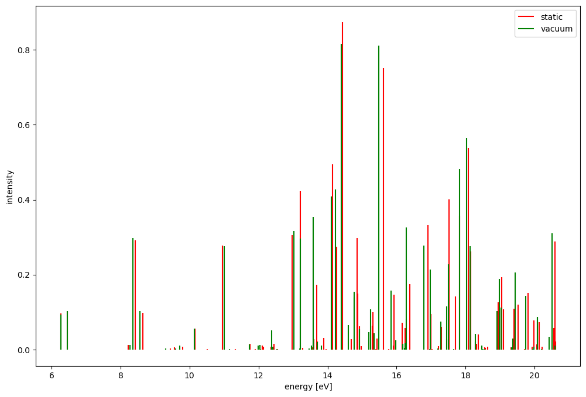

QMMM workflow using LAMMPS and VOTCA-XTP¶
What is this tutorial about¶
In this tutorial, we will learn how to set and perform excited state calculation using the Votca XTP library. We will use thiophene as our QM region.
Requirements¶
You will need to install VOTCA using the instructions described here
Once the installation is completed you need to activate the VOTCA enviroment by running the
VOTCARC.bashscript that has been installed at the bin subfolder for the path that you have provided for the installation step above
Interacting with the XTP command line interface¶
The XTP package offers the following command line interface that the user can interact with:
Run the following command to view the help message of xtp_tools:
[1]:
!xtp_tools -h
==================================================
======== VOTCA (http://www.votca.org) ========
==================================================
please read and cite: https://doi.org/10.21105/joss.06864
and submit bugs to https://github.com/votca/votca/issues
xtp_tools, version 2026-dev gitid: 8a1455c (compiled Apr 10 2026, 07:10:05)
Runs excitation/charge transport tools
Allowed options:
-h [ --help ] display this help and exit
--verbose be loud and noisy
--verbose1 be very loud and noisy
-v [ --verbose2 ] be extremly loud and noisy
-o [ --options ] arg Tool user options.
-t [ --nthreads ] arg (=1) number of threads to create
-e [ --execute ] arg Name of Tool to run
-l [ --list ] Lists all available Tools
-d [ --description ] arg Short description of a Tools
-c [ --cmdoptions ] arg Modify options via command line by e.g. '-c
xmltag.subtag=value'. Use whitespace to separate
multiple options
-p [ --printoptions ] arg Prints xml options of a Tool
Note¶
In Jupyter the
!symbol means: run the following command as a standard unix commandIn Jupyter the command
%envset an environmental variable
Setting the environment¶
Remove previous hdf5 file
[2]:
!rm -f state.hdf5
Generate the topology from the Gromacs file¶
We will first generate the mapping from MD coordinates to segments, creating an hdf5 file to store the results. You can explore the generated state.hdf5 file with e.g. hdf5itebrowser. In Python, you can use the h5py library. The command to generate the mapping is the following,
[3]:
!xtp_map -v -t MD_FILES/newfile.data -c MD_FILES/traj.dump -s system.xml -f state.hdf5 -i 99 > mapping.out
Check the mapping¶
Let us first output .pdb files for the segments, qmmolecules and classical segments in order to check the mapping. So we have to pass the calculator the filename. Votca has two ways to specify options for calculators. Using a file with the -o option or for quick things using the -c option on the command line, we will use both.
In the mapchecker section of the manual you can find a table with the mapchecker input variables and their corresponding defaults. Finally, the following command run the check
[4]:
!xtp_run -e mapchecker -c map_file=system.xml -f state.hdf5
==================================================
======== VOTCA (http://www.votca.org) ========
==================================================
please read and cite: https://doi.org/10.21105/joss.06864
and submit bugs to https://github.com/votca/votca/issues
xtp_run, version 2026-dev gitid: 8a1455c (compiled Apr 10 2026, 07:10:05)
Initializing calculator
... mapchecker
1 frames in statefile, Ids are: 10000
Starting at frame 10000
Evaluating frame 10000
Import MD Topology (i.e. frame 10000) from state.hdf5
....
... mapchecker
Using 1 threads
Writing segments to md_segments_step_10000.pdb
Writing qmmolecules to qm_segments_n_step_10000.pdb
Writing polarsegments to mp_segments_e_step_10000.pdb
Writing polarsegments to mp_segments_h_step_10000.pdb
Changes have not been written to state file.
Neighborlist Calculation¶
The following step is to determine the neighbouring pairs for exciton transport.
We will use a cutoff of 1.5 nm. If you want to have a look at an option just the -d option with the calculator name
[5]:
!xtp_run -d neighborlist
neighborlist: Determines neighbouring pairs for exciton transport
OPTION DEFAULT UNIT DESCRIPTION
segmentpairs(OPTIONAL) list of pairs of molecules for which to create pairs
pair Definition of one pair
type (REQUIRED) names of two segmenttypes to create a pair
cutoff (REQUIRED) [nm] cutoff value if the segmentname method is used
constant (1.5) [nm] contant cutoff for all segmenttypes
exciton_cutoff(OPTIONAL) cutoff for classical exciton transition charge treatment
Done - stopping here
[6]:
!xtp_run -e neighborlist -c constant=1.5 -f state.hdf5
==================================================
======== VOTCA (http://www.votca.org) ========
==================================================
please read and cite: https://doi.org/10.21105/joss.06864
and submit bugs to https://github.com/votca/votca/issues
xtp_run, version 2026-dev gitid: 8a1455c (compiled Apr 10 2026, 07:10:05)
Initializing calculator
... neighborlist
1 frames in statefile, Ids are: 10000
Starting at frame 10000
Evaluating frame 10000
Import MD Topology (i.e. frame 10000) from state.hdf5
....
... neighborlist
Using 1 threads
Evaluating 1000 segments for neighborlist.
... ... Evaluating
0% 10 20 30 40 50 60 70 80 90 100%
|----|----|----|----|----|----|----|----|----|----|
***************************************************
... ... Created 90067 direct pairs.Wrote MD topology (step = 10000, time = 0) to state.hdf5
... .
Read reorganization energies¶
In this step we will read the in site reorganization energies and store them in the state.hdf5 file. We just need to copy the input file and execute the calculation.
[7]:
!xtp_run -e einternal -f state.hdf5
==================================================
======== VOTCA (http://www.votca.org) ========
==================================================
please read and cite: https://doi.org/10.21105/joss.06864
and submit bugs to https://github.com/votca/votca/issues
xtp_run, version 2026-dev gitid: 8a1455c (compiled Apr 10 2026, 07:10:05)
Initializing calculator
... einternal
1 frames in statefile, Ids are: 10000
Starting at frame 10000
Evaluating frame 10000
Import MD Topology (i.e. frame 10000) from state.hdf5
....
... einternal
Using 1 threads
... ... Site, reorg. energies from system.xml.
... ... Read in site, reorg. energies for 1000 segments. Wrote MD topology (step = 10000, time = 0) to state.hdf5
... .
Compute site energy¶
In this step we will perform some QMMM calculations to compute the site energies. The qmmm_mm.xml file contains more options to perform the MM calculations.
[8]:
!xtp_parallel -e qmmm -o qmmm_mm.xml -f state.hdf5 -j "write"
==================================================
======== VOTCA (http://www.votca.org) ========
==================================================
please read and cite: https://doi.org/10.21105/joss.06864
and submit bugs to https://github.com/votca/votca/issues
xtp_parallel, version 2026-dev gitid: 8a1455c (compiled Apr 10 2026, 07:10:05)
Initializing calculator
... qmmm
... ... Initialized with 1 threads.
... ... Using 1 openmp threads for 1x1=1 total threads.
1 frames in statefile, Ids are: 10000
Starting at frame 10000
Evaluating frame 10000
Import MD Topology (i.e. frame 10000) from state.hdf5
....
... qmmm
... ... Writing job file qmmm_mm_jobs.xml
... ... In total 3000 jobs
Changes have not been written to state file.
The previous command generates a qmmm_mm_jobs.xml containing 3000 MM jobs to compute, if you examine that file, it should look something like:
<jobs>
<job>
<id>0</id>
<tag>thiophene_0:n</tag>
<input>
<site_energies>0:n</site_energies>
<regions>
<region>
<id>0</id>
<segments>0:n</segments>
</region>
</regions>
</input>
<status>AVAILABLE</status>
</job>
Let us run just the first 4 jobs by settings all jobs status to COMPLETE except for the first four. This can be easily done with sed as follows,
[9]:
!sed -i "s/AVAILABLE/COMPLETE/g" qmmm_mm_jobs.xml
!sed -i '0,/COMPLETE/s/COMPLETE/AVAILABLE/' qmmm_mm_jobs.xml
!sed -i '0,/COMPLETE/s/COMPLETE/AVAILABLE/' qmmm_mm_jobs.xml
!sed -i '0,/COMPLETE/s/COMPLETE/AVAILABLE/' qmmm_mm_jobs.xml
!sed -i '0,/COMPLETE/s/COMPLETE/AVAILABLE/' qmmm_mm_jobs.xml
Now we can run the jobs and save the results in the state file
[10]:
!xtp_parallel -e qmmm -o qmmm_mm.xml -f state.hdf5 -j "run"
!xtp_parallel -e qmmm -o qmmm_mm.xml -f state.hdf5 -j "read"
==================================================
======== VOTCA (http://www.votca.org) ========
==================================================
please read and cite: https://doi.org/10.21105/joss.06864
and submit bugs to https://github.com/votca/votca/issues
xtp_parallel, version 2026-dev gitid: 8a1455c (compiled Apr 10 2026, 07:10:05)
Initializing calculator
... qmmm
... ... Initialized with 1 threads.
... ... Using 1 openmp threads for 1x1=1 total threads.
1 frames in statefile, Ids are: 10000
Starting at frame 10000
Evaluating frame 10000
Import MD Topology (i.e. frame 10000) from state.hdf5
....
... qmmm
MST ERR Job file = 'qmmm_mm_jobs.xml', cache size = 8
MST ERR Initialize jobs from qmmm_mm_jobs.xml
MST ERR Registered 3000 jobs.
T00 ERR ... Requesting next job
T00 ERR ... Assign jobs from stack
T00 ERR ... Next job: ID = 0=> [ 0%]
T00 ERR ... Regions created
T00 ERR ... Id: 0 type: polarregion size: 2 charge[e]= -2.77556e-16
T00 ERR ... Id: 1 type: staticregion size: 81 charge[e]= -1.78191e-14
T00 ERR ... 2026-4-10 7:13:33 Writing jobtopology to MMMM/frame_10000/job_0_thiophene_0:n/regions.pdb
T00 ERR ... 2026-4-10 7:13:33 Only 1 scf region is used. The remaining regions are static. So no inter regions scf is required.
T00 ERR ... 2026-4-10 7:13:33 --Inter Region SCF Iteration 1 of 1
T00 ERR ... 2026-4-10 7:13:33 Evaluating polarregion 0
T00 ERR ... 2026-4-10 7:13:33 Evaluating interaction between polarregion 0 and staticregion 1
T00 ERR ... 2026-4-10 7:13:33 Starting Solving for classical polarization with 54 degrees of freedom.
T00 ERR ... 2026-4-10 7:13:33 CG: #iterations: 6, estimated error: 1.81713e-05
T00 ERR ... Total static energy [hrt]= -0.004971088488
T00 ERR ... Total polar energy [hrt]= -0.0007676658977
T00 ERR ... Total energy [hrt]= -0.005738754386
T00 ERR ... 2026-4-10 7:13:33 Evaluating staticregion 1
T00 ERR ... 2026-4-10 7:13:33 Writing checkpoint to checkpoint_iter_1.hdf5
T00 ERR ... Reporting job results
T00 ERR ... Requesting next job
T00 ERR ... Next job: ID = 1
T00 ERR ... Regions created
T00 ERR ... Id: 0 type: polarregion size: 2 charge[e]= -1
T00 ERR ... Id: 1 type: staticregion size: 81 charge[e]= -1.781907955e-14
T00 ERR ... 2026-4-10 7:13:33 Writing jobtopology to MMMM/frame_10000/job_1_thiophene_0:e/regions.pdb
T00 ERR ... 2026-4-10 7:13:33 Only 1 scf region is used. The remaining regions are static. So no inter regions scf is required.
T00 ERR ... 2026-4-10 7:13:33 --Inter Region SCF Iteration 1 of 1
T00 ERR ... 2026-4-10 7:13:33 Evaluating polarregion 0
T00 ERR ... 2026-4-10 7:13:33 Evaluating interaction between polarregion 0 and staticregion 1
T00 ERR ... 2026-4-10 7:13:33 Starting Solving for classical polarization with 54 degrees of freedom.
T00 ERR ... 2026-4-10 7:13:33 CG: #iterations: 7, estimated error: 2.932571714e-05
T00 ERR ... Total static energy [hrt]= -0.003915405303
T00 ERR ... Total polar energy [hrt]= -0.006268779815
T00 ERR ... Total energy [hrt]= -0.01018418512
T00 ERR ... 2026-4-10 7:13:33 Evaluating staticregion 1
T00 ERR ... 2026-4-10 7:13:33 Writing checkpoint to checkpoint_iter_1.hdf5
T00 ERR ... Reporting job results
T00 ERR ... Requesting next job
T00 ERR ... Next job: ID = 2
T00 ERR ... Regions created
T00 ERR ... Id: 0 type: polarregion size: 2 charge[e]= 1
T00 ERR ... Id: 1 type: staticregion size: 81 charge[e]= -1.781907955e-14
T00 ERR ... 2026-4-10 7:13:33 Writing jobtopology to MMMM/frame_10000/job_2_thiophene_0:h/regions.pdb
T00 ERR ... 2026-4-10 7:13:33 Only 1 scf region is used. The remaining regions are static. So no inter regions scf is required.
T00 ERR ... 2026-4-10 7:13:33 --Inter Region SCF Iteration 1 of 1
T00 ERR ... 2026-4-10 7:13:33 Evaluating polarregion 0
T00 ERR ... 2026-4-10 7:13:33 Evaluating interaction between polarregion 0 and staticregion 1
T00 ERR ... 2026-4-10 7:13:33 Starting Solving for classical polarization with 54 degrees of freedom.
T00 ERR ... 2026-4-10 7:13:33 CG: #iterations: 7, estimated error: 2.093123816e-05
T00 ERR ... Total static energy [hrt]= -0.005431444746
T00 ERR ... Total polar energy [hrt]= -0.004771992159
T00 ERR ... Total energy [hrt]= -0.01020343691
T00 ERR ... 2026-4-10 7:13:33 Evaluating staticregion 1
T00 ERR ... 2026-4-10 7:13:33 Writing checkpoint to checkpoint_iter_1.hdf5
T00 ERR ... Reporting job results
T00 ERR ... Requesting next job
T00 ERR ... Next job: ID = 3
T00 ERR ... Regions created
T00 ERR ... Id: 0 type: polarregion size: 2 charge[e]= -2.775557562e-16
T00 ERR ... Id: 1 type: staticregion size: 77 charge[e]= -1.693090113e-14
T00 ERR ... 2026-4-10 7:13:33 Writing jobtopology to MMMM/frame_10000/job_3_thiophene_1:n/regions.pdb
T00 ERR ... 2026-4-10 7:13:33 Only 1 scf region is used. The remaining regions are static. So no inter regions scf is required.
T00 ERR ... 2026-4-10 7:13:33 --Inter Region SCF Iteration 1 of 1
T00 ERR ... 2026-4-10 7:13:33 Evaluating polarregion 0
T00 ERR ... 2026-4-10 7:13:33 Evaluating interaction between polarregion 0 and staticregion 1
T00 ERR ... 2026-4-10 7:13:33 Starting Solving for classical polarization with 54 degrees of freedom.
T00 ERR ... 2026-4-10 7:13:33 CG: #iterations: 5, estimated error: 3.321625188e-05
T00 ERR ... Total static energy [hrt]= -0.003424359186
T00 ERR ... Total polar energy [hrt]= -0.0005740411819
T00 ERR ... Total energy [hrt]= -0.003998400368
T00 ERR ... 2026-4-10 7:13:33 Evaluating staticregion 1
T00 ERR ... 2026-4-10 7:13:33 Writing checkpoint to checkpoint_iter_1.hdf5
T00 ERR ... Reporting job results
T00 ERR ... Requesting next job
T00 ERR ... Assign jobs from stack
T00 ERR ... Sync did not yield any new jobs.
T00 ERR ... Next job: ID = - (none available)
MST ERR Assign jobs from stack
Changes have not been written to state file.
==================================================
======== VOTCA (http://www.votca.org) ========
==================================================
please read and cite: https://doi.org/10.21105/joss.06864
and submit bugs to https://github.com/votca/votca/issues
xtp_parallel, version 2026-dev gitid: 8a1455c (compiled Apr 10 2026, 07:10:05)
Initializing calculator
... qmmm
... ... Initialized with 1 threads.
... ... Using 1 openmp threads for 1x1=1 total threads.
1 frames in statefile, Ids are: 10000
Starting at frame 10000
Evaluating frame 10000
Import MD Topology (i.e. frame 10000) from state.hdf5
....
... qmmm
Found 1 states of type e
Found 1 states of type h
Found 2 states of type n
2996 incomplete jobs found.
Wrote MD topology (step = 10000, time = 0) to state.hdf5
... .
Site energy and pair energy analysis¶
In this step we generate an histogram and compute the correlation function of site energies and pair energy differences.
[11]:
!xtp_run -e eanalyze -f state.hdf5
==================================================
======== VOTCA (http://www.votca.org) ========
==================================================
please read and cite: https://doi.org/10.21105/joss.06864
and submit bugs to https://github.com/votca/votca/issues
xtp_run, version 2026-dev gitid: 8a1455c (compiled Apr 10 2026, 07:10:05)
Initializing calculator
... eanalyze
1 frames in statefile, Ids are: 10000
Starting at frame 10000
Evaluating frame 10000
Import MD Topology (i.e. frame 10000) from state.hdf5
....
... eanalyze
Using 1 threads
... ... Short-listed 1000 segments (pattern='*')
... ... ... NOTE Statistics of site energies and spatial correlations thereof are based on the short-listed segments only.
... ... ... Statistics of site-energy differences operate on the full list.
... ... excited state e
... ... excited state h
... ... excited state s
... ... excited state t
Changes have not been written to state file.
You should now see a set of files prefixed with eanalyze containing the histrogram and correlation functions.
[12]:
!ls eanalyze*
eanalyze.pairhist_e.out eanalyze.pairlist_s.out eanalyze.sitehist_e.out
eanalyze.pairhist_h.out eanalyze.pairlist_t.out eanalyze.sitehist_h.out
eanalyze.pairhist_s.out eanalyze.sitecorr_e.out eanalyze.sitehist_s.out
eanalyze.pairhist_t.out eanalyze.sitecorr_h.out eanalyze.sitehist_t.out
eanalyze.pairlist_e.out eanalyze.sitecorr_s.out
eanalyze.pairlist_h.out eanalyze.sitecorr_t.out
QM energy calculation¶
Our next task is to perform the qm calculations for each segment that we have stored in the hdf5 file. The calculations take place in 3 stages: write the jobs to a file, perform the computation and finally save the results to the state file. We created a small option file to make the calculation cheaper.
[13]:
!cat eqm.xml
<?xml version="1.0"?>
<options>
<eqm help="Executes qm calculations for individual molecules" section="sec:eqm">
<map_file>system.xml</map_file>
<gwbse>
<gw>
<mode>G0W0</mode>
</gw>
<ranges>full</ranges>
</gwbse>
<dftpackage>
<basisset>3-21G</basisset>
<auxbasisset>aux-def2-svp</auxbasisset>
</dftpackage>
</eqm>
</options>
For the sake of computational time let just compute the gw approximation and the singlet. You can also request the triplet or all, see the gwbse sectionfor the eqm calculator.
First we will write the job in a file and enable only the first 2 jobs
[14]:
!xtp_parallel -e eqm -o eqm.xml -f state.hdf5 -j "write"
!sed -i "s/AVAILABLE/COMPLETE/g" eqm.jobs
!sed -i '0,/COMPLETE/s/COMPLETE/AVAILABLE/' eqm.jobs
!sed -i '0,/COMPLETE/s/COMPLETE/AVAILABLE/' eqm.jobs
==================================================
======== VOTCA (http://www.votca.org) ========
==================================================
please read and cite: https://doi.org/10.21105/joss.06864
and submit bugs to https://github.com/votca/votca/issues
xtp_parallel, version 2026-dev gitid: 8a1455c (compiled Apr 10 2026, 07:10:05)
Initializing calculator
... eqm
... ... Initialized with 1 threads.
... ... Using 1 openmp threads for 1x1=1 total threads.
1 frames in statefile, Ids are: 10000
Starting at frame 10000
Evaluating frame 10000
Import MD Topology (i.e. frame 10000) from state.hdf5
....
... eqm
... ... Writing job file: eqm.jobs with 1000 jobs
Changes have not been written to state file.
Now, let run these 2 jobs
Here we used some more options. -o allows us to read in a file with options. -j changes the writing to running in this case. -x determines how many cores should be used for each job. We can also run multiple jobs in parallel using -p
[15]:
!xtp_parallel -e eqm -o eqm.xml -f state.hdf5 -j run -x 4
==================================================
======== VOTCA (http://www.votca.org) ========
==================================================
please read and cite: https://doi.org/10.21105/joss.06864
and submit bugs to https://github.com/votca/votca/issues
xtp_parallel, version 2026-dev gitid: 8a1455c (compiled Apr 10 2026, 07:10:05)
Initializing calculator
... eqm
... ... Initialized with 1 threads.
... ... Using 4 openmp threads for 1x4=4 total threads.
1 frames in statefile, Ids are: 10000
Starting at frame 10000
Evaluating frame 10000
Import MD Topology (i.e. frame 10000) from state.hdf5
....
... eqm
MST ERR Job file = 'eqm.jobs', cache size = 8
MST ERR Initialize jobs from eqm.jobs
MST ERR Registered 1000 jobs.
T00 ERR ... Requesting next job
T00 ERR ... Assign jobs from stack
T00 ERR ... Next job: ID = 0=> [ 0%]
T00 ERR ... 2026-4-10 7:13:38 Evaluating site 0
T00 ERR ... Running DFT
T00 ERR ... Running GWBSE
T00 ERR ... Running ESPFIT
T00 ERR ... ===== Running on 4 threads =====
T00 ERR ... 2026-4-10 7:13:44 Calculated Densities at Numerical Grid, Number of electrons is 6.83783e-08
T00 ERR ... 2026-4-10 7:13:44 Calculating ESP at CHELPG grid points
T00 ERR ... 2026-4-10 7:13:47 Netcharge constrained to -0
T00 ERR ... Sum of fitted charges: -9.22873e-16
T00 ERR ... RMSE of fit: 0.00257454
T00 ERR ... RRMSE of fit: 0.240001
T00 ERR ... El Dipole from fitted charges [e*bohr]:
dx = -0.6807 dy = +0.1555 dz = -0.2853 |d|^2 = +0.5690
T00 ERR ... El Dipole from exact qm density [e*bohr]:
dx = -0.7032 dy = +0.1607 dz = -0.2947 |d|^2 = +0.6071
T00 ERR ... Written charges to MP_FILES/frame_10000/n2s1/thiophene_0_n2s1.mps
T00 ERR ... 2026-4-10 7:13:47 Finished evaluating site 0
T00 ERR ... Saving data to molecule_0.orb
T00 ERR ... Reporting job results
T00 ERR ... Requesting next job
T00 ERR ... Next job: ID = 1
T00 ERR ... 2026-4-10 7:13:47 Evaluating site 1
T00 ERR ... Running DFT
T00 ERR ... Running GWBSE
T00 ERR ... Running ESPFIT
T00 ERR ... ===== Running on 4 threads =====
T00 ERR ... 2026-4-10 7:13:54 Calculated Densities at Numerical Grid, Number of electrons is 2.79255e-08
T00 ERR ... 2026-4-10 7:13:54 Calculating ESP at CHELPG grid points
T00 ERR ... 2026-4-10 7:13:57 Netcharge constrained to -0
T00 ERR ... Sum of fitted charges: -6.45317e-16
T00 ERR ... RMSE of fit: 0.00254488
T00 ERR ... RRMSE of fit: 0.237963
T00 ERR ... El Dipole from fitted charges [e*bohr]:
dx = -0.1910 dy = -0.6922 dz = +0.2258 |d|^2 = +0.5666
T00 ERR ... El Dipole from exact qm density [e*bohr]:
dx = -0.1974 dy = -0.7154 dz = +0.2334 |d|^2 = +0.6052
T00 ERR ... Written charges to MP_FILES/frame_10000/n2s1/thiophene_1_n2s1.mps
T00 ERR ... 2026-4-10 7:13:57 Finished evaluating site 1
T00 ERR ... Saving data to molecule_1.orb
T00 ERR ... Reporting job results
T00 ERR ... Requesting next job
T00 ERR ... Assign jobs from stack
T00 ERR ... Sync did not yield any new jobs.
T00 ERR ... Next job: ID = - (none available)
MST ERR Assign jobs from stack
Changes have not been written to state file.
QM calculation for pairs¶
In the following step we will run QM calculations for each pair in the hdf5 file. As the calculations on the previous step, we will first write the jobs in a file, then run them and finally store the results in the state file.
As in the previous section, we set the GWBSE mode to G0W0and the ranges to full, but we compute only the gw approximation. We do not need the BSE results for the coupling calculations. For more information, check the iqm calculator options. We also want to compute the singlet couplings.
Before running the calculations, we need to specify in the iqm input which states to read into the jobfile for each segment type.
Now, let’s write the jobs to the file
[16]:
!xtp_parallel -e iqm -o iqm.xml -f state.hdf5 -s 0 -j "write"
==================================================
======== VOTCA (http://www.votca.org) ========
==================================================
please read and cite: https://doi.org/10.21105/joss.06864
and submit bugs to https://github.com/votca/votca/issues
xtp_parallel, version 2026-dev gitid: 8a1455c (compiled Apr 10 2026, 07:10:05)
Initializing calculator
... iqm
... ... Initialized with 1 threads.
... ... Using 1 openmp threads for 1x1=1 total threads.
1 frames in statefile, Ids are: 10000
Starting at frame 10000
Evaluating frame 10000
Import MD Topology (i.e. frame 10000) from state.hdf5
....
... iqm
... ... Writing job file iqm.jobs
... ... In total 90067 jobs
Changes have not been written to state file.
From the jobs that we just write down, let’s make available only the first job
[17]:
!sed -i "s/AVAILABLE/COMPLETE/g" iqm.jobs
!sed -i '0,/COMPLETE/s/COMPLETE/AVAILABLE/' iqm.jobs
Now we can run and store the jobs results
[18]:
!xtp_parallel -e iqm -o iqm.xml -f state.hdf5 -s 0 -j run -q 1 -x 4
==================================================
======== VOTCA (http://www.votca.org) ========
==================================================
please read and cite: https://doi.org/10.21105/joss.06864
and submit bugs to https://github.com/votca/votca/issues
xtp_parallel, version 2026-dev gitid: 8a1455c (compiled Apr 10 2026, 07:10:05)
Initializing calculator
... iqm
... ... Initialized with 1 threads.
... ... Using 4 openmp threads for 1x4=4 total threads.
1 frames in statefile, Ids are: 10000
Starting at frame 10000
Evaluating frame 10000
Import MD Topology (i.e. frame 10000) from state.hdf5
....
... iqm
MST ERR Job file = 'iqm.jobs', cache size = 1
MST ERR Initialize jobs from iqm.jobs
MST ERR Registered 90067 jobs.
T00 ERR ... Requesting next job
T00 ERR ... Assign jobs from stack
T00 ERR ... Next job: ID = 0=> [ 0%]
T00 ERR ... 2026-4-10 7:14:5 Evaluating pair 0 [0:1] out of 90067
T00 ERR ... Running DFT
T00 ERR ... Calculating electronic couplings
T00 ERR ... Levels:Basis A[2:57] B[2:57]
T00 ERR ... Done with electronic couplings
T00 ERR ... Running GWBSE
T00 ERR ... Running BSECoupling
T00 ERR ... 2026-4-10 7:14:19 Finished evaluating pair 0:1
T00 ERR ... Orb file is not saved according to options
T00 ERR ... Reporting job results
T00 ERR ... Requesting next job
T00 ERR ... Assign jobs from stack
T00 ERR ... Sync did not yield any new jobs.
T00 ERR ... Next job: ID = - (none available)
MST ERR Assign jobs from stack
Changes have not been written to state file.
Finally, we read the results into the state
[19]:
!xtp_parallel -e iqm -o iqm.xml -f state.hdf5 -j "read"
==================================================
======== VOTCA (http://www.votca.org) ========
==================================================
please read and cite: https://doi.org/10.21105/joss.06864
and submit bugs to https://github.com/votca/votca/issues
xtp_parallel, version 2026-dev gitid: 8a1455c (compiled Apr 10 2026, 07:10:05)
Initializing calculator
... iqm
... ... Initialized with 1 threads.
... ... Using 1 openmp threads for 1x1=1 total threads.
1 frames in statefile, Ids are: 10000
Starting at frame 10000
Evaluating frame 10000
Import MD Topology (i.e. frame 10000) from state.hdf5
....
... iqm
ERROR Pairs [total:updated(e,h,s,t)] 90067:(1,1,1,0) Incomplete jobs: 90066
Wrote MD topology (step = 10000, time = 0) to state.hdf5
... .
QMMM Calculations¶
We will run the QMMM calculations we will use the pregenerated qmmm.jobs file in the current work directory, so we can directly run the calculations. We also provide an option file in the OPTIONFILES folder. In qmmm calculations you can use the jobfile tag inside the optionfile to modify options from the jobfile. Here we modify the size of the staticregion.
[20]:
!cat qmmm.xml
<?xml version="1.0"?>
<options>
<qmmm help="Executes qmmm calculations for individual molecules and clusters" section="sec:qmmm">
<print_regions_pdb help="print the geometry of the regions to a pdb file">true</print_regions_pdb>
<max_iterations help="max iterations for qmmm scf loop">50</max_iterations>
<map_file help="xml file with segment definition">system.xml</map_file>
<job_file help="name of jobfile to which jobs are written">qmmm.jobs</job_file>
<io_jobfile>
<states>n s1 t1</states>
</io_jobfile>
<regions>
<qmregion help="definition of a region">
<id help="id of a region has to start from 0">0</id>
<gwbse>
<gw>
<mode>G0W0</mode>
</gw>
<bse>
<exctotal>100</exctotal>
</bse>
<ranges>full</ranges>
</gwbse>
<dftpackage>
<basisset>3-21G</basisset>
<auxbasisset>aux-def2-svp</auxbasisset>
</dftpackage>
<statetracker>
<overlap>0.8</overlap>
</statetracker>
<state help="qmstate to calculate i.e. n or s1">s1</state>
<segments help="which segments to include in this region and which geometry they have">0:n</segments>
</qmregion>
<staticregion>
<id>1</id>
<cutoff>
<geometry>n</geometry>
<radius>jobfile</radius>
<region>0</region>
</cutoff>
</staticregion>
</regions>
</qmmm>
</options>
In the jobfile we then provide the specific option
[21]:
!cat qmmm.jobs
<jobs>
<job>
<id>0</id>
<tag>vacuum</tag>
<input>
<regions>
<staticregion>
<id>1</id>
<cutoff>
<radius>0.0</radius>
</cutoff>
</staticregion>
</regions>
</input>
<status>AVAILABLE</status>
</job>
<job>
<id>1</id>
<tag>static</tag>
<input>
<regions>
<staticregion>
<id>1</id>
<cutoff>
<radius>2.2</radius>
</cutoff>
</staticregion>
</regions>
</input>
<status>AVAILABLE</status>
</job>
</jobs>
[22]:
!xtp_parallel -e qmmm -o qmmm.xml -f state.hdf5 -j run -x 4
==================================================
======== VOTCA (http://www.votca.org) ========
==================================================
please read and cite: https://doi.org/10.21105/joss.06864
and submit bugs to https://github.com/votca/votca/issues
xtp_parallel, version 2026-dev gitid: 8a1455c (compiled Apr 10 2026, 07:10:05)
Initializing calculator
... qmmm
... ... Initialized with 1 threads.
... ... Using 4 openmp threads for 1x4=4 total threads.
1 frames in statefile, Ids are: 10000
Starting at frame 10000
Evaluating frame 10000
Import MD Topology (i.e. frame 10000) from state.hdf5
....
... qmmm
MST ERR Job file = 'qmmm.jobs', cache size = 8
MST ERR Initialize jobs from qmmm.jobs
MST ERR Registered 2 jobs.
T00 ERR ... Requesting next job
T00 ERR ... Assign jobs from stack
T00 ERR ... Next job: ID = 0=> [ 0%]
T00 ERR ... Initial state: s1
T00 ERR ... Using overlap filter with threshold 0.8
T00 ERR ... Regions created
T00 ERR ... Id: 0 type: qmregion size: 1 charge[e]= 0
T00 ERR ... Id: 1 type: staticregion size: 0 charge[e]= 0
T00 ERR ... 2026-4-10 7:14:28 Writing jobtopology to QMMM/frame_10000/job_0_vacuum/regions.pdb
T00 ERR ... 2026-4-10 7:14:28 Only 1 scf region is used. The remaining regions are static. So no inter regions scf is required.
T00 ERR ... 2026-4-10 7:14:28 --Inter Region SCF Iteration 1 of 1
T00 ERR ... 2026-4-10 7:14:28 Evaluating qmregion 0
T00 ERR ... 2026-4-10 7:14:28 Evaluating interaction between qmregion 0 and staticregion 1
T00 ERR ... Running DFT calculation
T00 ERR ... 2026-4-10 7:14:28 Using 4 threads
T00 ERR ... 2026-4-10 7:14:28 Using native Eigen implementation, no BLAS overload
T00 ERR ... Molecule Coordinates [A]
T00 ERR ... C +7.2498 +5.9987 +6.9816
T00 ERR ... C +8.3941 +5.2905 +7.2231
T00 ERR ... S +9.4238 +6.1259 +8.2255
T00 ERR ... C +8.4019 +7.4292 +8.3679
T00 ERR ... C +7.2542 +7.2442 +7.6483
T00 ERR ... H +6.4443 +5.6423 +6.3555
T00 ERR ... H +8.6517 +4.3152 +6.8421
T00 ERR ... H +8.6666 +8.2851 +8.9679
T00 ERR ... H +6.4528 +7.9674 +7.5999
T00 ERR ... 2026-4-10 7:14:28 Loaded DFT Basis Set 3-21G with 57 functions
T00 ERR ... 2026-4-10 7:14:28 Loaded AUX Basis Set aux-def2-svp with 310 functions
T00 ERR ... 2026-4-10 7:14:28 Total number of electrons: 44 (charge=0, multiplicity=1, alpha=22, beta=22, docc=22, socc=0)
T00 ERR ... 2026-4-10 7:14:28 Smallest value of AOOverlap matrix is 0.00446806
T00 ERR ... 2026-4-10 7:14:28 Removed 0 basisfunction from inverse overlap matrix
T00 ERR ... 2026-4-10 7:14:28 Convergence Options:
T00 ERR ... Delta E [Ha]: 1e-07
T00 ERR ... DIIS max error: 1e-07
T00 ERR ... DIIS histlength: 20
T00 ERR ... ADIIS start: 0.8
T00 ERR ... DIIS start: 0.002
T00 ERR ... Deleting oldest element from DIIS hist
T00 ERR ... Levelshift[Ha]: 0
T00 ERR ... Levelshift end: 0.2
T00 ERR ... Mixing Parameter alpha: 0.7
T00 ERR ... 2026-4-10 7:14:28 Setup invariant parts of Electron Repulsion integrals
T00 ERR ... 2026-4-10 7:14:28 Constructed independent particle hamiltonian
T00 ERR ... 2026-4-10 7:14:28 Nuclear Repulsion Energy is 206.268375
T00 ERR ... 2026-4-10 7:14:28 Using hybrid functional with alpha=0.25
T00 ERR ... 2026-4-10 7:14:28 Setup numerical integration grid medium for vxc functional XC_HYB_GGA_XC_PBEH
T00 ERR ... 2026-4-10 7:14:28 Setup Initial Guess using: atom
T00 ERR ... 2026-4-10 7:14:28 Calculating atom density for C
T00 ERR ... 2026-4-10 7:14:29 Calculating atom density for S
T00 ERR ... 2026-4-10 7:14:30 Calculating atom density for H
T00 ERR ... 2026-4-10 7:14:30 STARTING SCF cycle
T00 ERR ... --------------------------------------------------------------------------
T00 ERR ...
T00 ERR ... 2026-4-10 7:14:30 Iteration 1 of 100
T00 ERR ... 2026-4-10 7:14:31 Total Energy -550.109866927
T00 ERR ... 2026-4-10 7:14:31 DIIs error 0.195403284005
T00 ERR ... 2026-4-10 7:14:31 Delta Etot 0
T00 ERR ...
T00 ERR ... 2026-4-10 7:14:31 Iteration 2 of 100
T00 ERR ... 2026-4-10 7:14:31 Total Energy -550.162736654
T00 ERR ... 2026-4-10 7:14:31 DIIs error 0.123957184989
T00 ERR ... 2026-4-10 7:14:31 Delta Etot -0.0528697276634
T00 ERR ...
T00 ERR ... 2026-4-10 7:14:31 Iteration 3 of 100
T00 ERR ... 2026-4-10 7:14:31 Total Energy -550.19004191
T00 ERR ... 2026-4-10 7:14:31 DIIs error 0.0823479849619
T00 ERR ... 2026-4-10 7:14:31 Delta Etot -0.0273052552462
T00 ERR ...
T00 ERR ... 2026-4-10 7:14:31 Iteration 4 of 100
T00 ERR ... 2026-4-10 7:14:31 Total Energy -550.244849925
T00 ERR ... 2026-4-10 7:14:31 DIIs error 0.0153483951538
T00 ERR ... 2026-4-10 7:14:31 Delta Etot -0.0548080154695
T00 ERR ...
T00 ERR ... 2026-4-10 7:14:31 Iteration 5 of 100
T00 ERR ... 2026-4-10 7:14:31 Total Energy -550.245363127
T00 ERR ... 2026-4-10 7:14:31 DIIs error 0.0132140973416
T00 ERR ... 2026-4-10 7:14:31 Delta Etot -0.000513202065804
T00 ERR ...
T00 ERR ... 2026-4-10 7:14:31 Iteration 6 of 100
T00 ERR ... 2026-4-10 7:14:31 Total Energy -550.247111576
T00 ERR ... 2026-4-10 7:14:31 DIIs error 0.00306873079592
T00 ERR ... 2026-4-10 7:14:31 Delta Etot -0.00174844828848
T00 ERR ...
T00 ERR ... 2026-4-10 7:14:31 Iteration 7 of 100
T00 ERR ... 2026-4-10 7:14:31 Total Energy -550.246962463
T00 ERR ... 2026-4-10 7:14:31 DIIs error 0.00428114639591
T00 ERR ... 2026-4-10 7:14:31 Delta Etot 0.000149112322447
T00 ERR ...
T00 ERR ... 2026-4-10 7:14:31 Iteration 8 of 100
T00 ERR ... 2026-4-10 7:14:32 Total Energy -550.247216485
T00 ERR ... 2026-4-10 7:14:32 DIIs error 0.000842034819229
T00 ERR ... 2026-4-10 7:14:32 Delta Etot -0.000254021347359
T00 ERR ...
T00 ERR ... 2026-4-10 7:14:32 Iteration 9 of 100
T00 ERR ... 2026-4-10 7:14:32 Total Energy -550.247224134
T00 ERR ... 2026-4-10 7:14:32 DIIs error 1.76203933376e-05
T00 ERR ... 2026-4-10 7:14:32 Delta Etot -7.64980700296e-06
T00 ERR ...
T00 ERR ... 2026-4-10 7:14:32 Iteration 10 of 100
T00 ERR ... 2026-4-10 7:14:32 Total Energy -550.247224137
T00 ERR ... 2026-4-10 7:14:32 DIIs error 8.73881041514e-06
T00 ERR ... 2026-4-10 7:14:32 Delta Etot -2.4800783649e-09
T00 ERR ...
T00 ERR ... 2026-4-10 7:14:32 Iteration 11 of 100
T00 ERR ... 2026-4-10 7:14:32 Total Energy -550.247224137
T00 ERR ... 2026-4-10 7:14:32 DIIs error 4.0308136687e-06
T00 ERR ... 2026-4-10 7:14:32 Delta Etot -5.5035798141e-10
T00 ERR ...
T00 ERR ... 2026-4-10 7:14:32 Iteration 12 of 100
T00 ERR ... 2026-4-10 7:14:32 Total Energy -550.247224138
T00 ERR ... 2026-4-10 7:14:32 DIIs error 4.66434230217e-07
T00 ERR ... 2026-4-10 7:14:32 Delta Etot -1.69848135556e-10
T00 ERR ...
T00 ERR ... 2026-4-10 7:14:32 Iteration 13 of 100
T00 ERR ... 2026-4-10 7:14:32 Total Energy -550.247224138
T00 ERR ... 2026-4-10 7:14:32 DIIs error 4.53752289362e-07
T00 ERR ... 2026-4-10 7:14:32 Delta Etot -2.84217094304e-12
T00 ERR ...
T00 ERR ... 2026-4-10 7:14:32 Iteration 14 of 100
T00 ERR ... 2026-4-10 7:14:32 Total Energy -550.247224138
T00 ERR ... 2026-4-10 7:14:32 DIIs error 1.86038706039e-08
T00 ERR ... 2026-4-10 7:14:32 Delta Etot -1.5916157281e-12
T00 ERR ... 2026-4-10 7:14:32 Total Energy has converged to -1.59161573e-12[Ha] after 14 iterations. DIIS error is converged up to 1.86038706e-08
T00 ERR ... 2026-4-10 7:14:32 Final Single Point Energy -550.247224138 Ha
T00 ERR ... 2026-4-10 7:14:32 Final Local Exc contribution -36.7123112421 Ha
T00 ERR ... 2026-4-10 7:14:32 Final Non Local Ex contribution -11.5445965854 Ha
T00 ERR ... Orbital energies:
T00 ERR ... index occupation energy(Hartree)
T00 ERR ... 0 2 -88.9735977624
T00 ERR ... 1 2 -10.2048959023
T00 ERR ... 2 2 -10.2047819149
T00 ERR ... 3 2 -10.1828118645
T00 ERR ... 4 2 -10.1816644471
T00 ERR ... 5 2 -7.9933053810
T00 ERR ... 6 2 -5.9030083035
T00 ERR ... 7 2 -5.8981617407
T00 ERR ... 8 2 -5.8931925335
T00 ERR ... 9 2 -0.9482760230
T00 ERR ... 10 2 -0.7734187730
T00 ERR ... 11 2 -0.7572291658
T00 ERR ... 12 2 -0.5827506757
T00 ERR ... 13 2 -0.5819901798
T00 ERR ... 14 2 -0.5419008966
T00 ERR ... 15 2 -0.4353372468
T00 ERR ... 16 2 -0.4115878763
T00 ERR ... 17 2 -0.4109429825
T00 ERR ... 18 2 -0.4101239211
T00 ERR ... 19 2 -0.3589152707
T00 ERR ... 20 2 -0.2677845421
T00 ERR ... 21 2 -0.2511381963
T00 ERR ... 22 0 +0.0050170221
T00 ERR ... 23 0 +0.0840478620
T00 ERR ... 24 0 +0.0856774897
T00 ERR ... 25 0 +0.1314841031
T00 ERR ... 26 0 +0.1459176023
T00 ERR ... 27 0 +0.1884497584
T00 ERR ... 28 0 +0.2152199958
T00 ERR ... 29 0 +0.2252530715
T00 ERR ... 30 0 +0.3000874572
T00 ERR ... 31 0 +0.3691990846
T00 ERR ... 32 0 +0.4542120488
T00 ERR ... 33 0 +0.4788882525
T00 ERR ... 34 0 +0.5311463633
T00 ERR ... 35 0 +0.5472159972
T00 ERR ... 36 0 +0.5658583868
T00 ERR ... 37 0 +0.6981865224
T00 ERR ... 38 0 +0.7435370937
T00 ERR ... 39 0 +0.7523828005
T00 ERR ... 40 0 +0.7585041836
T00 ERR ... 41 0 +0.7854640898
T00 ERR ... 42 0 +0.8181892169
T00 ERR ... 43 0 +0.8383578024
T00 ERR ... 44 0 +0.8576020011
T00 ERR ... 45 0 +1.0059623458
T00 ERR ... 46 0 +1.0224609402
T00 ERR ... 47 0 +1.0430809296
T00 ERR ... 48 0 +1.0768561912
T00 ERR ... 49 0 +1.0796706765
T00 ERR ... 50 0 +1.2717981118
T00 ERR ... 51 0 +1.3626083262
T00 ERR ... 52 0 +1.4091169576
T00 ERR ... 53 0 +1.4353854136
T00 ERR ... 54 0 +1.6255476388
T00 ERR ... 55 0 +1.8645718807
T00 ERR ... 56 0 +1.9753651827
T00 ERR ... 2026-4-10 7:14:32 Electric Dipole is[e*bohr]:
dx=-0.198030602792
dy=0.0453257625211
dz=-0.0833289062581
T00 ERR ... Writing result to temp.orb
T00 ERR ... 2026-4-10 7:14:32 DFT calculation took 4.264610074 seconds.
T00 ERR ... 2026-4-10 7:14:32 RPA level range [0:56]
T00 ERR ... 2026-4-10 7:14:32 GW level range [0:56]
T00 ERR ... 2026-4-10 7:14:32 BSE level range occ[0:21] virt[22:56]
T00 ERR ... BSE type: full
T00 ERR ... 2026-4-10 7:14:32 BSE Hamiltonian has size 1540x1540
T00 ERR ... BSE without Hqp offdiagonal elements
T00 ERR ... Running GW as: G0W0
T00 ERR ... qp_sc_limit [Hartree]: 1e-05
T00 ERR ... Tasks:
T00 ERR ... GW
T00 ERR ... singlets
T00 ERR ... triplets
T00 ERR ... Sigma integration: ppm
T00 ERR ... eta: 0.001
T00 ERR ... QP solver: grid
T00 ERR ... QP full window half-width: 0.75
T00 ERR ... QP dense spacing: 0.002
T00 ERR ... QP adaptive shell width: 0.025
T00 ERR ... QP adaptive shell count: 0
T00 ERR ... QP root finder: bisection
T00 ERR ... 2026-4-10 7:14:32 Using 4 threads
T00 ERR ... 2026-4-10 7:14:32 Using native Eigen implementation, no BLAS overload
T00 ERR ... 2026-4-10 7:14:32 Molecule Coordinates [A]
T00 ERR ... 0 C 7.2498 5.9987 6.9816
T00 ERR ... 1 C 8.3941 5.2905 7.2231
T00 ERR ... 2 S 9.4238 6.1259 8.2255
T00 ERR ... 3 C 8.4019 7.4292 8.3679
T00 ERR ... 4 C 7.2542 7.2442 7.6483
T00 ERR ... 5 H 6.4443 5.6423 6.3555
T00 ERR ... 6 H 8.6517 4.3152 6.8421
T00 ERR ... 7 H 8.6666 8.2851 8.9679
T00 ERR ... 8 H 6.4528 7.9674 7.5999
T00 ERR ... 2026-4-10 7:14:32 DFT data was created by xtp
T00 ERR ... 2026-4-10 7:14:32 Loaded DFT Basis Set 3-21G
T00 ERR ... 2026-4-10 7:14:32 Filled DFT Basis of size 57
T00 ERR ... 2026-4-10 7:14:32 Loaded Auxbasis Set aux-def2-svp
T00 ERR ... 2026-4-10 7:14:32 Filled Auxbasis of size 310
T00 ERR ... 2026-4-10 7:14:32 Calculating Mmn (3-center-repulsion x orbitals)
T00 ERR ... 2026-4-10 7:14:33 Calculated Mmn (3-center-repulsion x orbitals)
T00 ERR ... 2026-4-10 7:14:33 Integrating Vxc with functional XC_HYB_GGA_XC_PBEH
T00 ERR ... 2026-4-10 7:14:33 Set hybrid exchange factor: 0.25
T00 ERR ... 2026-4-10 7:14:33 Calculated exchange-correlation expectation values
T00 ERR ... 2026-4-10 7:14:33 Calculated Hartree exchange contribution
T00 ERR ... 2026-4-10 7:14:33 Scissor shifting DFT energies by: 0 Hrt
T00 ERR ... ====== Perturbative quasiparticle energies (Hartree) ======
T00 ERR ... DeltaHLGap = +0.166441 Hartree
T00 ERR ... Level = 0 DFT = -88.9736 VXC = -4.8359 S-X = -7.2740 S-C = +1.7660 GWA = -89.6458
T00 ERR ... Level = 1 DFT = -10.2049 VXC = -1.7037 S-X = -2.6702 S-C = +0.6565 GWA = -10.5149
T00 ERR ... Level = 2 DFT = -10.2048 VXC = -1.7036 S-X = -2.6702 S-C = +0.6564 GWA = -10.5149
T00 ERR ... Level = 3 DFT = -10.1828 VXC = -1.7034 S-X = -2.6695 S-C = +0.6382 GWA = -10.5107
T00 ERR ... Level = 4 DFT = -10.1817 VXC = -1.7038 S-X = -2.6706 S-C = +0.6381 GWA = -10.5103
T00 ERR ... Level = 5 DFT = -7.9933 VXC = -1.5790 S-X = -2.5124 S-C = +0.5079 GWA = -8.4188
T00 ERR ... Level = 6 DFT = -5.9030 VXC = -1.5781 S-X = -2.1975 S-C = +0.4099 GWA = -6.1126
T00 ERR ... Level = 7 DFT = -5.8982 VXC = -1.5795 S-X = -2.2025 S-C = +0.4117 GWA = -6.1096
T00 ERR ... Level = 8 DFT = -5.8932 VXC = -1.5816 S-X = -2.2056 S-C = +0.4159 GWA = -6.1013
T00 ERR ... Level = 9 DFT = -0.9483 VXC = -0.4799 S-X = -0.7210 S-C = +0.2337 GWA = -0.9556
T00 ERR ... Level = 10 DFT = -0.7734 VXC = -0.4801 S-X = -0.6934 S-C = +0.1712 GWA = -0.8156
T00 ERR ... Level = 11 DFT = -0.7572 VXC = -0.4743 S-X = -0.6888 S-C = +0.1624 GWA = -0.8093
T00 ERR ... Level = 12 DFT = -0.5828 VXC = -0.4479 S-X = -0.6053 S-C = +0.0965 GWA = -0.6437
T00 ERR ... Level = 13 DFT = -0.5820 VXC = -0.4492 S-X = -0.6170 S-C = +0.1075 GWA = -0.6423
T00 ERR ... Level = 14 DFT = -0.5419 VXC = -0.4233 S-X = -0.5767 S-C = +0.0925 GWA = -0.6028
T00 ERR ... Level = 15 DFT = -0.4353 VXC = -0.4383 S-X = -0.5652 S-C = +0.0650 GWA = -0.4972
T00 ERR ... Level = 16 DFT = -0.4116 VXC = -0.3869 S-X = -0.5025 S-C = +0.0725 GWA = -0.4546
T00 ERR ... Level = 17 DFT = -0.4109 VXC = -0.4406 S-X = -0.5521 S-C = +0.0533 GWA = -0.4692
T00 ERR ... Level = 18 DFT = -0.4101 VXC = -0.4483 S-X = -0.5700 S-C = +0.0642 GWA = -0.4677
T00 ERR ... Level = 19 DFT = -0.3589 VXC = -0.4409 S-X = -0.5424 S-C = +0.0525 GWA = -0.4079
T00 ERR ... Level = 20 DFT = -0.2678 VXC = -0.3978 S-X = -0.4669 S-C = +0.0273 GWA = -0.3095
T00 ERR ... HOMO = 21 DFT = -0.2511 VXC = -0.3917 S-X = -0.4597 S-C = +0.0212 GWA = -0.2979
T00 ERR ... LUMO = 22 DFT = +0.0050 VXC = -0.3949 S-X = -0.2492 S-C = -0.0261 GWA = +0.1247
T00 ERR ... Level = 23 DFT = +0.0840 VXC = -0.3546 S-X = -0.1950 S-C = -0.0394 GWA = +0.2042
T00 ERR ... Level = 24 DFT = +0.0857 VXC = -0.3855 S-X = -0.2100 S-C = -0.0603 GWA = +0.2009
T00 ERR ... Level = 25 DFT = +0.1315 VXC = -0.2673 S-X = -0.1202 S-C = -0.0446 GWA = +0.2339
T00 ERR ... Level = 26 DFT = +0.1459 VXC = -0.3506 S-X = -0.1843 S-C = -0.0493 GWA = +0.2630
T00 ERR ... Level = 27 DFT = +0.1884 VXC = -0.2667 S-X = -0.1124 S-C = -0.0523 GWA = +0.2905
T00 ERR ... Level = 28 DFT = +0.2152 VXC = -0.2795 S-X = -0.1238 S-C = -0.0564 GWA = +0.3145
T00 ERR ... Level = 29 DFT = +0.2253 VXC = -0.2682 S-X = -0.1138 S-C = -0.0514 GWA = +0.3283
T00 ERR ... Level = 30 DFT = +0.3001 VXC = -0.3268 S-X = -0.1546 S-C = -0.0499 GWA = +0.4224
T00 ERR ... Level = 31 DFT = +0.3692 VXC = -0.3231 S-X = -0.1440 S-C = -0.0610 GWA = +0.4873
T00 ERR ... Level = 32 DFT = +0.4542 VXC = -0.3222 S-X = -0.1414 S-C = -0.0671 GWA = +0.5679
T00 ERR ... Level = 33 DFT = +0.4789 VXC = -0.3846 S-X = -0.1682 S-C = -0.0916 GWA = +0.6037
T00 ERR ... Level = 34 DFT = +0.5311 VXC = -0.3405 S-X = -0.1420 S-C = -0.0719 GWA = +0.6578
T00 ERR ... Level = 35 DFT = +0.5472 VXC = -0.3941 S-X = -0.1782 S-C = -0.0900 GWA = +0.6731
T00 ERR ... Level = 36 DFT = +0.5659 VXC = -0.4088 S-X = -0.1812 S-C = -0.1135 GWA = +0.6800
T00 ERR ... Level = 37 DFT = +0.6982 VXC = -0.3651 S-X = -0.1349 S-C = -0.1270 GWA = +0.8014
T00 ERR ... Level = 38 DFT = +0.7435 VXC = -0.3430 S-X = -0.1262 S-C = -0.0995 GWA = +0.8608
T00 ERR ... Level = 39 DFT = +0.7524 VXC = -0.3732 S-X = -0.1224 S-C = -0.2008 GWA = +0.8023
T00 ERR ... Level = 40 DFT = +0.7585 VXC = -0.4109 S-X = -0.1582 S-C = -0.1494 GWA = +0.8617
T00 ERR ... Level = 41 DFT = +0.7855 VXC = -0.3747 S-X = -0.1214 S-C = -0.2595 GWA = +0.7793
T00 ERR ... Level = 42 DFT = +0.8182 VXC = -0.4317 S-X = -0.1632 S-C = -0.1328 GWA = +0.9539
T00 ERR ... Level = 43 DFT = +0.8384 VXC = -0.3738 S-X = -0.1155 S-C = -0.0344 GWA = +1.0623
T00 ERR ... Level = 44 DFT = +0.8576 VXC = -0.3706 S-X = -0.1131 S-C = -0.2291 GWA = +0.8860
T00 ERR ... Level = 45 DFT = +1.0060 VXC = -0.3989 S-X = -0.1294 S-C = -0.2481 GWA = +1.0274
T00 ERR ... Level = 46 DFT = +1.0225 VXC = -0.4409 S-X = -0.1530 S-C = -0.2926 GWA = +1.0177
T00 ERR ... Level = 47 DFT = +1.0431 VXC = -0.4126 S-X = -0.1364 S-C = -0.1337 GWA = +1.1855
T00 ERR ... Level = 48 DFT = +1.0769 VXC = -0.4080 S-X = -0.1328 S-C = -0.2177 GWA = +1.1344
T00 ERR ... Level = 49 DFT = +1.0797 VXC = -0.4072 S-X = -0.1327 S-C = -0.1026 GWA = +1.2515
T00 ERR ... Level = 50 DFT = +1.2718 VXC = -0.3326 S-X = -0.0875 S-C = -0.1089 GWA = +1.4080
T00 ERR ... Level = 51 DFT = +1.3626 VXC = -0.3464 S-X = -0.0950 S-C = -0.1415 GWA = +1.4725
T00 ERR ... Level = 52 DFT = +1.4091 VXC = -0.3317 S-X = -0.0810 S-C = -0.1794 GWA = +1.4804
T00 ERR ... Level = 53 DFT = +1.4354 VXC = -0.3729 S-X = -0.1223 S-C = -0.2214 GWA = +1.4646
T00 ERR ... Level = 54 DFT = +1.6255 VXC = -0.3926 S-X = -0.1272 S-C = -0.0657 GWA = +1.8252
T00 ERR ... Level = 55 DFT = +1.8646 VXC = -0.3876 S-X = -0.1147 S-C = -0.1442 GWA = +1.9932
T00 ERR ... Level = 56 DFT = +1.9754 VXC = -0.3803 S-X = -0.1060 S-C = +0.2842 GWA = +2.5339
T00 ERR ... 2026-4-10 7:14:33 Calculated offdiagonal part of Sigma
T00 ERR ... 2026-4-10 7:14:33 Full quasiparticle Hamiltonian
T00 ERR ... ====== Diagonalized quasiparticle energies (Hartree) ======
T00 ERR ... Level = 0 PQP = -89.645783 DQP = -89.645854
T00 ERR ... Level = 1 PQP = -10.514949 DQP = -10.515127
T00 ERR ... Level = 2 PQP = -10.514930 DQP = -10.515044
T00 ERR ... Level = 3 PQP = -10.510685 DQP = -10.510879
T00 ERR ... Level = 4 PQP = -10.510348 DQP = -10.510452
T00 ERR ... Level = 5 PQP = -8.418801 DQP = -8.419096
T00 ERR ... Level = 6 PQP = -6.112590 DQP = -6.112606
T00 ERR ... Level = 7 PQP = -6.109565 DQP = -6.109566
T00 ERR ... Level = 8 PQP = -6.101344 DQP = -6.101369
T00 ERR ... Level = 9 PQP = -0.955639 DQP = -0.958832
T00 ERR ... Level = 10 PQP = -0.815637 DQP = -0.814354
T00 ERR ... Level = 11 PQP = -0.809305 DQP = -0.810952
T00 ERR ... Level = 12 PQP = -0.643712 DQP = -0.647974
T00 ERR ... Level = 13 PQP = -0.642347 DQP = -0.644653
T00 ERR ... Level = 14 PQP = -0.602778 DQP = -0.607144
T00 ERR ... Level = 15 PQP = -0.497201 DQP = -0.498673
T00 ERR ... Level = 16 PQP = -0.454594 DQP = -0.470302
T00 ERR ... Level = 17 PQP = -0.469160 DQP = -0.468718
T00 ERR ... Level = 18 PQP = -0.467652 DQP = -0.467584
T00 ERR ... Level = 19 PQP = -0.407862 DQP = -0.410237
T00 ERR ... Level = 20 PQP = -0.309525 DQP = -0.319573
T00 ERR ... HOMO = 21 PQP = -0.297913 DQP = -0.312254
T00 ERR ... LUMO = 22 PQP = +0.124683 DQP = +0.121178
T00 ERR ... Level = 23 PQP = +0.204237 DQP = +0.189924
T00 ERR ... Level = 24 PQP = +0.200921 DQP = +0.198844
T00 ERR ... Level = 25 PQP = +0.233888 DQP = +0.233159
T00 ERR ... Level = 26 PQP = +0.262968 DQP = +0.260063
T00 ERR ... Level = 27 PQP = +0.290455 DQP = +0.278215
T00 ERR ... Level = 28 PQP = +0.314517 DQP = +0.308495
T00 ERR ... Level = 29 PQP = +0.328255 DQP = +0.324997
T00 ERR ... Level = 30 PQP = +0.422416 DQP = +0.420959
T00 ERR ... Level = 31 PQP = +0.487304 DQP = +0.483887
T00 ERR ... Level = 32 PQP = +0.567875 DQP = +0.566949
T00 ERR ... Level = 33 PQP = +0.603673 DQP = +0.601631
T00 ERR ... Level = 34 PQP = +0.657810 DQP = +0.646245
T00 ERR ... Level = 35 PQP = +0.673114 DQP = +0.669084
T00 ERR ... Level = 36 PQP = +0.679951 DQP = +0.677372
T00 ERR ... Level = 37 PQP = +0.801366 DQP = +0.790151
T00 ERR ... Level = 38 PQP = +0.860806 DQP = +0.795163
T00 ERR ... Level = 39 PQP = +0.802339 DQP = +0.798302
T00 ERR ... Level = 40 PQP = +0.861748 DQP = +0.857307
T00 ERR ... Level = 41 PQP = +0.779332 DQP = +0.859827
T00 ERR ... Level = 42 PQP = +0.953895 DQP = +0.907853
T00 ERR ... Level = 43 PQP = +1.062262 DQP = +0.954454
T00 ERR ... Level = 44 PQP = +0.886020 DQP = +1.018216
T00 ERR ... Level = 45 PQP = +1.027370 DQP = +1.035318
T00 ERR ... Level = 46 PQP = +1.017739 DQP = +1.097116
T00 ERR ... Level = 47 PQP = +1.185545 DQP = +1.138979
T00 ERR ... Level = 48 PQP = +1.134406 DQP = +1.177206
T00 ERR ... Level = 49 PQP = +1.251514 DQP = +1.248033
T00 ERR ... Level = 50 PQP = +1.408050 DQP = +1.422093
T00 ERR ... Level = 51 PQP = +1.472498 DQP = +1.462196
T00 ERR ... Level = 52 PQP = +1.480416 DQP = +1.480888
T00 ERR ... Level = 53 PQP = +1.464573 DQP = +1.490489
T00 ERR ... Level = 54 PQP = +1.825233 DQP = +1.826942
T00 ERR ... Level = 55 PQP = +1.993209 DQP = +2.023483
T00 ERR ... Level = 56 PQP = +2.533894 DQP = +2.548182
T00 ERR ... 2026-4-10 7:14:33 Diagonalized QP Hamiltonian
T00 ERR ... 2026-4-10 7:14:33 GW calculation took 0.391787113 seconds.
T00 ERR ... 2026-4-10 7:14:33 Setup Full triplet hamiltonian
T00 ERR ... 2026-4-10 7:14:33 Davidson Solver using 4 threads.
T00 ERR ... 2026-4-10 7:14:33 Tolerance : 0.0001
T00 ERR ... 2026-4-10 7:14:33 DPR Correction
T00 ERR ... 2026-4-10 7:14:33 Matrix size : 1540x1540
T00 ERR ... 2026-4-10 7:14:33 iter Search Space Norm
T00 ERR ... 2026-4-10 7:14:34 0 400 6.11e-02 0.00% converged
T00 ERR ... 2026-4-10 7:14:36 1 510 7.10e-03 0.00% converged
T00 ERR ... 2026-4-10 7:14:39 2 620 2.78e-04 97.00% converged
T00 ERR ... 2026-4-10 7:14:41 3 623 7.04e-05 100.00% converged
T00 ERR ... 2026-4-10 7:14:41 Davidson converged after 3 iterations.
T00 ERR ... 2026-4-10 7:14:41-----------------------------------
T00 ERR ... 2026-4-10 7:14:41- Davidson ran for 8.417612868secs.
T00 ERR ... 2026-4-10 7:14:41-----------------------------------
T00 ERR ... 2026-4-10 7:14:41 Solved BSE for triplets
T00 ERR ... ====== triplet energies (eV) ======
T00 ERR ... T = 1 Omega = +3.805577809673 eV lamdba = +325.84 nm <FT> = +12.4465 <K_d> = -8.6409
T00 ERR ... HOMO-0 -> LUMO+0 : 95.0%
T00 ERR ...
T00 ERR ... T = 2 Omega = +4.696239951258 eV lamdba = +264.04 nm <FT> = +12.1004 <K_d> = -7.4042
T00 ERR ... HOMO-1 -> LUMO+0 : 94.8%
T00 ERR ...
T00 ERR ... T = 3 Omega = +6.075231416887 eV lamdba = +204.11 nm <FT> = +14.0271 <K_d> = -7.9518
T00 ERR ... HOMO-0 -> LUMO+2 : 85.7%
T00 ERR ...
T00 ERR ... T = 4 Omega = +6.651193157859 eV lamdba = +186.43 nm <FT> = +14.1725 <K_d> = -7.5214
T00 ERR ... HOMO-1 -> LUMO+2 : 93.6%
T00 ERR ...
T00 ERR ... T = 5 Omega = +7.119329671720 eV lamdba = +174.17 nm <FT> = +13.8286 <K_d> = -6.7093
T00 ERR ... HOMO-0 -> LUMO+1 : 96.8%
T00 ERR ...
T00 ERR ... T = 6 Omega = +7.253749185514 eV lamdba = +170.95 nm <FT> = +14.1593 <K_d> = -6.9055
T00 ERR ... HOMO-1 -> LUMO+1 : 96.7%
T00 ERR ...
T00 ERR ... T = 7 Omega = +7.693885389509 eV lamdba = +161.17 nm <FT> = +14.5794 <K_d> = -6.8856
T00 ERR ... HOMO-2 -> LUMO+0 : 97.0%
T00 ERR ...
T00 ERR ... T = 8 Omega = +8.360480529127 eV lamdba = +148.32 nm <FT> = +14.8860 <K_d> = -6.5255
T00 ERR ... HOMO-0 -> LUMO+3 : 66.2%
T00 ERR ...
T00 ERR ... T = 9 Omega = +8.710501645560 eV lamdba = +142.36 nm <FT> = +15.7024 <K_d> = -6.9919
T00 ERR ... HOMO-5 -> LUMO+0 : 90.0%
T00 ERR ...
T00 ERR ... T = 10 Omega = +8.808237759609 eV lamdba = +140.78 nm <FT> = +15.2704 <K_d> = -6.4622
T00 ERR ... HOMO-0 -> LUMO+4 : 59.4%
T00 ERR ...
T00 ERR ... T = 11 Omega = +8.861877379186 eV lamdba = +139.93 nm <FT> = +15.7345 <K_d> = -6.8727
T00 ERR ... HOMO-1 -> LUMO+4 : 81.7%
T00 ERR ...
T00 ERR ... T = 12 Omega = +8.931919093597 eV lamdba = +138.83 nm <FT> = +16.9651 <K_d> = -8.0332
T00 ERR ... HOMO-2 -> LUMO+1 : 96.6%
T00 ERR ...
T00 ERR ... T = 13 Omega = +9.155606271784 eV lamdba = +135.44 nm <FT> = +15.0615 <K_d> = -5.9059
T00 ERR ... HOMO-1 -> LUMO+3 : 81.6%
T00 ERR ...
T00 ERR ... T = 14 Omega = +9.270515666110 eV lamdba = +133.76 nm <FT> = +16.2219 <K_d> = -6.9514
T00 ERR ... HOMO-3 -> LUMO+0 : 95.2%
T00 ERR ...
T00 ERR ... T = 15 Omega = +9.312953591452 eV lamdba = +133.15 nm <FT> = +16.2998 <K_d> = -6.9869
T00 ERR ... HOMO-4 -> LUMO+0 : 80.6%
T00 ERR ...
T00 ERR ... T = 16 Omega = +9.931249262318 eV lamdba = +124.86 nm <FT> = +17.1125 <K_d> = -7.1812
T00 ERR ... HOMO-6 -> LUMO+0 : 85.5%
T00 ERR ...
T00 ERR ... T = 17 Omega = +9.951534791346 eV lamdba = +124.60 nm <FT> = +16.2184 <K_d> = -6.2669
T00 ERR ... HOMO-0 -> LUMO+5 : 85.3%
T00 ERR ...
T00 ERR ... T = 18 Omega = +10.372398240556 eV lamdba = +119.55 nm <FT> = +16.6601 <K_d> = -6.2877
T00 ERR ... HOMO-2 -> LUMO+2 : 76.5%
T00 ERR ...
T00 ERR ... T = 19 Omega = +10.741130100129 eV lamdba = +115.44 nm <FT> = +17.3681 <K_d> = -6.6270
T00 ERR ...
T00 ERR ... T = 20 Omega = +10.842638884259 eV lamdba = +114.36 nm <FT> = +16.8567 <K_d> = -6.0140
T00 ERR ... HOMO-0 -> LUMO+6 : 77.8%
T00 ERR ...
T00 ERR ... T = 21 Omega = +10.843369423778 eV lamdba = +114.36 nm <FT> = +17.5426 <K_d> = -6.6992
T00 ERR ...
T00 ERR ... T = 22 Omega = +10.870750821745 eV lamdba = +114.07 nm <FT> = +18.9005 <K_d> = -8.0297
T00 ERR ... HOMO-2 -> LUMO+4 : 54.1%
T00 ERR ...
T00 ERR ... T = 23 Omega = +10.941869513710 eV lamdba = +113.33 nm <FT> = +17.8107 <K_d> = -6.8688
T00 ERR ... HOMO-5 -> LUMO+2 : 92.3%
T00 ERR ...
T00 ERR ... T = 24 Omega = +10.956205443541 eV lamdba = +113.18 nm <FT> = +17.2421 <K_d> = -6.2859
T00 ERR ... HOMO-1 -> LUMO+5 : 50.4%
T00 ERR ...
T00 ERR ... T = 25 Omega = +11.146213157759 eV lamdba = +111.25 nm <FT> = +18.4621 <K_d> = -7.3159
T00 ERR ... HOMO-4 -> LUMO+2 : 80.3%
T00 ERR ...
T00 ERR ... T = 26 Omega = +11.282016334753 eV lamdba = +109.91 nm <FT> = +17.7992 <K_d> = -6.5172
T00 ERR ... HOMO-5 -> LUMO+1 : 75.2%
T00 ERR ...
T00 ERR ... T = 27 Omega = +11.453620663390 eV lamdba = +108.26 nm <FT> = +17.1918 <K_d> = -5.7382
T00 ERR ...
T00 ERR ... T = 28 Omega = +11.462861580962 eV lamdba = +108.18 nm <FT> = +18.9027 <K_d> = -7.4398
T00 ERR ... HOMO-2 -> LUMO+3 : 57.6%
T00 ERR ...
T00 ERR ... T = 29 Omega = +11.653308774834 eV lamdba = +106.41 nm <FT> = +20.0994 <K_d> = -8.4461
T00 ERR ...
T00 ERR ... T = 30 Omega = +11.691485140949 eV lamdba = +106.06 nm <FT> = +18.9047 <K_d> = -7.2132
T00 ERR ...
T00 ERR ... T = 31 Omega = +11.774997197296 eV lamdba = +105.31 nm <FT> = +17.3379 <K_d> = -5.5629
T00 ERR ... HOMO-1 -> LUMO+7 : 82.6%
T00 ERR ...
T00 ERR ... T = 32 Omega = +11.933283286543 eV lamdba = +103.91 nm <FT> = +20.3388 <K_d> = -8.4055
T00 ERR ...
T00 ERR ... T = 33 Omega = +12.073676008960 eV lamdba = +102.70 nm <FT> = +20.1346 <K_d> = -8.0609
T00 ERR ...
T00 ERR ... T = 34 Omega = +12.198136831160 eV lamdba = +101.65 nm <FT> = +19.0734 <K_d> = -6.8753
T00 ERR ... HOMO-6 -> LUMO+2 : 71.1%
T00 ERR ...
T00 ERR ... T = 35 Omega = +12.203067022403 eV lamdba = +101.61 nm <FT> = +19.7413 <K_d> = -7.5383
T00 ERR ...
T00 ERR ... T = 36 Omega = +12.569939966633 eV lamdba = +98.65 nm <FT> = +19.4358 <K_d> = -6.8658
T00 ERR ... HOMO-6 -> LUMO+1 : 68.5%
T00 ERR ...
T00 ERR ... T = 37 Omega = +12.665032246125 eV lamdba = +97.91 nm <FT> = +19.4996 <K_d> = -6.8346
T00 ERR ... HOMO-5 -> LUMO+4 : 71.0%
T00 ERR ...
T00 ERR ... T = 38 Omega = +12.753545032064 eV lamdba = +97.23 nm <FT> = +20.3300 <K_d> = -7.5765
T00 ERR ...
T00 ERR ... T = 39 Omega = +13.039304574585 eV lamdba = +95.10 nm <FT> = +19.6603 <K_d> = -6.6210
T00 ERR ... HOMO-0 -> LUMO+8 : 92.5%
T00 ERR ...
T00 ERR ... T = 40 Omega = +13.102877128309 eV lamdba = +94.64 nm <FT> = +19.2974 <K_d> = -6.1945
T00 ERR ... HOMO-5 -> LUMO+3 : 52.6%
T00 ERR ...
T00 ERR ... T = 41 Omega = +13.193562149325 eV lamdba = +93.99 nm <FT> = +20.5835 <K_d> = -7.3899
T00 ERR ... HOMO-4 -> LUMO+4 : 60.6%
T00 ERR ...
T00 ERR ... T = 42 Omega = +13.416862479632 eV lamdba = +92.42 nm <FT> = +19.6979 <K_d> = -6.2810
T00 ERR ... HOMO-7 -> LUMO+0 : 81.3%
T00 ERR ...
T00 ERR ... T = 43 Omega = +13.497976133925 eV lamdba = +91.87 nm <FT> = +19.4531 <K_d> = -5.9551
T00 ERR ... HOMO-2 -> LUMO+5 : 78.5%
T00 ERR ...
T00 ERR ... T = 44 Omega = +13.585238847171 eV lamdba = +91.28 nm <FT> = +19.5370 <K_d> = -5.9518
T00 ERR ... HOMO-1 -> LUMO+8 : 50.9%
T00 ERR ...
T00 ERR ... T = 45 Omega = +13.745468795183 eV lamdba = +90.21 nm <FT> = +20.6011 <K_d> = -6.8557
T00 ERR ... HOMO-3 -> LUMO+4 : 57.7%
T00 ERR ...
T00 ERR ... T = 46 Omega = +14.033265417120 eV lamdba = +88.36 nm <FT> = +20.7763 <K_d> = -6.7430
T00 ERR ... HOMO-8 -> LUMO+0 : 88.2%
T00 ERR ...
T00 ERR ... T = 47 Omega = +14.073478188971 eV lamdba = +88.11 nm <FT> = +20.4151 <K_d> = -6.3416
T00 ERR ... HOMO-6 -> LUMO+4 : 53.8%
T00 ERR ...
T00 ERR ... T = 48 Omega = +14.135250619595 eV lamdba = +87.72 nm <FT> = +21.0078 <K_d> = -6.8725
T00 ERR ... HOMO-9 -> LUMO+0 : 89.4%
T00 ERR ...
T00 ERR ... T = 49 Omega = +14.229813064935 eV lamdba = +87.14 nm <FT> = +20.8489 <K_d> = -6.6191
T00 ERR ...
T00 ERR ... T = 50 Omega = +14.352345414138 eV lamdba = +86.40 nm <FT> = +20.1583 <K_d> = -5.8060
T00 ERR ...
T00 ERR ... T = 51 Omega = +14.627822466253 eV lamdba = +84.77 nm <FT> = +20.3935 <K_d> = -5.7657
T00 ERR ... HOMO-5 -> LUMO+5 : 87.3%
T00 ERR ...
T00 ERR ... T = 52 Omega = +14.732665239777 eV lamdba = +84.17 nm <FT> = +20.5907 <K_d> = -5.8580
T00 ERR ...
T00 ERR ... T = 53 Omega = +14.750305773633 eV lamdba = +84.07 nm <FT> = +20.7196 <K_d> = -5.9693
T00 ERR ...
T00 ERR ... T = 54 Omega = +14.798869286626 eV lamdba = +83.79 nm <FT> = +21.2237 <K_d> = -6.4248
T00 ERR ...
T00 ERR ... T = 55 Omega = +14.975636136459 eV lamdba = +82.80 nm <FT> = +21.4023 <K_d> = -6.4266
T00 ERR ... HOMO-0 -> LUMO+9 : 91.0%
T00 ERR ...
T00 ERR ... T = 56 Omega = +15.033771485778 eV lamdba = +82.48 nm <FT> = +21.7463 <K_d> = -6.7125
T00 ERR ... HOMO-7 -> LUMO+2 : 89.7%
T00 ERR ...
T00 ERR ... T = 57 Omega = +15.218555291464 eV lamdba = +81.48 nm <FT> = +21.1969 <K_d> = -5.9784
T00 ERR ...
T00 ERR ... T = 58 Omega = +15.284521170493 eV lamdba = +81.13 nm <FT> = +21.4316 <K_d> = -6.1471
T00 ERR ... HOMO-1 -> LUMO+9 : 62.9%
T00 ERR ...
T00 ERR ... T = 59 Omega = +15.501608162938 eV lamdba = +79.99 nm <FT> = +22.1246 <K_d> = -6.6230
T00 ERR ... HOMO-7 -> LUMO+1 : 64.6%
T00 ERR ...
T00 ERR ... T = 60 Omega = +15.527177669181 eV lamdba = +79.86 nm <FT> = +21.1295 <K_d> = -5.6024
T00 ERR ... HOMO-5 -> LUMO+6 : 72.8%
T00 ERR ...
T00 ERR ... T = 61 Omega = +15.664273075278 eV lamdba = +79.16 nm <FT> = +21.7939 <K_d> = -6.1296
T00 ERR ... HOMO-5 -> LUMO+7 : 62.4%
T00 ERR ...
T00 ERR ... T = 62 Omega = +15.742723283999 eV lamdba = +78.77 nm <FT> = +21.7924 <K_d> = -6.0497
T00 ERR ... HOMO-4 -> LUMO+7 : 54.7%
T00 ERR ...
T00 ERR ... T = 63 Omega = +15.765205877641 eV lamdba = +78.65 nm <FT> = +21.8292 <K_d> = -6.0640
T00 ERR ... HOMO-3 -> LUMO+7 : 59.5%
T00 ERR ...
T00 ERR ... T = 64 Omega = +15.894484799951 eV lamdba = +78.01 nm <FT> = +22.8403 <K_d> = -6.9458
T00 ERR ... HOMO-2 -> LUMO+8 : 88.0%
T00 ERR ...
T00 ERR ... T = 65 Omega = +15.969928244016 eV lamdba = +77.65 nm <FT> = +22.6706 <K_d> = -6.7007
T00 ERR ... HOMO-9 -> LUMO+2 : 66.0%
T00 ERR ...
T00 ERR ... T = 66 Omega = +16.213750941834 eV lamdba = +76.48 nm <FT> = +22.9342 <K_d> = -6.7204
T00 ERR ... HOMO-8 -> LUMO+2 : 88.1%
T00 ERR ...
T00 ERR ... T = 67 Omega = +16.343251850516 eV lamdba = +75.87 nm <FT> = +22.5036 <K_d> = -6.1604
T00 ERR ... HOMO-6 -> LUMO+7 : 63.1%
T00 ERR ...
T00 ERR ... T = 68 Omega = +16.371219550404 eV lamdba = +75.74 nm <FT> = +23.0799 <K_d> = -6.7087
T00 ERR ... HOMO-9 -> LUMO+1 : 80.8%
T00 ERR ...
T00 ERR ... T = 69 Omega = +16.587321851505 eV lamdba = +74.76 nm <FT> = +22.1843 <K_d> = -5.5970
T00 ERR ... HOMO-6 -> LUMO+6 : 63.4%
T00 ERR ...
T00 ERR ... T = 70 Omega = +16.607701676090 eV lamdba = +74.66 nm <FT> = +24.1052 <K_d> = -7.4975
T00 ERR ... HOMO-1 -> LUMO+10 : 79.1%
T00 ERR ...
T00 ERR ... T = 71 Omega = +16.624670598915 eV lamdba = +74.59 nm <FT> = +23.1232 <K_d> = -6.4985
T00 ERR ... HOMO-8 -> LUMO+1 : 87.3%
T00 ERR ...
T00 ERR ... T = 72 Omega = +17.062201962554 eV lamdba = +72.68 nm <FT> = +24.0575 <K_d> = -6.9953
T00 ERR ... HOMO-5 -> LUMO+8 : 53.8%
T00 ERR ...
T00 ERR ... T = 73 Omega = +17.081607245132 eV lamdba = +72.59 nm <FT> = +23.6662 <K_d> = -6.5846
T00 ERR ... HOMO-0 -> LUMO+10 : 94.5%
T00 ERR ...
T00 ERR ... T = 74 Omega = +17.139871152917 eV lamdba = +72.35 nm <FT> = +23.6433 <K_d> = -6.5035
T00 ERR ... HOMO-7 -> LUMO+4 : 50.7%
T00 ERR ...
T00 ERR ... T = 75 Omega = +17.248573607272 eV lamdba = +71.89 nm <FT> = +22.7299 <K_d> = -5.4813
T00 ERR ... HOMO-7 -> LUMO+3 : 66.8%
T00 ERR ...
T00 ERR ... T = 76 Omega = +17.358218332568 eV lamdba = +71.44 nm <FT> = +24.3889 <K_d> = -7.0307
T00 ERR ... HOMO-4 -> LUMO+8 : 65.2%
T00 ERR ...
T00 ERR ... T = 77 Omega = +17.398364281019 eV lamdba = +71.27 nm <FT> = +24.0923 <K_d> = -6.6939
T00 ERR ... HOMO-3 -> LUMO+8 : 64.5%
T00 ERR ...
T00 ERR ... T = 78 Omega = +17.619048976348 eV lamdba = +70.38 nm <FT> = +24.6691 <K_d> = -7.0500
T00 ERR ...
T00 ERR ... T = 79 Omega = +17.785105071612 eV lamdba = +69.72 nm <FT> = +24.5691 <K_d> = -6.7840
T00 ERR ...
T00 ERR ... T = 80 Omega = +18.036965607393 eV lamdba = +68.75 nm <FT> = +24.3772 <K_d> = -6.3402
T00 ERR ...
T00 ERR ... T = 81 Omega = +18.109770349305 eV lamdba = +68.47 nm <FT> = +24.3474 <K_d> = -6.2376
T00 ERR ... HOMO-0 -> LUMO+11 : 66.4%
T00 ERR ...
T00 ERR ... T = 82 Omega = +18.192836947125 eV lamdba = +68.16 nm <FT> = +25.0983 <K_d> = -6.9054
T00 ERR ... HOMO-1 -> LUMO+11 : 51.5%
T00 ERR ...
T00 ERR ... T = 83 Omega = +18.196198856727 eV lamdba = +68.15 nm <FT> = +24.4950 <K_d> = -6.2988
T00 ERR ... HOMO-2 -> LUMO+9 : 76.3%
T00 ERR ...
T00 ERR ... T = 84 Omega = +18.201091487472 eV lamdba = +68.13 nm <FT> = +24.3999 <K_d> = -6.1988
T00 ERR ...
T00 ERR ... T = 85 Omega = +18.408106079722 eV lamdba = +67.36 nm <FT> = +25.1746 <K_d> = -6.7665
T00 ERR ...
T00 ERR ... T = 86 Omega = +18.445951917122 eV lamdba = +67.22 nm <FT> = +25.0498 <K_d> = -6.6039
T00 ERR ...
T00 ERR ... T = 87 Omega = +18.562545013445 eV lamdba = +66.80 nm <FT> = +26.6808 <K_d> = -8.1182
T00 ERR ...
T00 ERR ... T = 88 Omega = +18.575069216501 eV lamdba = +66.76 nm <FT> = +24.8260 <K_d> = -6.2510
T00 ERR ...
T00 ERR ... T = 89 Omega = +18.649153143982 eV lamdba = +66.49 nm <FT> = +25.4921 <K_d> = -6.8429
T00 ERR ... HOMO-11 -> LUMO+0 : 94.0%
T00 ERR ...
T00 ERR ... T = 90 Omega = +18.989760158403 eV lamdba = +65.30 nm <FT> = +24.9849 <K_d> = -5.9951
T00 ERR ...
T00 ERR ... T = 91 Omega = +19.004887721757 eV lamdba = +65.25 nm <FT> = +25.1162 <K_d> = -6.1114
T00 ERR ...
T00 ERR ... T = 92 Omega = +19.011672046144 eV lamdba = +65.22 nm <FT> = +25.7447 <K_d> = -6.7330
T00 ERR ...
T00 ERR ... T = 93 Omega = +19.211133207732 eV lamdba = +64.55 nm <FT> = +25.8428 <K_d> = -6.6316
T00 ERR ... HOMO-5 -> LUMO+9 : 71.0%
T00 ERR ...
T00 ERR ... T = 94 Omega = +19.360733920939 eV lamdba = +64.05 nm <FT> = +25.4593 <K_d> = -6.0985
T00 ERR ... HOMO-8 -> LUMO+5 : 60.9%
T00 ERR ...
T00 ERR ... T = 95 Omega = +19.517818846897 eV lamdba = +63.53 nm <FT> = +26.2457 <K_d> = -6.7279
T00 ERR ...
T00 ERR ... T = 96 Omega = +19.560164476871 eV lamdba = +63.39 nm <FT> = +26.2810 <K_d> = -6.7209
T00 ERR ...
T00 ERR ... T = 97 Omega = +19.772455352532 eV lamdba = +62.71 nm <FT> = +25.6088 <K_d> = -5.8363
T00 ERR ...
T00 ERR ... T = 98 Omega = +19.847289771437 eV lamdba = +62.48 nm <FT> = +26.8900 <K_d> = -7.0427
T00 ERR ... HOMO-0 -> LUMO+14 : 57.3%
T00 ERR ...
T00 ERR ... T = 99 Omega = +19.864070893315 eV lamdba = +62.42 nm <FT> = +26.1488 <K_d> = -6.2847
T00 ERR ... HOMO-0 -> LUMO+12 : 96.1%
T00 ERR ...
T00 ERR ... T = 100 Omega = +20.010597201642 eV lamdba = +61.97 nm <FT> = +26.9442 <K_d> = -6.9336
T00 ERR ... HOMO-1 -> LUMO+13 : 87.7%
T00 ERR ...
T00 ERR ... 2026-4-10 7:14:41 Setup Full singlet hamiltonian
T00 ERR ... 2026-4-10 7:14:42 Davidson Solver using 4 threads.
T00 ERR ... 2026-4-10 7:14:42 Tolerance : 0.0001
T00 ERR ... 2026-4-10 7:14:42 DPR Correction
T00 ERR ... 2026-4-10 7:14:42 Matrix size : 1540x1540
T00 ERR ... 2026-4-10 7:14:42 iter Search Space Norm
T00 ERR ... 2026-4-10 7:14:43 0 400 2.11e-01 0.00% converged
T00 ERR ... 2026-4-10 7:14:45 1 510 8.81e-03 0.00% converged
T00 ERR ... 2026-4-10 7:14:48 2 620 3.02e-04 94.00% converged
T00 ERR ... 2026-4-10 7:14:50 3 626 5.24e-05 100.00% converged
T00 ERR ... 2026-4-10 7:14:50 Davidson converged after 3 iterations.
T00 ERR ... 2026-4-10 7:14:50-----------------------------------
T00 ERR ... 2026-4-10 7:14:50- Davidson ran for 8.789208564secs.
T00 ERR ... 2026-4-10 7:14:50-----------------------------------
T00 ERR ... 2026-4-10 7:14:50 Solved BSE for singlets
T00 ERR ... ====== singlet energies (eV) ======
T00 ERR ... S = 1 Omega = +6.264211583725 eV lamdba = +197.95 nm <FT> = +12.4746 <K_x> = +0.6214 <K_d> = -6.8318
T00 ERR ... TrDipole length gauge[e*bohr] dx = +0.7031 dy = -0.1607 dz = +0.2947 |d|^2 = +0.6070 f = +0.0932
T00 ERR ... HOMO-1 -> LUMO+0 : 85.3%
T00 ERR ...
T00 ERR ... S = 2 Omega = +6.449819814676 eV lamdba = +192.25 nm <FT> = +12.6388 <K_x> = +1.1574 <K_d> = -7.3464
T00 ERR ... TrDipole length gauge[e*bohr] dx = +0.0030 dy = +0.7100 dz = +0.3801 |d|^2 = +0.6485 f = +0.1025
T00 ERR ... HOMO-0 -> LUMO+0 : 95.1%
T00 ERR ...
T00 ERR ... S = 3 Omega = +7.590959762479 eV lamdba = +163.35 nm <FT> = +13.7766 <K_x> = +0.3288 <K_d> = -6.5145
T00 ERR ... TrDipole length gauge[e*bohr] dx = +0.0037 dy = +0.0063 dz = -0.0119 |d|^2 = +0.0002 f = +0.0000
T00 ERR ... HOMO-0 -> LUMO+1 : 96.8%
T00 ERR ...
T00 ERR ... S = 4 Omega = +7.681602859946 eV lamdba = +161.42 nm <FT> = +14.0648 <K_x> = +0.3745 <K_d> = -6.7577
T00 ERR ... TrDipole length gauge[e*bohr] dx = +0.0000 dy = +0.0013 dz = +0.0007 |d|^2 = +0.0000 f = +0.0000
T00 ERR ... HOMO-1 -> LUMO+1 : 98.5%
T00 ERR ...
T00 ERR ... S = 5 Omega = +8.277305796448 eV lamdba = +149.81 nm <FT> = +14.6116 <K_x> = +0.5050 <K_d> = -6.8393
T00 ERR ... TrDipole length gauge[e*bohr] dx = +0.1058 dy = +0.1054 dz = -0.1974 |d|^2 = +0.0613 f = +0.0124
T00 ERR ... HOMO-2 -> LUMO+0 : 95.8%
T00 ERR ...
T00 ERR ... S = 6 Omega = +8.359091072470 eV lamdba = +148.34 nm <FT> = +14.5446 <K_x> = +1.0462 <K_d> = -7.2317
T00 ERR ... TrDipole length gauge[e*bohr] dx = +1.0894 dy = -0.2482 dz = +0.4565 |d|^2 = +1.4567 f = +0.2983
T00 ERR ... HOMO-0 -> LUMO+2 : 79.1%
T00 ERR ...
T00 ERR ... S = 7 Omega = +8.566203307301 eV lamdba = +144.75 nm <FT> = +14.5646 <K_x> = +0.8882 <K_d> = -6.8866
T00 ERR ... TrDipole length gauge[e*bohr] dx = +0.0017 dy = +0.6186 dz = +0.3310 |d|^2 = +0.4922 f = +0.1033
T00 ERR ... HOMO-1 -> LUMO+2 : 93.1%
T00 ERR ...
T00 ERR ... S = 8 Omega = +8.847510699886 eV lamdba = +140.15 nm <FT> = +14.6678 <K_x> = +0.2893 <K_d> = -6.1096
T00 ERR ... TrDipole length gauge[e*bohr] dx = +0.0001 dy = -0.0002 dz = +0.0000 |d|^2 = +0.0000 f = +0.0000
T00 ERR ... HOMO-0 -> LUMO+3 : 88.7%
T00 ERR ...
T00 ERR ... S = 9 Omega = +9.080433106498 eV lamdba = +136.56 nm <FT> = +15.3333 <K_x> = +0.1939 <K_d> = -6.4467
T00 ERR ... TrDipole length gauge[e*bohr] dx = -0.0004 dy = -0.0001 dz = -0.0002 |d|^2 = +0.0000 f = +0.0000
T00 ERR ... HOMO-0 -> LUMO+4 : 86.4%
T00 ERR ...
T00 ERR ... S = 10 Omega = +9.304976074928 eV lamdba = +133.26 nm <FT> = +14.8997 <K_x> = +0.1243 <K_d> = -5.7190
T00 ERR ... TrDipole length gauge[e*bohr] dx = +0.0445 dy = +0.0441 dz = -0.0823 |d|^2 = +0.0107 f = +0.0024
T00 ERR ... HOMO-1 -> LUMO+3 : 95.1%
T00 ERR ...
T00 ERR ... S = 11 Omega = +9.600297421621 eV lamdba = +129.16 nm <FT> = +16.1547 <K_x> = +0.2707 <K_d> = -6.8251
T00 ERR ... TrDipole length gauge[e*bohr] dx = -0.0376 dy = -0.0406 dz = +0.0763 |d|^2 = +0.0089 f = +0.0021
T00 ERR ... HOMO-3 -> LUMO+0 : 90.9%
T00 ERR ...
T00 ERR ... S = 12 Omega = +9.706884384383 eV lamdba = +127.74 nm <FT> = +15.8035 <K_x> = +0.5310 <K_d> = -6.6277
T00 ERR ... TrDipole length gauge[e*bohr] dx = +0.0854 dy = +0.0868 dz = -0.1630 |d|^2 = +0.0414 f = +0.0098
T00 ERR ... HOMO-1 -> LUMO+4 : 83.1%
T00 ERR ...
T00 ERR ... S = 13 Omega = +9.707167882698 eV lamdba = +127.74 nm <FT> = +16.2454 <K_x> = +0.3938 <K_d> = -6.9319
T00 ERR ... TrDipole length gauge[e*bohr] dx = +0.0302 dy = +0.0224 dz = -0.0411 |d|^2 = +0.0031 f = +0.0007
T00 ERR ... HOMO-4 -> LUMO+0 : 79.5%
T00 ERR ...
T00 ERR ... S = 14 Omega = +10.142877344866 eV lamdba = +122.25 nm <FT> = +16.4331 <K_x> = +1.1592 <K_d> = -7.4494
T00 ERR ... TrDipole length gauge[e*bohr] dx = -0.4247 dy = +0.0966 dz = -0.1774 |d|^2 = +0.2212 f = +0.0550
T00 ERR ... HOMO-5 -> LUMO+0 : 88.3%
T00 ERR ...
T00 ERR ... S = 15 Omega = +10.346645677938 eV lamdba = +119.85 nm <FT> = +16.9270 <K_x> = +0.3272 <K_d> = -6.9075
T00 ERR ... TrDipole length gauge[e*bohr] dx = +0.0015 dy = +0.0006 dz = +0.0010 |d|^2 = +0.0000 f = +0.0000
T00 ERR ... HOMO-6 -> LUMO+0 : 75.7%
T00 ERR ...
T00 ERR ... S = 16 Omega = +10.381989876958 eV lamdba = +119.44 nm <FT> = +16.0835 <K_x> = +0.3180 <K_d> = -6.0196
T00 ERR ... TrDipole length gauge[e*bohr] dx = +0.0078 dy = +0.0070 dz = -0.0131 |d|^2 = +0.0003 f = +0.0001
T00 ERR ... HOMO-0 -> LUMO+5 : 91.4%
T00 ERR ...
T00 ERR ... S = 17 Omega = +10.532509841731 eV lamdba = +117.73 nm <FT> = +16.6671 <K_x> = +0.1365 <K_d> = -6.2711
T00 ERR ... TrDipole length gauge[e*bohr] dx = -0.0024 dy = -0.0018 dz = -0.0022 |d|^2 = +0.0000 f = +0.0000
T00 ERR ... HOMO-2 -> LUMO+2 : 69.0%
T00 ERR ...
T00 ERR ... S = 18 Omega = +10.962812805293 eV lamdba = +113.11 nm <FT> = +16.3732 <K_x> = +0.0439 <K_d> = -5.4543
T00 ERR ... TrDipole length gauge[e*bohr] dx = -0.0002 dy = +0.0025 dz = +0.0014 |d|^2 = +0.0000 f = +0.0000
T00 ERR ... HOMO-1 -> LUMO+5 : 96.9%
T00 ERR ...
T00 ERR ... S = 19 Omega = +11.006428983610 eV lamdba = +112.66 nm <FT> = +17.2087 <K_x> = +1.1841 <K_d> = -7.3864
T00 ERR ... TrDipole length gauge[e*bohr] dx = -0.0036 dy = -0.8917 dz = -0.4768 |d|^2 = +1.0224 f = +0.2757
T00 ERR ... HOMO-2 -> LUMO+1 : 86.7%
T00 ERR ...
T00 ERR ... S = 20 Omega = +11.154365075785 eV lamdba = +111.17 nm <FT> = +16.8801 <K_x> = +0.1938 <K_d> = -5.9195
T00 ERR ... TrDipole length gauge[e*bohr] dx = +0.0178 dy = +0.0149 dz = -0.0335 |d|^2 = +0.0017 f = +0.0005
T00 ERR ... HOMO-0 -> LUMO+6 : 87.6%
T00 ERR ...
T00 ERR ... S = 21 Omega = +11.354732554827 eV lamdba = +109.21 nm <FT> = +18.0580 <K_x> = +0.4005 <K_d> = -7.1037
T00 ERR ... TrDipole length gauge[e*bohr] dx = +0.0002 dy = +0.0015 dz = +0.0008 |d|^2 = +0.0000 f = +0.0000
T00 ERR ... HOMO-3 -> LUMO+2 : 76.6%
T00 ERR ...
T00 ERR ... S = 22 Omega = +11.436765367889 eV lamdba = +108.42 nm <FT> = +17.2437 <K_x> = +0.3935 <K_d> = -6.2004
T00 ERR ... TrDipole length gauge[e*bohr] dx = +0.0001 dy = +0.0006 dz = +0.0005 |d|^2 = +0.0000 f = +0.0000
T00 ERR ... HOMO-0 -> LUMO+7 : 75.4%
T00 ERR ...
T00 ERR ... S = 23 Omega = +11.638203220090 eV lamdba = +106.55 nm <FT> = +17.8937 <K_x> = +0.3355 <K_d> = -6.5910
T00 ERR ... TrDipole length gauge[e*bohr] dx = -0.0044 dy = +0.0005 dz = -0.0022 |d|^2 = +0.0000 f = +0.0000
T00 ERR ... HOMO-5 -> LUMO+1 : 91.3%
T00 ERR ...
T00 ERR ... S = 24 Omega = +11.731784173624 eV lamdba = +105.70 nm <FT> = +17.2211 <K_x> = +0.2545 <K_d> = -5.7438
T00 ERR ... TrDipole length gauge[e*bohr] dx = -0.0057 dy = -0.0046 dz = +0.0083 |d|^2 = +0.0001 f = +0.0000
T00 ERR ... HOMO-1 -> LUMO+6 : 73.1%
T00 ERR ...
T00 ERR ... S = 25 Omega = +11.735405385227 eV lamdba = +105.66 nm <FT> = +18.1918 <K_x> = +0.4071 <K_d> = -6.8635
T00 ERR ... TrDipole length gauge[e*bohr] dx = +0.0921 dy = +0.0853 dz = -0.1711 |d|^2 = +0.0450 f = +0.0129
T00 ERR ... HOMO-4 -> LUMO+2 : 74.5%
T00 ERR ...
T00 ERR ... S = 26 Omega = +11.995309304519 eV lamdba = +103.37 nm <FT> = +17.5214 <K_x> = +0.2258 <K_d> = -5.7519
T00 ERR ... TrDipole length gauge[e*bohr] dx = +0.0825 dy = +0.0711 dz = -0.1568 |d|^2 = +0.0365 f = +0.0107
T00 ERR ... HOMO-1 -> LUMO+7 : 86.6%
T00 ERR ...
T00 ERR ... S = 27 Omega = +12.032888908478 eV lamdba = +103.05 nm <FT> = +18.3260 <K_x> = +0.8039 <K_d> = -7.0970
T00 ERR ... TrDipole length gauge[e*bohr] dx = +0.0070 dy = +0.1862 dz = +0.0852 |d|^2 = +0.0420 f = +0.0124
T00 ERR ... HOMO-5 -> LUMO+2 : 88.2%
T00 ERR ...
T00 ERR ... S = 28 Omega = +12.050614854879 eV lamdba = +102.90 nm <FT> = +17.9128 <K_x> = +0.3946 <K_d> = -6.2568
T00 ERR ... TrDipole length gauge[e*bohr] dx = +0.0545 dy = -0.0130 dz = +0.0233 |d|^2 = +0.0037 f = +0.0011
T00 ERR ... HOMO-2 -> LUMO+3 : 58.2%
T00 ERR ...
T00 ERR ... S = 29 Omega = +12.370936917033 eV lamdba = +100.23 nm <FT> = +18.1245 <K_x> = +0.3462 <K_d> = -6.0998
T00 ERR ... TrDipole length gauge[e*bohr] dx = -0.3712 dy = +0.0845 dz = -0.1557 |d|^2 = +0.1691 f = +0.0513
T00 ERR ...
T00 ERR ... S = 30 Omega = +12.410096950636 eV lamdba = +99.92 nm <FT> = +18.4758 <K_x> = +0.3075 <K_d> = -6.3732
T00 ERR ... TrDipole length gauge[e*bohr] dx = +0.0012 dy = +0.1348 dz = +0.0728 |d|^2 = +0.0235 f = +0.0071
T00 ERR ... HOMO-3 -> LUMO+1 : 90.2%
T00 ERR ...
T00 ERR ... S = 31 Omega = +12.529981211239 eV lamdba = +98.96 nm <FT> = +19.0208 <K_x> = +0.2820 <K_d> = -6.7728
T00 ERR ... TrDipole length gauge[e*bohr] dx = -0.0322 dy = -0.0293 dz = +0.0570 |d|^2 = +0.0051 f = +0.0016
T00 ERR ... HOMO-6 -> LUMO+2 : 83.3%
T00 ERR ...
T00 ERR ... S = 32 Omega = +13.031116804442 eV lamdba = +95.16 nm <FT> = +19.0117 <K_x> = +0.5665 <K_d> = -6.5471
T00 ERR ... TrDipole length gauge[e*bohr] dx = -0.8982 dy = +0.2054 dz = -0.3770 |d|^2 = +0.9911 f = +0.3164
T00 ERR ...
T00 ERR ... S = 33 Omega = +13.196512368697 eV lamdba = +93.96 nm <FT> = +19.0340 <K_x> = +0.2796 <K_d> = -6.1171
T00 ERR ... TrDipole length gauge[e*bohr] dx = +0.0510 dy = +0.0298 dz = -0.0702 |d|^2 = +0.0084 f = +0.0027
T00 ERR ... HOMO-5 -> LUMO+3 : 66.6%
T00 ERR ...
T00 ERR ... S = 34 Omega = +13.218294886938 eV lamdba = +93.81 nm <FT> = +19.1139 <K_x> = +0.9017 <K_d> = -6.7973
T00 ERR ... TrDipole length gauge[e*bohr] dx = +0.8638 dy = -0.1980 dz = +0.3643 |d|^2 = +0.9180 f = +0.2973
T00 ERR ... HOMO-6 -> LUMO+1 : 51.4%
T00 ERR ...
T00 ERR ... S = 35 Omega = +13.457170951164 eV lamdba = +92.14 nm <FT> = +19.4583 <K_x> = +0.2954 <K_d> = -6.2966
T00 ERR ... TrDipole length gauge[e*bohr] dx = +0.0503 dy = +0.0276 dz = -0.0561 |d|^2 = +0.0064 f = +0.0021
T00 ERR ... HOMO-5 -> LUMO+4 : 52.3%
T00 ERR ...
T00 ERR ... S = 36 Omega = +13.490072556787 eV lamdba = +91.92 nm <FT> = +19.6583 <K_x> = +0.3700 <K_d> = -6.5383
T00 ERR ... TrDipole length gauge[e*bohr] dx = +0.0000 dy = +0.0001 dz = +0.0003 |d|^2 = +0.0000 f = +0.0000
T00 ERR ... HOMO-0 -> LUMO+8 : 98.1%
T00 ERR ...
T00 ERR ... S = 37 Omega = +13.528760033796 eV lamdba = +91.66 nm <FT> = +19.2256 <K_x> = +0.4887 <K_d> = -6.1856
T00 ERR ... TrDipole length gauge[e*bohr] dx = -0.0009 dy = +0.1560 dz = +0.0835 |d|^2 = +0.0313 f = +0.0104
T00 ERR ...
T00 ERR ... S = 38 Omega = +13.587721513704 eV lamdba = +91.26 nm <FT> = +19.2772 <K_x> = +0.7053 <K_d> = -6.3947
T00 ERR ... TrDipole length gauge[e*bohr] dx = +0.9299 dy = -0.2119 dz = +0.3902 |d|^2 = +1.0618 f = +0.3534
T00 ERR ... HOMO-3 -> LUMO+3 : 90.9%
T00 ERR ...
T00 ERR ... S = 39 Omega = +13.697460389863 eV lamdba = +90.53 nm <FT> = +19.8125 <K_x> = +0.4022 <K_d> = -6.5172
T00 ERR ... TrDipole length gauge[e*bohr] dx = -0.1061 dy = -0.0964 dz = +0.1916 |d|^2 = +0.0573 f = +0.0192
T00 ERR ... HOMO-7 -> LUMO+0 : 76.9%
T00 ERR ...
T00 ERR ... S = 40 Omega = +13.815339989893 eV lamdba = +89.76 nm <FT> = +19.2515 <K_x> = +0.3380 <K_d> = -5.7742
T00 ERR ... TrDipole length gauge[e*bohr] dx = -0.0019 dy = -0.1555 dz = -0.0825 |d|^2 = +0.0310 f = +0.0105
T00 ERR ...
T00 ERR ... S = 41 Omega = +13.838334684996 eV lamdba = +89.61 nm <FT> = +19.8422 <K_x> = +0.2384 <K_d> = -6.2423
T00 ERR ... TrDipole length gauge[e*bohr] dx = -0.0080 dy = +0.0047 dz = +0.0224 |d|^2 = +0.0006 f = +0.0002
T00 ERR ... HOMO-1 -> LUMO+8 : 84.0%
T00 ERR ...
T00 ERR ... S = 42 Omega = +14.107233631657 eV lamdba = +87.90 nm <FT> = +20.0060 <K_x> = +0.5216 <K_d> = -6.4203
T00 ERR ... TrDipole length gauge[e*bohr] dx = +0.9798 dy = -0.2244 dz = +0.4117 |d|^2 = +1.1798 f = +0.4078
T00 ERR ... HOMO-3 -> LUMO+4 : 88.7%
T00 ERR ...
T00 ERR ... S = 43 Omega = +14.230142716029 eV lamdba = +87.14 nm <FT> = +20.1735 <K_x> = +0.7107 <K_d> = -6.6541
T00 ERR ... TrDipole length gauge[e*bohr] dx = +0.0037 dy = +0.9794 dz = +0.5225 |d|^2 = +1.2322 f = +0.4296
T00 ERR ... HOMO-4 -> LUMO+4 : 81.0%
T00 ERR ...
T00 ERR ... S = 44 Omega = +14.401115433298 eV lamdba = +86.10 nm <FT> = +20.3321 <K_x> = +0.9164 <K_d> = -6.8473
T00 ERR ... TrDipole length gauge[e*bohr] dx = -0.0057 dy = -1.3382 dz = -0.7170 |d|^2 = +2.3048 f = +0.8132
T00 ERR ... HOMO-6 -> LUMO+3 : 67.9%
T00 ERR ...
T00 ERR ... S = 45 Omega = +14.596603193876 eV lamdba = +84.95 nm <FT> = +19.8760 <K_x> = +0.2604 <K_d> = -5.5398
T00 ERR ... TrDipole length gauge[e*bohr] dx = -0.0022 dy = -0.3797 dz = -0.2037 |d|^2 = +0.1857 f = +0.0664
T00 ERR ... HOMO-2 -> LUMO+6 : 75.9%
T00 ERR ...
T00 ERR ... S = 46 Omega = +14.645964169236 eV lamdba = +84.66 nm <FT> = +20.8295 <K_x> = +0.3045 <K_d> = -6.4881
T00 ERR ... TrDipole length gauge[e*bohr] dx = -0.0010 dy = -0.0008 dz = +0.0000 |d|^2 = +0.0000 f = +0.0000
T00 ERR ... HOMO-9 -> LUMO+0 : 91.7%
T00 ERR ...
T00 ERR ... S = 47 Omega = +14.765157497096 eV lamdba = +83.98 nm <FT> = +20.7541 <K_x> = +0.5187 <K_d> = -6.5076
T00 ERR ... TrDipole length gauge[e*bohr] dx = +0.0066 dy = +0.5668 dz = +0.3059 |d|^2 = +0.4148 f = +0.1501
T00 ERR ... HOMO-6 -> LUMO+4 : 64.8%
T00 ERR ...
T00 ERR ... S = 48 Omega = +14.775149510154 eV lamdba = +83.92 nm <FT> = +20.1454 <K_x> = +0.3161 <K_d> = -5.6863
T00 ERR ... TrDipole length gauge[e*bohr] dx = +0.5561 dy = -0.1319 dz = +0.2308 |d|^2 = +0.3799 f = +0.1375
T00 ERR ... HOMO-2 -> LUMO+7 : 88.7%
T00 ERR ...
T00 ERR ... S = 49 Omega = +14.808255983479 eV lamdba = +83.74 nm <FT> = +20.3383 <K_x> = +0.1633 <K_d> = -5.6933
T00 ERR ... TrDipole length gauge[e*bohr] dx = -0.0190 dy = +0.0146 dz = -0.0034 |d|^2 = +0.0006 f = +0.0002
T00 ERR ... HOMO-5 -> LUMO+5 : 90.4%
T00 ERR ...
T00 ERR ... S = 50 Omega = +14.932004448525 eV lamdba = +83.04 nm <FT> = +21.0555 <K_x> = +0.4264 <K_d> = -6.5499
T00 ERR ... TrDipole length gauge[e*bohr] dx = +0.1654 dy = +0.1644 dz = -0.3064 |d|^2 = +0.1483 f = +0.0542
T00 ERR ... HOMO-8 -> LUMO+0 : 65.4%
T00 ERR ...
T00 ERR ... S = 51 Omega = +15.193665736351 eV lamdba = +81.61 nm <FT> = +20.7692 <K_x> = +0.4077 <K_d> = -5.9833
T00 ERR ... TrDipole length gauge[e*bohr] dx = +0.0015 dy = +0.3052 dz = +0.1640 |d|^2 = +0.1201 f = +0.0447
T00 ERR ... HOMO-3 -> LUMO+5 : 83.7%
T00 ERR ...
T00 ERR ... S = 52 Omega = +15.243611844460 eV lamdba = +81.35 nm <FT> = +20.8531 <K_x> = +0.4300 <K_d> = -6.0395
T00 ERR ... TrDipole length gauge[e*bohr] dx = +0.4826 dy = -0.1098 dz = +0.2026 |d|^2 = +0.2860 f = +0.1068
T00 ERR ... HOMO-4 -> LUMO+5 : 94.7%
T00 ERR ...
T00 ERR ... S = 53 Omega = +15.352147003385 eV lamdba = +80.77 nm <FT> = +21.3483 <K_x> = +0.4792 <K_d> = -6.4754
T00 ERR ... TrDipole length gauge[e*bohr] dx = -0.1459 dy = -0.1443 dz = +0.2689 |d|^2 = +0.1144 f = +0.0430
T00 ERR ... HOMO-0 -> LUMO+9 : 70.8%
T00 ERR ...
T00 ERR ... S = 54 Omega = +15.389146885128 eV lamdba = +80.58 nm <FT> = +21.6981 <K_x> = +0.2614 <K_d> = -6.5703
T00 ERR ... TrDipole length gauge[e*bohr] dx = +0.0001 dy = -0.0177 dz = -0.0091 |d|^2 = +0.0004 f = +0.0001
T00 ERR ... HOMO-7 -> LUMO+2 : 79.9%
T00 ERR ...
T00 ERR ... S = 55 Omega = +15.488224023241 eV lamdba = +80.06 nm <FT> = +21.4252 <K_x> = +0.8529 <K_d> = -6.7898
T00 ERR ... TrDipole length gauge[e*bohr] dx = -0.0049 dy = -1.2943 dz = -0.6914 |d|^2 = +2.1532 f = +0.8171
T00 ERR ... HOMO-3 -> LUMO+6 : 81.0%
T00 ERR ...
T00 ERR ... S = 56 Omega = +15.634345377178 eV lamdba = +79.31 nm <FT> = +21.3196 <K_x> = +0.1662 <K_d> = -5.8515
T00 ERR ... TrDipole length gauge[e*bohr] dx = +0.0107 dy = +0.0152 dz = +0.0143 |d|^2 = +0.0005 f = +0.0002
T00 ERR ... HOMO-5 -> LUMO+6 : 52.6%
T00 ERR ...
T00 ERR ... S = 57 Omega = +15.766556722527 eV lamdba = +78.65 nm <FT> = +21.5431 <K_x> = +0.4584 <K_d> = -6.2349
T00 ERR ... TrDipole length gauge[e*bohr] dx = -0.0245 dy = -0.0005 dz = -0.0137 |d|^2 = +0.0008 f = +0.0003
T00 ERR ... HOMO-1 -> LUMO+9 : 60.5%
T00 ERR ...
T00 ERR ... S = 58 Omega = +15.833680766295 eV lamdba = +78.31 nm <FT> = +21.5466 <K_x> = +0.6451 <K_d> = -6.3580
T00 ERR ... TrDipole length gauge[e*bohr] dx = -0.5754 dy = +0.1299 dz = -0.2400 |d|^2 = +0.4055 f = +0.1573
T00 ERR ... HOMO-4 -> LUMO+6 : 70.8%
T00 ERR ...
T00 ERR ... S = 59 Omega = +15.979375018967 eV lamdba = +77.60 nm <FT> = +21.3089 <K_x> = +0.2475 <K_d> = -5.5771
T00 ERR ... TrDipole length gauge[e*bohr] dx = +0.1046 dy = +0.0889 dz = -0.2125 |d|^2 = +0.0640 f = +0.0251
T00 ERR ... HOMO-5 -> LUMO+7 : 90.1%
T00 ERR ...
T00 ERR ... S = 60 Omega = +16.183760160550 eV lamdba = +76.62 nm <FT> = +22.0589 <K_x> = +0.7976 <K_d> = -6.6728
T00 ERR ... TrDipole length gauge[e*bohr] dx = +0.1729 dy = -0.0374 dz = +0.0705 |d|^2 = +0.0363 f = +0.0144
T00 ERR ... HOMO-3 -> LUMO+7 : 54.9%
T00 ERR ...
T00 ERR ... S = 61 Omega = +16.228851601050 eV lamdba = +76.41 nm <FT> = +22.0371 <K_x> = +0.3745 <K_d> = -6.1828
T00 ERR ... TrDipole length gauge[e*bohr] dx = +0.0009 dy = -0.0825 dz = -0.0465 |d|^2 = +0.0090 f = +0.0036
T00 ERR ... HOMO-7 -> LUMO+1 : 77.7%
T00 ERR ...
T00 ERR ... S = 62 Omega = +16.245942492738 eV lamdba = +76.33 nm <FT> = +21.7581 <K_x> = +0.5030 <K_d> = -6.0152
T00 ERR ... TrDipole length gauge[e*bohr] dx = -0.1810 dy = +0.0432 dz = -0.0768 |d|^2 = +0.0405 f = +0.0161
T00 ERR ... HOMO-6 -> LUMO+5 : 66.2%
T00 ERR ...
T00 ERR ... S = 63 Omega = +16.277283812443 eV lamdba = +76.18 nm <FT> = +22.0083 <K_x> = +0.5922 <K_d> = -6.3232
T00 ERR ... TrDipole length gauge[e*bohr] dx = +0.0046 dy = +0.7966 dz = +0.4226 |d|^2 = +0.8131 f = +0.3243
T00 ERR ... HOMO-4 -> LUMO+7 : 58.3%
T00 ERR ...
T00 ERR ... S = 64 Omega = +16.682173343544 eV lamdba = +74.33 nm <FT> = +22.9053 <K_x> = +0.4006 <K_d> = -6.6237
T00 ERR ... TrDipole length gauge[e*bohr] dx = +0.0006 dy = -0.0002 dz = -0.0007 |d|^2 = +0.0000 f = +0.0000
T00 ERR ... HOMO-8 -> LUMO+2 : 96.4%
T00 ERR ...
T00 ERR ... S = 65 Omega = +16.792203441600 eV lamdba = +73.84 nm <FT> = +22.2107 <K_x> = +0.2557 <K_d> = -5.6741
T00 ERR ... TrDipole length gauge[e*bohr] dx = -0.7403 dy = +0.1695 dz = -0.3100 |d|^2 = +0.6729 f = +0.2768
T00 ERR ... HOMO-6 -> LUMO+6 : 80.9%
T00 ERR ...
T00 ERR ... S = 66 Omega = +16.956032031012 eV lamdba = +73.13 nm <FT> = +22.6573 <K_x> = +0.3789 <K_d> = -6.0802
T00 ERR ... TrDipole length gauge[e*bohr] dx = -0.0016 dy = -0.0267 dz = -0.0148 |d|^2 = +0.0009 f = +0.0004
T00 ERR ... HOMO-6 -> LUMO+7 : 64.4%
T00 ERR ...
T00 ERR ... S = 67 Omega = +16.973906267533 eV lamdba = +73.05 nm <FT> = +22.7831 <K_x> = +0.5098 <K_d> = -6.3190
T00 ERR ... TrDipole length gauge[e*bohr] dx = +0.6460 dy = -0.1470 dz = +0.2697 |d|^2 = +0.5117 f = +0.2128
T00 ERR ... HOMO-2 -> LUMO+8 : 59.0%
T00 ERR ...
T00 ERR ... S = 68 Omega = +17.207122774791 eV lamdba = +72.06 nm <FT> = +23.0516 <K_x> = +0.4695 <K_d> = -6.3140
T00 ERR ... TrDipole length gauge[e*bohr] dx = -0.0014 dy = -0.0593 dz = -0.0339 |d|^2 = +0.0047 f = +0.0020
T00 ERR ... HOMO-8 -> LUMO+1 : 76.6%
T00 ERR ...
T00 ERR ... S = 69 Omega = +17.285238650739 eV lamdba = +71.74 nm <FT> = +23.2217 <K_x> = +0.9935 <K_d> = -6.9300
T00 ERR ... TrDipole length gauge[e*bohr] dx = -0.1774 dy = -0.1777 dz = +0.3373 |d|^2 = +0.1768 f = +0.0749
T00 ERR ... HOMO-9 -> LUMO+2 : 72.3%
T00 ERR ...
T00 ERR ... S = 70 Omega = +17.334385139470 eV lamdba = +71.53 nm <FT> = +23.6183 <K_x> = +0.2020 <K_d> = -6.4859
T00 ERR ... TrDipole length gauge[e*bohr] dx = -0.0003 dy = -0.0004 dz = +0.0006 |d|^2 = +0.0000 f = +0.0000
T00 ERR ... HOMO-0 -> LUMO+10 : 97.2%
T00 ERR ...
T00 ERR ... S = 71 Omega = +17.450597121658 eV lamdba = +71.06 nm <FT> = +22.8599 <K_x> = +0.2423 <K_d> = -5.6515
T00 ERR ... TrDipole length gauge[e*bohr] dx = -0.4703 dy = +0.1072 dz = -0.1966 |d|^2 = +0.2713 f = +0.1160
T00 ERR ... HOMO-7 -> LUMO+3 : 76.2%
T00 ERR ...
T00 ERR ... S = 72 Omega = +17.506575318061 eV lamdba = +70.83 nm <FT> = +23.4278 <K_x> = +0.5779 <K_d> = -6.4991
T00 ERR ... TrDipole length gauge[e*bohr] dx = -0.6565 dy = +0.1501 dz = -0.2752 |d|^2 = +0.5293 f = +0.2270
T00 ERR ...
T00 ERR ... S = 73 Omega = +17.657834570525 eV lamdba = +70.22 nm <FT> = +23.9668 <K_x> = +0.4750 <K_d> = -6.7840
T00 ERR ... TrDipole length gauge[e*bohr] dx = +0.0197 dy = +0.0062 dz = -0.0330 |d|^2 = +0.0015 f = +0.0007
T00 ERR ... HOMO-5 -> LUMO+8 : 67.3%
T00 ERR ...
T00 ERR ... S = 74 Omega = +17.831219591662 eV lamdba = +69.54 nm <FT> = +23.8680 <K_x> = +1.1225 <K_d> = -7.1593
T00 ERR ... TrDipole length gauge[e*bohr] dx = +0.4494 dy = +0.4500 dz = -0.8345 |d|^2 = +1.1008 f = +0.4809
T00 ERR ... HOMO-1 -> LUMO+10 : 64.4%
T00 ERR ...
T00 ERR ... S = 75 Omega = +18.021285803995 eV lamdba = +68.81 nm <FT> = +23.8685 <K_x> = +1.1169 <K_d> = -6.9641
T00 ERR ... TrDipole length gauge[e*bohr] dx = +1.0229 dy = -0.2331 dz = +0.4273 |d|^2 = +1.2833 f = +0.5666
T00 ERR ...
T00 ERR ... S = 76 Omega = +18.126565480455 eV lamdba = +68.41 nm <FT> = +24.4262 <K_x> = +0.5421 <K_d> = -6.8417
T00 ERR ... TrDipole length gauge[e*bohr] dx = +0.0043 dy = +0.6938 dz = +0.3704 |d|^2 = +0.6187 f = +0.2747
T00 ERR ... HOMO-4 -> LUMO+8 : 74.0%
T00 ERR ...
T00 ERR ... S = 77 Omega = +18.279555631050 eV lamdba = +67.84 nm <FT> = +24.1653 <K_x> = +0.5403 <K_d> = -6.4260
T00 ERR ... TrDipole length gauge[e*bohr] dx = +0.1561 dy = -0.0689 dz = +0.1341 |d|^2 = +0.0471 f = +0.0211
T00 ERR ...
T00 ERR ... S = 78 Omega = +18.283865331204 eV lamdba = +67.82 nm <FT> = +24.4144 <K_x> = +0.2217 <K_d> = -6.3522
T00 ERR ... TrDipole length gauge[e*bohr] dx = -0.1779 dy = -0.1118 dz = +0.2323 |d|^2 = +0.0981 f = +0.0439
T00 ERR ... HOMO-0 -> LUMO+11 : 75.5%
T00 ERR ...
T00 ERR ... S = 79 Omega = +18.471437587164 eV lamdba = +67.13 nm <FT> = +24.1641 <K_x> = +0.7617 <K_d> = -6.4544
T00 ERR ... TrDipole length gauge[e*bohr] dx = +0.1404 dy = -0.0312 dz = +0.0594 |d|^2 = +0.0242 f = +0.0110
T00 ERR ... HOMO-8 -> LUMO+3 : 66.4%
T00 ERR ...
T00 ERR ... S = 80 Omega = +18.501489421108 eV lamdba = +67.02 nm <FT> = +24.0078 <K_x> = +0.3435 <K_d> = -5.8498
T00 ERR ... TrDipole length gauge[e*bohr] dx = -0.0023 dy = +0.0553 dz = +0.0284 |d|^2 = +0.0039 f = +0.0018
T00 ERR ... HOMO-9 -> LUMO+3 : 76.6%
T00 ERR ...
T00 ERR ... S = 81 Omega = +18.553033176637 eV lamdba = +66.84 nm <FT> = +24.9002 <K_x> = +0.2396 <K_d> = -6.5868
T00 ERR ... TrDipole length gauge[e*bohr] dx = +0.0004 dy = +0.0006 dz = -0.0015 |d|^2 = +0.0000 f = +0.0000
T00 ERR ... HOMO-1 -> LUMO+11 : 95.1%
T00 ERR ...
T00 ERR ... S = 82 Omega = +18.556218888519 eV lamdba = +66.82 nm <FT> = +24.3740 <K_x> = +0.2909 <K_d> = -6.1087
T00 ERR ... TrDipole length gauge[e*bohr] dx = +0.0010 dy = +0.0364 dz = +0.0211 |d|^2 = +0.0018 f = +0.0008
T00 ERR ... HOMO-2 -> LUMO+9 : 75.3%
T00 ERR ...
T00 ERR ... S = 83 Omega = +18.916707461285 eV lamdba = +65.55 nm <FT> = +24.8668 <K_x> = +0.3756 <K_d> = -6.3257
T00 ERR ... TrDipole length gauge[e*bohr] dx = +0.0011 dy = -0.4147 dz = -0.2213 |d|^2 = +0.2210 f = +0.1024
T00 ERR ...
T00 ERR ... S = 84 Omega = +18.980743041414 eV lamdba = +65.33 nm <FT> = +24.7638 <K_x> = +0.5799 <K_d> = -6.3630
T00 ERR ... TrDipole length gauge[e*bohr] dx = -0.5737 dy = +0.1298 dz = -0.2409 |d|^2 = +0.4040 f = +0.1879
T00 ERR ... HOMO-8 -> LUMO+4 : 81.5%
T00 ERR ...
T00 ERR ... S = 85 Omega = +19.037157708200 eV lamdba = +65.14 nm <FT> = +24.5113 <K_x> = +0.2314 <K_d> = -5.7055
T00 ERR ... TrDipole length gauge[e*bohr] dx = +0.0018 dy = +0.4328 dz = +0.2320 |d|^2 = +0.2411 f = +0.1125
T00 ERR ... HOMO-7 -> LUMO+5 : 68.5%
T00 ERR ...
T00 ERR ... S = 86 Omega = +19.339040475254 eV lamdba = +64.12 nm <FT> = +25.6215 <K_x> = +0.7313 <K_d> = -7.0137
T00 ERR ... TrDipole length gauge[e*bohr] dx = -0.0460 dy = -0.0447 dz = +0.0847 |d|^2 = +0.0113 f = +0.0054
T00 ERR ... HOMO-11 -> LUMO+0 : 97.4%
T00 ERR ...
T00 ERR ... S = 87 Omega = +19.376921862064 eV lamdba = +63.99 nm <FT> = +24.9608 <K_x> = +0.5100 <K_d> = -6.0939
T00 ERR ... TrDipole length gauge[e*bohr] dx = +0.0009 dy = +0.2143 dz = +0.1147 |d|^2 = +0.0591 f = +0.0281
T00 ERR ...
T00 ERR ... S = 88 Omega = +19.388302050106 eV lamdba = +63.96 nm <FT> = +25.4773 <K_x> = +1.0184 <K_d> = -7.1073
T00 ERR ... TrDipole length gauge[e*bohr] dx = +0.0008 dy = +0.0019 dz = +0.0014 |d|^2 = +0.0000 f = +0.0000
T00 ERR ... HOMO-10 -> LUMO+0 : 94.6%
T00 ERR ...
T00 ERR ... S = 89 Omega = +19.430951569373 eV lamdba = +63.82 nm <FT> = +25.0604 <K_x> = +0.5646 <K_d> = -6.1941
T00 ERR ... TrDipole length gauge[e*bohr] dx = +0.0018 dy = +0.5797 dz = +0.3100 |d|^2 = +0.4321 f = +0.2057
T00 ERR ... HOMO-7 -> LUMO+6 : 69.4%
T00 ERR ...
T00 ERR ... S = 90 Omega = +19.598323004539 eV lamdba = +63.27 nm <FT> = +25.6657 <K_x> = +0.2687 <K_d> = -6.3361
T00 ERR ... TrDipole length gauge[e*bohr] dx = +0.0109 dy = +0.0007 dz = +0.0060 |d|^2 = +0.0002 f = +0.0001
T00 ERR ... HOMO-5 -> LUMO+9 : 88.3%
T00 ERR ...
T00 ERR ... S = 91 Omega = +19.739463341499 eV lamdba = +62.82 nm <FT> = +25.5646 <K_x> = +0.5679 <K_d> = -6.3930
T00 ERR ... TrDipole length gauge[e*bohr] dx = +0.4902 dy = -0.1116 dz = +0.2059 |d|^2 = +0.2952 f = +0.1428
T00 ERR ... HOMO-7 -> LUMO+7 : 53.1%
T00 ERR ...
T00 ERR ... S = 92 Omega = +19.950681706686 eV lamdba = +62.15 nm <FT> = +25.8273 <K_x> = +0.3182 <K_d> = -6.1949
T00 ERR ... TrDipole length gauge[e*bohr] dx = -0.0016 dy = +0.0273 dz = +0.0137 |d|^2 = +0.0009 f = +0.0005
T00 ERR ... HOMO-0 -> LUMO+12 : 58.5%
T00 ERR ...
T00 ERR ... S = 93 Omega = +19.984006002336 eV lamdba = +62.05 nm <FT> = +25.5232 <K_x> = +0.2038 <K_d> = -5.7430
T00 ERR ... TrDipole length gauge[e*bohr] dx = +0.1065 dy = -0.0233 dz = +0.0452 |d|^2 = +0.0139 f = +0.0068
T00 ERR ... HOMO-9 -> LUMO+5 : 59.2%
T00 ERR ...
T00 ERR ... S = 94 Omega = +20.081469171014 eV lamdba = +61.75 nm <FT> = +25.9221 <K_x> = +0.3686 <K_d> = -6.2092
T00 ERR ... TrDipole length gauge[e*bohr] dx = -0.0165 dy = -0.3726 dz = -0.2079 |d|^2 = +0.1823 f = +0.0897
T00 ERR ...
T00 ERR ... S = 95 Omega = +20.083340497001 eV lamdba = +61.74 nm <FT> = +26.4331 <K_x> = +0.4895 <K_d> = -6.8393
T00 ERR ... TrDipole length gauge[e*bohr] dx = -0.3753 dy = +0.1006 dz = -0.1492 |d|^2 = +0.1733 f = +0.0853
T00 ERR ... HOMO-2 -> LUMO+10 : 70.4%
T00 ERR ...
T00 ERR ... S = 96 Omega = +20.203827593589 eV lamdba = +61.37 nm <FT> = +26.1541 <K_x> = +0.5278 <K_d> = -6.4781
T00 ERR ... TrDipole length gauge[e*bohr] dx = -0.0415 dy = +0.0101 dz = -0.0174 |d|^2 = +0.0021 f = +0.0011
T00 ERR ...
T00 ERR ... S = 97 Omega = +20.419545433906 eV lamdba = +60.73 nm <FT> = +26.7498 <K_x> = +0.3174 <K_d> = -6.6477
T00 ERR ... TrDipole length gauge[e*bohr] dx = -0.1120 dy = -0.1104 dz = +0.2061 |d|^2 = +0.0672 f = +0.0336
T00 ERR ... HOMO-1 -> LUMO+13 : 95.8%
T00 ERR ...
T00 ERR ... S = 98 Omega = +20.508682856053 eV lamdba = +60.46 nm <FT> = +26.0099 <K_x> = +0.6205 <K_d> = -6.1218
T00 ERR ... TrDipole length gauge[e*bohr] dx = +0.0025 dy = +0.6919 dz = +0.3708 |d|^2 = +0.6162 f = +0.3096
T00 ERR ...
T00 ERR ... S = 99 Omega = +20.514919069725 eV lamdba = +60.44 nm <FT> = +26.4588 <K_x> = +0.1628 <K_d> = -6.1068
T00 ERR ... TrDipole length gauge[e*bohr] dx = +0.0009 dy = +0.0192 dz = +0.0107 |d|^2 = +0.0005 f = +0.0002
T00 ERR ... HOMO-0 -> LUMO+13 : 81.3%
T00 ERR ...
T00 ERR ... S = 100 Omega = +20.594055468080 eV lamdba = +60.21 nm <FT> = +26.6932 <K_x> = +0.6503 <K_d> = -6.7494
T00 ERR ... TrDipole length gauge[e*bohr] dx = +0.1274 dy = -0.0296 dz = +0.0526 |d|^2 = +0.0199 f = +0.0100
T00 ERR ... HOMO-1 -> LUMO+12 : 69.3%
T00 ERR ...
T00 ERR ... 2026-4-10 7:14:50 BSE calculation took 17.512648886 seconds.
T00 ERR ... 2026-4-10 7:14:50 GWBSE calculation finished
T00 ERR ... Filter overlap not used in first iteration as it needs a reference state
T00 ERR ... No State found by tracker using last state: s1
T00 ERR ... 2026-4-10 7:14:50 Evaluating staticregion 1
T00 ERR ... 2026-4-10 7:14:50 Writing checkpoint to checkpoint_iter_1.hdf5
T00 ERR ... Next State is: s1
T00 ERR ... Reporting job results
T00 ERR ... Requesting next job
T00 ERR ... Next job: ID = 1=> [50%]
T00 ERR ... Initial state: s1
T00 ERR ... Using overlap filter with threshold 0.8
T00 ERR ... Regions created
T00 ERR ... Id: 0 type: qmregion size: 1 charge[e]= 0
T00 ERR ... Id: 1 type: staticregion size: 328 charge[e]= -7.26640969617e-14
T00 ERR ... 2026-4-10 7:14:50 Writing jobtopology to QMMM/frame_10000/job_1_static/regions.pdb
T00 ERR ... 2026-4-10 7:14:51 Only 1 scf region is used. The remaining regions are static. So no inter regions scf is required.
T00 ERR ... 2026-4-10 7:14:51 --Inter Region SCF Iteration 1 of 1
T00 ERR ... 2026-4-10 7:14:51 Evaluating qmregion 0
T00 ERR ... 2026-4-10 7:14:51 Evaluating interaction between qmregion 0 and staticregion 1
T00 ERR ... Running DFT calculation
T00 ERR ... 2026-4-10 7:14:51 Using 4 threads
T00 ERR ... 2026-4-10 7:14:51 Using native Eigen implementation, no BLAS overload
T00 ERR ... Molecule Coordinates [A]
T00 ERR ... C +7.2498 +5.9987 +6.9816
T00 ERR ... C +8.3941 +5.2905 +7.2231
T00 ERR ... S +9.4238 +6.1259 +8.2255
T00 ERR ... C +8.4019 +7.4292 +8.3679
T00 ERR ... C +7.2542 +7.2442 +7.6483
T00 ERR ... H +6.4443 +5.6423 +6.3555
T00 ERR ... H +8.6517 +4.3152 +6.8421
T00 ERR ... H +8.6666 +8.2851 +8.9679
T00 ERR ... H +6.4528 +7.9674 +7.5999
T00 ERR ... 2026-4-10 7:14:51 Loaded DFT Basis Set 3-21G with 57 functions
T00 ERR ... 2026-4-10 7:14:51 Loaded AUX Basis Set aux-def2-svp with 310 functions
T00 ERR ... 2026-4-10 7:14:51 Total number of electrons: 44 (charge=0, multiplicity=1, alpha=22, beta=22, docc=22, socc=0)
T00 ERR ... 2026-4-10 7:14:51 Smallest value of AOOverlap matrix is 0.00446806469875
T00 ERR ... 2026-4-10 7:14:51 Removed 0 basisfunction from inverse overlap matrix
T00 ERR ... 2026-4-10 7:14:51 Convergence Options:
T00 ERR ... Delta E [Ha]: 1e-07
T00 ERR ... DIIS max error: 1e-07
T00 ERR ... DIIS histlength: 20
T00 ERR ... ADIIS start: 0.8
T00 ERR ... DIIS start: 0.002
T00 ERR ... Deleting oldest element from DIIS hist
T00 ERR ... Levelshift[Ha]: 0
T00 ERR ... Levelshift end: 0.2
T00 ERR ... Mixing Parameter alpha: 0.7
T00 ERR ... 2026-4-10 7:14:51 Setup invariant parts of Electron Repulsion integrals
T00 ERR ... 2026-4-10 7:14:51 Constructed independent particle hamiltonian
T00 ERR ... 2026-4-10 7:14:51 Nuclear Repulsion Energy is 206.268375
T00 ERR ... 2026-4-10 7:14:51 2952 External sites
T00 ERR ... Name Coordinates[a0] charge[e] dipole[e*a0]
T00 ERR ... C +18.3248 +17.5402 +34.3429 -0.1516 +0.0000 +0.0000 +0.0000
T00 ERR ... C +18.6044 +20.1066 +34.4454 -0.2050 +0.0000 +0.0000 +0.0000
T00 ERR ... S +19.9384 +21.2191 +31.8282 +0.0544 +0.0000 +0.0000 +0.0000
T00 ERR ... C +20.1814 +18.3822 +30.5016 -0.2103 +0.0000 +0.0000 +0.0000
T00 ERR ... C +19.2431 +16.5358 +32.0461 -0.1503 +0.0000 +0.0000 +0.0000
T00 ERR ... H +17.5001 +16.4283 +35.8441 +0.1456 +0.0000 +0.0000 +0.0000
T00 ERR ... H +18.0681 +21.3472 +35.9703 +0.1845 +0.0000 +0.0000 +0.0000
T00 ERR ... H +20.9951 +18.1473 +28.6482 +0.1868 +0.0000 +0.0000 +0.0000
T00 ERR ... H +19.2147 +14.5535 +31.5568 +0.1459 +0.0000 +0.0000 +0.0000
T00 ERR ... C +22.0335 +20.1542 +41.4765 -0.1516 +0.0000 +0.0000 +0.0000
T00 ERR ... C +24.5937 +19.9804 +41.1755 -0.2050 +0.0000 +0.0000 +0.0000
T00 ERR ... S +25.4180 +17.2059 +39.9548 +0.0544 +0.0000 +0.0000 +0.0000
T00 ERR ... C +22.4578 +16.1682 +39.7901 -0.2103 +0.0000 +0.0000 +0.0000
T00 ERR ... C +20.7895 +17.9342 +40.6696 -0.1503 +0.0000 +0.0000 +0.0000
T00 ERR ... H +21.0903 +21.7964 +42.2403 +0.1456 +0.0000 +0.0000 +0.0000
T00 ERR ... H +25.9897 +21.3919 +41.6348 +0.1845 +0.0000 +0.0000 +0.0000
T00 ERR ... H +22.0255 +14.3148 +39.0618 +0.1868 +0.0000 +0.0000 +0.0000
T00 ERR ... H +18.7681 +17.6521 +40.7346 +0.1459 +0.0000 +0.0000 +0.0000
T00 ERR ... C +19.6078 +24.7292 +52.6320 -0.1516 +0.0000 +0.0000 +0.0000
T00 ERR ... C +17.8102 +23.8265 +51.0106 -0.2050 +0.0000 +0.0000 +0.0000
T00 ERR ... S +17.9392 +25.2838 +48.2309 +0.0544 +0.0000 +0.0000 +0.0000
T00 ERR ... C +20.3405 +27.1237 +49.0766 -0.2103 +0.0000 +0.0000 +0.0000
T00 ERR ... C +21.0815 +26.6494 +51.5058 -0.1503 +0.0000 +0.0000 +0.0000
T00 ERR ... H +19.8589 +24.0473 +54.5404 +0.1456 +0.0000 +0.0000 +0.0000
T00 ERR ... H +16.4375 +22.3660 +51.3779 +0.1845 +0.0000 +0.0000 +0.0000
T00 ERR ... H +21.1346 +28.4863 +47.7863 +0.1868 +0.0000 +0.0000 +0.0000
T00 ERR ... H +22.6095 +27.6321 +52.4382 +0.1459 +0.0000 +0.0000 +0.0000
T00 ERR ... C +13.7490 +21.8636 +57.0755 -0.1516 +0.0000 +0.0000 +0.0000
T00 ERR ... C +11.4881 +22.6596 +56.1111 -0.2050 +0.0000 +0.0000 +0.0000
T00 ERR ... S +10.5463 +20.8289 +53.7387 +0.0544 +0.0000 +0.0000 +0.0000
T00 ERR ... C +13.0627 +18.9570 +53.9144 -0.2103 +0.0000 +0.0000 +0.0000
T00 ERR ... C +14.6661 +19.7073 +55.7963 -0.1503 +0.0000 +0.0000 +0.0000
T00 ERR ... H +14.7065 +22.7824 +58.6276 +0.1456 +0.0000 +0.0000 +0.0000
T00 ERR ... H +10.3742 +24.2506 +56.7277 +0.1845 +0.0000 +0.0000 +0.0000
T00 ERR ... H +13.2959 +17.3766 +52.6495 +0.1868 +0.0000 +0.0000 +0.0000
T00 ERR ... H +16.4186 +18.7575 +56.2394 +0.1459 +0.0000 +0.0000 +0.0000
T00 ERR ... C +9.8084 +9.6993 -7.8205 -0.1516 +0.0000 +0.0000 +0.0000
T00 ERR ... C +12.3580 +10.1170 -7.8452 -0.2050 +0.0000 +0.0000 +0.0000
T00 ERR ... S +13.1603 +12.1731 -10.0803 +0.0544 +0.0000 +0.0000 +0.0000
T00 ERR ... C +10.2040 +12.5665 -11.0662 -0.2103 +0.0000 +0.0000 +0.0000
T00 ERR ... C +8.5538 +11.1258 -9.6962 -0.1503 +0.0000 +0.0000 +0.0000
T00 ERR ... H +8.8798 +8.4293 -6.5187 +0.1456 +0.0000 +0.0000 +0.0000
T00 ERR ... H +13.7584 +9.2792 -6.6249 +0.1845 +0.0000 +0.0000 +0.0000
T00 ERR ... H +9.7606 +13.8276 -12.6041 +0.1868 +0.0000 +0.0000 +0.0000
T00 ERR ... H +6.5380 +11.0918 -10.0204 +0.1459 +0.0000 +0.0000 +0.0000
T00 ERR ... C +18.5877 +16.1643 -12.6076 -0.1516 +0.0000 +0.0000 +0.0000
T00 ERR ... C +18.4913 +17.8258 -10.6313 -0.2050 +0.0000 +0.0000 +0.0000
T00 ERR ... S +20.4334 +20.2534 -11.0799 +0.0544 +0.0000 +0.0000 +0.0000
T00 ERR ... C +21.4437 +19.1954 -13.8596 -0.2103 +0.0000 +0.0000 +0.0000
T00 ERR ... C +20.3070 +16.9618 -14.4877 -0.1503 +0.0000 +0.0000 +0.0000
T00 ERR ... ... (2902 sites not displayed)
T00 ERR ... 2026-4-10 7:14:51 Filled DFT external multipole potential matrix
T00 ERR ... 2026-4-10 7:14:51 Nuclei-external site interaction energy 0.0020705494
T00 ERR ... 2026-4-10 7:14:51 Using hybrid functional with alpha=0.25
T00 ERR ... 2026-4-10 7:14:51 Setup numerical integration grid medium for vxc functional XC_HYB_GGA_XC_PBEH
T00 ERR ... 2026-4-10 7:14:51 Setup Initial Guess using: atom
T00 ERR ... 2026-4-10 7:14:51 Calculating atom density for C
T00 ERR ... 2026-4-10 7:14:52 Calculating atom density for S
T00 ERR ... 2026-4-10 7:14:53 Calculating atom density for H
T00 ERR ... 2026-4-10 7:14:54 STARTING SCF cycle
T00 ERR ... --------------------------------------------------------------------------
T00 ERR ...
T00 ERR ... 2026-4-10 7:14:54 Iteration 1 of 100
T00 ERR ... 2026-4-10 7:14:54 Total Energy -550.114062319
T00 ERR ... 2026-4-10 7:14:54 DIIs error 0.195205844126
T00 ERR ... 2026-4-10 7:14:54 Delta Etot 0
T00 ERR ...
T00 ERR ... 2026-4-10 7:14:54 Iteration 2 of 100
T00 ERR ... 2026-4-10 7:14:54 Total Energy -550.167041347
T00 ERR ... 2026-4-10 7:14:54 DIIs error 0.123996319646
T00 ERR ... 2026-4-10 7:14:54 Delta Etot -0.0529790284784
T00 ERR ...
T00 ERR ... 2026-4-10 7:14:54 Iteration 3 of 100
T00 ERR ... 2026-4-10 7:14:54 Total Energy -550.194419124
T00 ERR ... 2026-4-10 7:14:54 DIIs error 0.0822779623956
T00 ERR ... 2026-4-10 7:14:54 Delta Etot -0.0273777765002
T00 ERR ...
T00 ERR ... 2026-4-10 7:14:54 Iteration 4 of 100
T00 ERR ... 2026-4-10 7:14:54 Total Energy -550.249227445
T00 ERR ... 2026-4-10 7:14:54 DIIs error 0.0155816724924
T00 ERR ... 2026-4-10 7:14:54 Delta Etot -0.0548083214168
T00 ERR ...
T00 ERR ... 2026-4-10 7:14:54 Iteration 5 of 100
T00 ERR ... 2026-4-10 7:14:54 Total Energy -550.249773994
T00 ERR ... 2026-4-10 7:14:54 DIIs error 0.0133657669586
T00 ERR ... 2026-4-10 7:14:54 Delta Etot -0.000546548914713
T00 ERR ...
T00 ERR ... 2026-4-10 7:14:54 Iteration 6 of 100
T00 ERR ... 2026-4-10 7:14:54 Total Energy -550.251533479
T00 ERR ... 2026-4-10 7:14:54 DIIs error 0.00303852881536
T00 ERR ... 2026-4-10 7:14:54 Delta Etot -0.00175948509548
T00 ERR ...
T00 ERR ... 2026-4-10 7:14:54 Iteration 7 of 100
T00 ERR ... 2026-4-10 7:14:55 Total Energy -550.251388355
T00 ERR ... 2026-4-10 7:14:55 DIIs error 0.0042522805446
T00 ERR ... 2026-4-10 7:14:55 Delta Etot 0.000145124008213
T00 ERR ...
T00 ERR ... 2026-4-10 7:14:55 Iteration 8 of 100
T00 ERR ... 2026-4-10 7:14:55 Total Energy -550.251638951
T00 ERR ... 2026-4-10 7:14:55 DIIs error 0.00084394144601
T00 ERR ... 2026-4-10 7:14:55 Delta Etot -0.000250595824923
T00 ERR ...
T00 ERR ... 2026-4-10 7:14:55 Iteration 9 of 100
T00 ERR ... 2026-4-10 7:14:55 Total Energy -550.251646291
T00 ERR ... 2026-4-10 7:14:55 DIIs error 1.70511900027e-05
T00 ERR ... 2026-4-10 7:14:55 Delta Etot -7.33981164558e-06
T00 ERR ...
T00 ERR ... 2026-4-10 7:14:55 Iteration 10 of 100
T00 ERR ... 2026-4-10 7:14:55 Total Energy -550.251646293
T00 ERR ... 2026-4-10 7:14:55 DIIs error 1.20439146719e-05
T00 ERR ... 2026-4-10 7:14:55 Delta Etot -2.2661197363e-09
T00 ERR ...
T00 ERR ... 2026-4-10 7:14:55 Iteration 11 of 100
T00 ERR ... 2026-4-10 7:14:55 Total Energy -550.251646294
T00 ERR ... 2026-4-10 7:14:55 DIIs error 2.93933205749e-06
T00 ERR ... 2026-4-10 7:14:55 Delta Etot -1.16006049211e-09
T00 ERR ...
T00 ERR ... 2026-4-10 7:14:55 Iteration 12 of 100
T00 ERR ... 2026-4-10 7:14:55 Total Energy -550.251646295
T00 ERR ... 2026-4-10 7:14:55 DIIs error 4.32279007172e-07
T00 ERR ... 2026-4-10 7:14:55 Delta Etot -1.15392140287e-10
T00 ERR ...
T00 ERR ... 2026-4-10 7:14:55 Iteration 13 of 100
T00 ERR ... 2026-4-10 7:14:55 Total Energy -550.251646295
T00 ERR ... 2026-4-10 7:14:55 DIIs error 4.06608961233e-07
T00 ERR ... 2026-4-10 7:14:55 Delta Etot -1.5916157281e-12
T00 ERR ...
T00 ERR ... 2026-4-10 7:14:55 Iteration 14 of 100
T00 ERR ... 2026-4-10 7:14:56 Total Energy -550.251646295
T00 ERR ... 2026-4-10 7:14:56 DIIs error 1.8549473585e-08
T00 ERR ... 2026-4-10 7:14:56 Delta Etot -2.38742359215e-12
T00 ERR ... 2026-4-10 7:14:56 Total Energy has converged to -2.38742359e-12[Ha] after 14 iterations. DIIS error is converged up to 1.85494736e-08
T00 ERR ... 2026-4-10 7:14:56 Final Single Point Energy -550.251646295 Ha
T00 ERR ... 2026-4-10 7:14:56 Final Local Exc contribution -36.7141805099 Ha
T00 ERR ... 2026-4-10 7:14:56 Final Non Local Ex contribution -11.5452624669 Ha
T00 ERR ... Orbital energies:
T00 ERR ... index occupation energy(Hartree)
T00 ERR ... 0 2 -88.9723078244
T00 ERR ... 1 2 -10.2032400619
T00 ERR ... 2 2 -10.2023544646
T00 ERR ... 3 2 -10.1803336350
T00 ERR ... 4 2 -10.1790632414
T00 ERR ... 5 2 -7.9919568872
T00 ERR ... 6 2 -5.9016303896
T00 ERR ... 7 2 -5.8967177717
T00 ERR ... 8 2 -5.8919200070
T00 ERR ... 9 2 -0.9472522807
T00 ERR ... 10 2 -0.7714496441
T00 ERR ... 11 2 -0.7557864272
T00 ERR ... 12 2 -0.5806225838
T00 ERR ... 13 2 -0.5794325999
T00 ERR ... 14 2 -0.5384359626
T00 ERR ... 15 2 -0.4327963478
T00 ERR ... 16 2 -0.4115911636
T00 ERR ... 17 2 -0.4076589852
T00 ERR ... 18 2 -0.4072282717
T00 ERR ... 19 2 -0.3558393383
T00 ERR ... 20 2 -0.2670710512
T00 ERR ... 21 2 -0.2509345342
T00 ERR ... 22 0 +0.0056571960
T00 ERR ... 23 0 +0.0867531968
T00 ERR ... 24 0 +0.0870268031
T00 ERR ... 25 0 +0.1378037112
T00 ERR ... 26 0 +0.1496892604
T00 ERR ... 27 0 +0.1945517562
T00 ERR ... 28 0 +0.2227581103
T00 ERR ... 29 0 +0.2321638221
T00 ERR ... 30 0 +0.3044052475
T00 ERR ... 31 0 +0.3734546418
T00 ERR ... 32 0 +0.4525747304
T00 ERR ... 33 0 +0.4815504603
T00 ERR ... 34 0 +0.5291839967
T00 ERR ... 35 0 +0.5513239732
T00 ERR ... 36 0 +0.5680135672
T00 ERR ... 37 0 +0.7010333643
T00 ERR ... 38 0 +0.7462432498
T00 ERR ... 39 0 +0.7524932575
T00 ERR ... 40 0 +0.7610971665
T00 ERR ... 41 0 +0.7848198258
T00 ERR ... 42 0 +0.8213619671
T00 ERR ... 43 0 +0.8391557920
T00 ERR ... 44 0 +0.8586635930
T00 ERR ... 45 0 +1.0090351363
T00 ERR ... 46 0 +1.0276061548
T00 ERR ... 47 0 +1.0469153582
T00 ERR ... 48 0 +1.0811167475
T00 ERR ... 49 0 +1.0847244869
T00 ERR ... 50 0 +1.2748601105
T00 ERR ... 51 0 +1.3650909374
T00 ERR ... 52 0 +1.4129245139
T00 ERR ... 53 0 +1.4372408791
T00 ERR ... 54 0 +1.6255836453
T00 ERR ... 55 0 +1.8651641984
T00 ERR ... 56 0 +1.9759184869
T00 ERR ... 2026-4-10 7:14:56 Electric Dipole is[e*bohr]:
dx=-0.244286856464
dy=0.0461309778119
dz=-0.127185042719
T00 ERR ... Writing result to temp.orb
T00 ERR ... 2026-4-10 7:14:56 DFT calculation took 5.04787807 seconds.
T00 ERR ... 2026-4-10 7:14:56 RPA level range [0:56]
T00 ERR ... 2026-4-10 7:14:56 GW level range [0:56]
T00 ERR ... 2026-4-10 7:14:56 BSE level range occ[0:21] virt[22:56]
T00 ERR ... BSE type: full
T00 ERR ... 2026-4-10 7:14:56 BSE Hamiltonian has size 1540x1540
T00 ERR ... BSE without Hqp offdiagonal elements
T00 ERR ... Running GW as: G0W0
T00 ERR ... qp_sc_limit [Hartree]: 1e-05
T00 ERR ... Tasks:
T00 ERR ... GW
T00 ERR ... singlets
T00 ERR ... triplets
T00 ERR ... Sigma integration: ppm
T00 ERR ... eta: 0.001
T00 ERR ... QP solver: grid
T00 ERR ... QP full window half-width: 0.75
T00 ERR ... QP dense spacing: 0.002
T00 ERR ... QP adaptive shell width: 0.025
T00 ERR ... QP adaptive shell count: 0
T00 ERR ... QP root finder: bisection
T00 ERR ... 2026-4-10 7:14:56 Using 4 threads
T00 ERR ... 2026-4-10 7:14:56 Using native Eigen implementation, no BLAS overload
T00 ERR ... 2026-4-10 7:14:56 Molecule Coordinates [A]
T00 ERR ... 0 C 7.2498 5.9987 6.9816
T00 ERR ... 1 C 8.3941 5.2905 7.2231
T00 ERR ... 2 S 9.4238 6.1259 8.2255
T00 ERR ... 3 C 8.4019 7.4292 8.3679
T00 ERR ... 4 C 7.2542 7.2442 7.6483
T00 ERR ... 5 H 6.4443 5.6423 6.3555
T00 ERR ... 6 H 8.6517 4.3152 6.8421
T00 ERR ... 7 H 8.6666 8.2851 8.9679
T00 ERR ... 8 H 6.4528 7.9674 7.5999
T00 ERR ... 2026-4-10 7:14:56 DFT data was created by xtp
T00 ERR ... 2026-4-10 7:14:56 Loaded DFT Basis Set 3-21G
T00 ERR ... 2026-4-10 7:14:56 Filled DFT Basis of size 57
T00 ERR ... 2026-4-10 7:14:56 Loaded Auxbasis Set aux-def2-svp
T00 ERR ... 2026-4-10 7:14:56 Filled Auxbasis of size 310
T00 ERR ... 2026-4-10 7:14:56 Calculating Mmn (3-center-repulsion x orbitals)
T00 ERR ... 2026-4-10 7:14:56 Calculated Mmn (3-center-repulsion x orbitals)
T00 ERR ... 2026-4-10 7:14:56 Integrating Vxc with functional XC_HYB_GGA_XC_PBEH
T00 ERR ... 2026-4-10 7:14:56 Set hybrid exchange factor: 0.25
T00 ERR ... 2026-4-10 7:14:56 Calculated exchange-correlation expectation values
T00 ERR ... 2026-4-10 7:14:56 Calculated Hartree exchange contribution
T00 ERR ... 2026-4-10 7:14:56 Scissor shifting DFT energies by: 0 Hrt
T00 ERR ... ====== Perturbative quasiparticle energies (Hartree) ======
T00 ERR ... DeltaHLGap = +0.166652 Hartree
T00 ERR ... Level = 0 DFT = -88.9723 VXC = -4.8359 S-X = -7.2740 S-C = +1.7640 GWA = -89.6465
T00 ERR ... Level = 1 DFT = -10.2032 VXC = -1.7037 S-X = -2.6702 S-C = +0.6561 GWA = -10.5137
T00 ERR ... Level = 2 DFT = -10.2024 VXC = -1.7037 S-X = -2.6703 S-C = +0.6558 GWA = -10.5131
T00 ERR ... Level = 3 DFT = -10.1803 VXC = -1.7034 S-X = -2.6695 S-C = +0.6379 GWA = -10.5086
T00 ERR ... Level = 4 DFT = -10.1791 VXC = -1.7038 S-X = -2.6706 S-C = +0.6378 GWA = -10.5080
T00 ERR ... Level = 5 DFT = -7.9920 VXC = -1.5790 S-X = -2.5124 S-C = +0.5135 GWA = -8.4118
T00 ERR ... Level = 6 DFT = -5.9016 VXC = -1.5781 S-X = -2.1975 S-C = +0.4097 GWA = -6.1114
T00 ERR ... Level = 7 DFT = -5.8967 VXC = -1.5795 S-X = -2.2026 S-C = +0.4115 GWA = -6.1084
T00 ERR ... Level = 8 DFT = -5.8919 VXC = -1.5816 S-X = -2.2056 S-C = +0.4157 GWA = -6.1002
T00 ERR ... Level = 9 DFT = -0.9473 VXC = -0.4799 S-X = -0.7210 S-C = +0.2330 GWA = -0.9553
T00 ERR ... Level = 10 DFT = -0.7714 VXC = -0.4803 S-X = -0.6937 S-C = +0.1704 GWA = -0.8145
T00 ERR ... Level = 11 DFT = -0.7558 VXC = -0.4745 S-X = -0.6891 S-C = +0.1622 GWA = -0.8082
T00 ERR ... Level = 12 DFT = -0.5806 VXC = -0.4482 S-X = -0.6076 S-C = +0.0985 GWA = -0.6415
T00 ERR ... Level = 13 DFT = -0.5794 VXC = -0.4493 S-X = -0.6150 S-C = +0.1052 GWA = -0.6400
T00 ERR ... Level = 14 DFT = -0.5384 VXC = -0.4240 S-X = -0.5776 S-C = +0.0927 GWA = -0.5993
T00 ERR ... Level = 15 DFT = -0.4328 VXC = -0.4384 S-X = -0.5649 S-C = +0.0647 GWA = -0.4946
T00 ERR ... Level = 16 DFT = -0.4116 VXC = -0.3868 S-X = -0.5023 S-C = +0.0723 GWA = -0.4548
T00 ERR ... Level = 17 DFT = -0.4077 VXC = -0.4430 S-X = -0.5578 S-C = +0.0566 GWA = -0.4659
T00 ERR ... Level = 18 DFT = -0.4072 VXC = -0.4460 S-X = -0.5653 S-C = +0.0613 GWA = -0.4652
T00 ERR ... Level = 19 DFT = -0.3558 VXC = -0.4414 S-X = -0.5429 S-C = +0.0525 GWA = -0.4049
T00 ERR ... Level = 20 DFT = -0.2671 VXC = -0.3973 S-X = -0.4664 S-C = +0.0271 GWA = -0.3090
T00 ERR ... HOMO = 21 DFT = -0.2509 VXC = -0.3914 S-X = -0.4595 S-C = +0.0212 GWA = -0.2978
T00 ERR ... LUMO = 22 DFT = +0.0057 VXC = -0.3946 S-X = -0.2490 S-C = -0.0259 GWA = +0.1254
T00 ERR ... Level = 23 DFT = +0.0868 VXC = -0.3640 S-X = -0.1996 S-C = -0.0456 GWA = +0.2056
T00 ERR ... Level = 24 DFT = +0.0870 VXC = -0.3765 S-X = -0.2055 S-C = -0.0542 GWA = +0.2038
T00 ERR ... Level = 25 DFT = +0.1378 VXC = -0.2729 S-X = -0.1243 S-C = -0.0457 GWA = +0.2407
T00 ERR ... Level = 26 DFT = +0.1497 VXC = -0.3467 S-X = -0.1814 S-C = -0.0482 GWA = +0.2669
T00 ERR ... Level = 27 DFT = +0.1946 VXC = -0.2680 S-X = -0.1133 S-C = -0.0525 GWA = +0.2968
T00 ERR ... Level = 28 DFT = +0.2228 VXC = -0.2808 S-X = -0.1246 S-C = -0.0568 GWA = +0.3222
T00 ERR ... Level = 29 DFT = +0.2322 VXC = -0.2666 S-X = -0.1124 S-C = -0.0517 GWA = +0.3346
T00 ERR ... Level = 30 DFT = +0.3044 VXC = -0.3264 S-X = -0.1543 S-C = -0.0498 GWA = +0.4267
T00 ERR ... Level = 31 DFT = +0.3735 VXC = -0.3214 S-X = -0.1427 S-C = -0.0608 GWA = +0.4913
T00 ERR ... Level = 32 DFT = +0.4526 VXC = -0.3243 S-X = -0.1428 S-C = -0.0673 GWA = +0.5667
T00 ERR ... Level = 33 DFT = +0.4816 VXC = -0.3849 S-X = -0.1684 S-C = -0.0916 GWA = +0.6065
T00 ERR ... Level = 34 DFT = +0.5292 VXC = -0.3415 S-X = -0.1426 S-C = -0.0720 GWA = +0.6561
T00 ERR ... Level = 35 DFT = +0.5513 VXC = -0.3926 S-X = -0.1774 S-C = -0.0897 GWA = +0.6769
T00 ERR ... Level = 36 DFT = +0.5680 VXC = -0.4080 S-X = -0.1807 S-C = -0.1130 GWA = +0.6823
T00 ERR ... Level = 37 DFT = +0.7010 VXC = -0.3643 S-X = -0.1342 S-C = -0.1266 GWA = +0.8045
T00 ERR ... Level = 38 DFT = +0.7462 VXC = -0.3435 S-X = -0.1266 S-C = -0.0989 GWA = +0.8643
T00 ERR ... Level = 39 DFT = +0.7525 VXC = -0.3741 S-X = -0.1230 S-C = -0.2006 GWA = +0.8030
T00 ERR ... Level = 40 DFT = +0.7611 VXC = -0.4105 S-X = -0.1578 S-C = -0.1470 GWA = +0.8668
T00 ERR ... Level = 41 DFT = +0.7848 VXC = -0.3753 S-X = -0.1217 S-C = -0.2578 GWA = +0.7807
T00 ERR ... Level = 42 DFT = +0.8214 VXC = -0.4308 S-X = -0.1626 S-C = -0.1320 GWA = +0.9576
T00 ERR ... Level = 43 DFT = +0.8392 VXC = -0.3740 S-X = -0.1155 S-C = -0.1590 GWA = +0.9387
T00 ERR ... Level = 44 DFT = +0.8587 VXC = -0.3709 S-X = -0.1131 S-C = -0.2285 GWA = +0.8879
T00 ERR ... Level = 45 DFT = +1.0090 VXC = -0.3985 S-X = -0.1291 S-C = -0.1270 GWA = +1.1514
T00 ERR ... Level = 46 DFT = +1.0276 VXC = -0.4396 S-X = -0.1525 S-C = -0.2918 GWA = +1.0229
T00 ERR ... Level = 47 DFT = +1.0469 VXC = -0.4113 S-X = -0.1357 S-C = -0.3370 GWA = +0.9855
T00 ERR ... Level = 48 DFT = +1.0811 VXC = -0.4075 S-X = -0.1327 S-C = -0.2728 GWA = +1.0831
T00 ERR ... Level = 49 DFT = +1.0847 VXC = -0.4056 S-X = -0.1321 S-C = -0.1013 GWA = +1.2569
T00 ERR ... Level = 50 DFT = +1.2749 VXC = -0.3326 S-X = -0.0875 S-C = -0.1072 GWA = +1.4128
T00 ERR ... Level = 51 DFT = +1.3651 VXC = -0.3460 S-X = -0.0947 S-C = +0.0168 GWA = +1.6331
T00 ERR ... Level = 52 DFT = +1.4129 VXC = -0.3314 S-X = -0.0809 S-C = -0.1788 GWA = +1.4847
T00 ERR ... Level = 53 DFT = +1.4372 VXC = -0.3733 S-X = -0.1226 S-C = -0.2209 GWA = +1.4670
T00 ERR ... Level = 54 DFT = +1.6256 VXC = -0.3929 S-X = -0.1275 S-C = -0.0612 GWA = +1.8298
T00 ERR ... Level = 55 DFT = +1.8652 VXC = -0.3878 S-X = -0.1149 S-C = +0.3698 GWA = +2.5078
T00 ERR ... Level = 56 DFT = +1.9759 VXC = -0.3805 S-X = -0.1061 S-C = -0.0419 GWA = +2.2084
T00 ERR ... 2026-4-10 7:14:56 Calculated offdiagonal part of Sigma
T00 ERR ... 2026-4-10 7:14:56 Full quasiparticle Hamiltonian
T00 ERR ... ====== Diagonalized quasiparticle energies (Hartree) ======
T00 ERR ... Level = 0 PQP = -89.646529 DQP = -89.646594
T00 ERR ... Level = 1 PQP = -10.513717 DQP = -10.513917
T00 ERR ... Level = 2 PQP = -10.513130 DQP = -10.513304
T00 ERR ... Level = 3 PQP = -10.508560 DQP = -10.508985
T00 ERR ... Level = 4 PQP = -10.508049 DQP = -10.508101
T00 ERR ... Level = 5 PQP = -8.411816 DQP = -8.412090
T00 ERR ... Level = 6 PQP = -6.111422 DQP = -6.111455
T00 ERR ... Level = 7 PQP = -6.108365 DQP = -6.108358
T00 ERR ... Level = 8 PQP = -6.100213 DQP = -6.100216
T00 ERR ... Level = 9 PQP = -0.955318 DQP = -0.960347
T00 ERR ... Level = 10 PQP = -0.814459 DQP = -0.814795
T00 ERR ... Level = 11 PQP = -0.808179 DQP = -0.810618
T00 ERR ... Level = 12 PQP = -0.641544 DQP = -0.649317
T00 ERR ... Level = 13 PQP = -0.639956 DQP = -0.647897
T00 ERR ... Level = 14 PQP = -0.599328 DQP = -0.602092
T00 ERR ... Level = 15 PQP = -0.494596 DQP = -0.497107
T00 ERR ... Level = 16 PQP = -0.454808 DQP = -0.471585
T00 ERR ... Level = 17 PQP = -0.465872 DQP = -0.468413
T00 ERR ... Level = 18 PQP = -0.465174 DQP = -0.459773
T00 ERR ... Level = 19 PQP = -0.404882 DQP = -0.407515
T00 ERR ... Level = 20 PQP = -0.309028 DQP = -0.319601
T00 ERR ... HOMO = 21 PQP = -0.297820 DQP = -0.314214
T00 ERR ... LUMO = 22 PQP = +0.125424 DQP = +0.121672
T00 ERR ... Level = 23 PQP = +0.205555 DQP = +0.190853
T00 ERR ... Level = 24 PQP = +0.203849 DQP = +0.196052
T00 ERR ... Level = 25 PQP = +0.240731 DQP = +0.215306
T00 ERR ... Level = 26 PQP = +0.266855 DQP = +0.236891
T00 ERR ... Level = 27 PQP = +0.296765 DQP = +0.285262
T00 ERR ... Level = 28 PQP = +0.322173 DQP = +0.314869
T00 ERR ... Level = 29 PQP = +0.334649 DQP = +0.319781
T00 ERR ... Level = 30 PQP = +0.426714 DQP = +0.421442
T00 ERR ... Level = 31 PQP = +0.491313 DQP = +0.486676
T00 ERR ... Level = 32 PQP = +0.566721 DQP = +0.556739
T00 ERR ... Level = 33 PQP = +0.606465 DQP = +0.601050
T00 ERR ... Level = 34 PQP = +0.656123 DQP = +0.656322
T00 ERR ... Level = 35 PQP = +0.676870 DQP = +0.668994
T00 ERR ... Level = 36 PQP = +0.682305 DQP = +0.676866
T00 ERR ... Level = 37 PQP = +0.804466 DQP = +0.790534
T00 ERR ... Level = 38 PQP = +0.864344 DQP = +0.795539
T00 ERR ... Level = 39 PQP = +0.803015 DQP = +0.798832
T00 ERR ... Level = 40 PQP = +0.866802 DQP = +0.847287
T00 ERR ... Level = 41 PQP = +0.780691 DQP = +0.865176
T00 ERR ... Level = 42 PQP = +0.957566 DQP = +0.910157
T00 ERR ... Level = 43 PQP = +0.938706 DQP = +0.953047
T00 ERR ... Level = 44 PQP = +0.887908 DQP = +0.955345
T00 ERR ... Level = 45 PQP = +1.151379 DQP = +1.007271
T00 ERR ... Level = 46 PQP = +1.022938 DQP = +1.023388
T00 ERR ... Level = 47 PQP = +0.985475 DQP = +1.134137
T00 ERR ... Level = 48 PQP = +1.083141 DQP = +1.166060
T00 ERR ... Level = 49 PQP = +1.256946 DQP = +1.267906
T00 ERR ... Level = 50 PQP = +1.412839 DQP = +1.432230
T00 ERR ... Level = 51 PQP = +1.633133 DQP = +1.472866
T00 ERR ... Level = 52 PQP = +1.484666 DQP = +1.491773
T00 ERR ... Level = 53 PQP = +1.467047 DQP = +1.662201
T00 ERR ... Level = 54 PQP = +1.829834 DQP = +1.838358
T00 ERR ... Level = 55 PQP = +2.507812 DQP = +2.231378
T00 ERR ... Level = 56 PQP = +2.208415 DQP = +2.530901
T00 ERR ... 2026-4-10 7:14:56 Diagonalized QP Hamiltonian
T00 ERR ... 2026-4-10 7:14:56 GW calculation took 0.386029747 seconds.
T00 ERR ... 2026-4-10 7:14:56 Setup Full triplet hamiltonian
T00 ERR ... 2026-4-10 7:14:56 Davidson Solver using 4 threads.
T00 ERR ... 2026-4-10 7:14:56 Tolerance : 0.0001
T00 ERR ... 2026-4-10 7:14:56 DPR Correction
T00 ERR ... 2026-4-10 7:14:56 Matrix size : 1540x1540
T00 ERR ... 2026-4-10 7:14:56 iter Search Space Norm
T00 ERR ... 2026-4-10 7:14:57 0 400 5.94e-02 0.00% converged
T00 ERR ... 2026-4-10 7:14:59 1 510 7.25e-03 0.00% converged
T00 ERR ... 2026-4-10 7:15:2 2 620 2.81e-04 98.00% converged
T00 ERR ... 2026-4-10 7:15:5 3 622 9.30e-05 100.00% converged
T00 ERR ... 2026-4-10 7:15:5 Davidson converged after 3 iterations.
T00 ERR ... 2026-4-10 7:15:5-----------------------------------
T00 ERR ... 2026-4-10 7:15:5- Davidson ran for 8.470520237secs.
T00 ERR ... 2026-4-10 7:15:5-----------------------------------
T00 ERR ... 2026-4-10 7:15:5 Solved BSE for triplets
T00 ERR ... ====== triplet energies (eV) ======
T00 ERR ... T = 1 Omega = +3.817939861652 eV lamdba = +324.78 nm <FT> = +12.4656 <K_d> = -8.6477
T00 ERR ... HOMO-0 -> LUMO+0 : 95.0%
T00 ERR ...
T00 ERR ... T = 2 Omega = +4.700538515734 eV lamdba = +263.80 nm <FT> = +12.1067 <K_d> = -7.4062
T00 ERR ... HOMO-1 -> LUMO+0 : 95.0%
T00 ERR ...
T00 ERR ... T = 3 Omega = +6.160396841776 eV lamdba = +201.29 nm <FT> = +14.1200 <K_d> = -7.9597
T00 ERR ... HOMO-0 -> LUMO+2 : 62.0%
T00 ERR ...
T00 ERR ... T = 4 Omega = +6.724258940891 eV lamdba = +184.41 nm <FT> = +14.2505 <K_d> = -7.5263
T00 ERR ... HOMO-1 -> LUMO+2 : 69.3%
T00 ERR ...
T00 ERR ... T = 5 Omega = +7.131611135150 eV lamdba = +173.87 nm <FT> = +13.8515 <K_d> = -6.7199
T00 ERR ... HOMO-0 -> LUMO+1 : 69.4%
T00 ERR ...
T00 ERR ... T = 6 Omega = +7.260525099155 eV lamdba = +170.79 nm <FT> = +14.1683 <K_d> = -6.9078
T00 ERR ... HOMO-1 -> LUMO+1 : 71.5%
T00 ERR ...
T00 ERR ... T = 7 Omega = +7.631546052478 eV lamdba = +162.48 nm <FT> = +14.5165 <K_d> = -6.8850
T00 ERR ... HOMO-2 -> LUMO+0 : 96.5%
T00 ERR ...
T00 ERR ... T = 8 Omega = +8.431748897328 eV lamdba = +147.06 nm <FT> = +15.0732 <K_d> = -6.6415
T00 ERR ... HOMO-0 -> LUMO+3 : 63.5%
T00 ERR ...
T00 ERR ... T = 9 Omega = +8.739013819301 eV lamdba = +141.89 nm <FT> = +15.7261 <K_d> = -6.9871
T00 ERR ... HOMO-5 -> LUMO+0 : 89.4%
T00 ERR ...
T00 ERR ... T = 10 Omega = +8.868089043901 eV lamdba = +139.83 nm <FT> = +16.9035 <K_d> = -8.0354
T00 ERR ... HOMO-2 -> LUMO+1 : 65.9%
T00 ERR ...
T00 ERR ... T = 11 Omega = +8.895098471407 eV lamdba = +139.40 nm <FT> = +15.7563 <K_d> = -6.8612
T00 ERR ... HOMO-1 -> LUMO+4 : 71.5%
T00 ERR ...
T00 ERR ... T = 12 Omega = +8.966277253900 eV lamdba = +138.30 nm <FT> = +15.4803 <K_d> = -6.5140
T00 ERR ...
T00 ERR ... T = 13 Omega = +9.217918463864 eV lamdba = +134.52 nm <FT> = +16.1596 <K_d> = -6.9417
T00 ERR ... HOMO-3 -> LUMO+0 : 74.7%
T00 ERR ...
T00 ERR ... T = 14 Omega = +9.269821648465 eV lamdba = +133.77 nm <FT> = +16.1315 <K_d> = -6.8617
T00 ERR ... HOMO-4 -> LUMO+0 : 60.0%
T00 ERR ...
T00 ERR ... T = 15 Omega = +9.371201494157 eV lamdba = +132.32 nm <FT> = +15.3251 <K_d> = -5.9539
T00 ERR ... HOMO-1 -> LUMO+3 : 69.4%
T00 ERR ...
T00 ERR ... T = 16 Omega = +9.884742877108 eV lamdba = +125.45 nm <FT> = +17.0628 <K_d> = -7.1780
T00 ERR ... HOMO-6 -> LUMO+0 : 88.0%
T00 ERR ...
T00 ERR ... T = 17 Omega = +10.109851658087 eV lamdba = +122.65 nm <FT> = +16.3846 <K_d> = -6.2748
T00 ERR ... HOMO-0 -> LUMO+5 : 84.5%
T00 ERR ...
T00 ERR ... T = 18 Omega = +10.365473921428 eV lamdba = +119.63 nm <FT> = +16.6468 <K_d> = -6.2813
T00 ERR ... HOMO-2 -> LUMO+2 : 55.6%
T00 ERR ...
T00 ERR ... T = 19 Omega = +10.842105200983 eV lamdba = +114.37 nm <FT> = +18.8334 <K_d> = -7.9913
T00 ERR ... HOMO-2 -> LUMO+4 : 50.7%
T00 ERR ...
T00 ERR ... T = 20 Omega = +10.875216137745 eV lamdba = +114.02 nm <FT> = +17.9250 <K_d> = -7.0498
T00 ERR ...
T00 ERR ... T = 21 Omega = +10.898344287683 eV lamdba = +113.78 nm <FT> = +17.6568 <K_d> = -6.7585
T00 ERR ...
T00 ERR ... T = 22 Omega = +11.003441976338 eV lamdba = +112.69 nm <FT> = +17.1332 <K_d> = -6.1297
T00 ERR ...
T00 ERR ... T = 23 Omega = +11.042411075653 eV lamdba = +112.29 nm <FT> = +17.8648 <K_d> = -6.8224
T00 ERR ... HOMO-5 -> LUMO+2 : 69.6%
T00 ERR ...
T00 ERR ... T = 24 Omega = +11.091037528775 eV lamdba = +111.80 nm <FT> = +17.2465 <K_d> = -6.1554
T00 ERR ...
T00 ERR ... T = 25 Omega = +11.126331636030 eV lamdba = +111.45 nm <FT> = +18.3642 <K_d> = -7.2378
T00 ERR ...
T00 ERR ... T = 26 Omega = +11.331360123407 eV lamdba = +109.43 nm <FT> = +17.6798 <K_d> = -6.3484
T00 ERR ... HOMO-5 -> LUMO+1 : 50.4%
T00 ERR ...
T00 ERR ... T = 27 Omega = +11.507261709213 eV lamdba = +107.76 nm <FT> = +18.7044 <K_d> = -7.1971
T00 ERR ...
T00 ERR ... T = 28 Omega = +11.616186935924 eV lamdba = +106.75 nm <FT> = +17.3419 <K_d> = -5.7258
T00 ERR ...
T00 ERR ... T = 29 Omega = +11.700249722956 eV lamdba = +105.98 nm <FT> = +19.5486 <K_d> = -7.8483
T00 ERR ...
T00 ERR ... T = 30 Omega = +11.710123296067 eV lamdba = +105.89 nm <FT> = +19.4584 <K_d> = -7.7483
T00 ERR ...
T00 ERR ... T = 31 Omega = +11.945701009257 eV lamdba = +103.80 nm <FT> = +17.5179 <K_d> = -5.5722
T00 ERR ... HOMO-1 -> LUMO+7 : 82.4%
T00 ERR ...
T00 ERR ... T = 32 Omega = +11.960379422179 eV lamdba = +103.68 nm <FT> = +20.5352 <K_d> = -8.5748
T00 ERR ...
T00 ERR ... T = 33 Omega = +12.150599174384 eV lamdba = +102.05 nm <FT> = +20.0894 <K_d> = -7.9388
T00 ERR ...
T00 ERR ... T = 34 Omega = +12.211171597498 eV lamdba = +101.55 nm <FT> = +19.1003 <K_d> = -6.8891
T00 ERR ... HOMO-6 -> LUMO+2 : 51.6%
T00 ERR ...
T00 ERR ... T = 35 Omega = +12.252580076254 eV lamdba = +101.20 nm <FT> = +20.2668 <K_d> = -8.0142
T00 ERR ...
T00 ERR ... T = 36 Omega = +12.530213500518 eV lamdba = +98.96 nm <FT> = +19.3561 <K_d> = -6.8259
T00 ERR ... HOMO-6 -> LUMO+1 : 52.9%
T00 ERR ...
T00 ERR ... T = 37 Omega = +12.710450759384 eV lamdba = +97.56 nm <FT> = +19.5527 <K_d> = -6.8423
T00 ERR ... HOMO-5 -> LUMO+4 : 64.2%
T00 ERR ...
T00 ERR ... T = 38 Omega = +12.846135602238 eV lamdba = +96.53 nm <FT> = +20.3931 <K_d> = -7.5470
T00 ERR ...
T00 ERR ... T = 39 Omega = +13.147514606849 eV lamdba = +94.31 nm <FT> = +19.7776 <K_d> = -6.6301
T00 ERR ... HOMO-0 -> LUMO+8 : 92.1%
T00 ERR ...
T00 ERR ... T = 40 Omega = +13.187861045682 eV lamdba = +94.03 nm <FT> = +20.6158 <K_d> = -7.4280
T00 ERR ...
T00 ERR ... T = 41 Omega = +13.242195841152 eV lamdba = +93.64 nm <FT> = +19.6445 <K_d> = -6.4023
T00 ERR ...
T00 ERR ... T = 42 Omega = +13.364153995138 eV lamdba = +92.79 nm <FT> = +19.6330 <K_d> = -6.2688
T00 ERR ... HOMO-7 -> LUMO+0 : 69.7%
T00 ERR ...
T00 ERR ... T = 43 Omega = +13.573577368736 eV lamdba = +91.35 nm <FT> = +19.5474 <K_d> = -5.9738
T00 ERR ... HOMO-2 -> LUMO+5 : 77.1%
T00 ERR ...
T00 ERR ... T = 44 Omega = +13.747415919614 eV lamdba = +90.20 nm <FT> = +19.6116 <K_d> = -5.8642
T00 ERR ...
T00 ERR ... T = 45 Omega = +13.761679349742 eV lamdba = +90.11 nm <FT> = +20.6491 <K_d> = -6.8875
T00 ERR ...
T00 ERR ... T = 46 Omega = +14.000656153850 eV lamdba = +88.57 nm <FT> = +20.7157 <K_d> = -6.7150
T00 ERR ... HOMO-8 -> LUMO+0 : 82.2%
T00 ERR ...
T00 ERR ... T = 47 Omega = +14.072237793228 eV lamdba = +88.12 nm <FT> = +20.5641 <K_d> = -6.4919
T00 ERR ... HOMO-6 -> LUMO+4 : 57.4%
T00 ERR ...
T00 ERR ... T = 48 Omega = +14.089493616740 eV lamdba = +88.01 nm <FT> = +20.9461 <K_d> = -6.8566
T00 ERR ... HOMO-9 -> LUMO+0 : 84.6%
T00 ERR ...
T00 ERR ... T = 49 Omega = +14.330106353853 eV lamdba = +86.53 nm <FT> = +20.8970 <K_d> = -6.5669
T00 ERR ...
T00 ERR ... T = 50 Omega = +14.446023152145 eV lamdba = +85.84 nm <FT> = +20.2228 <K_d> = -5.7768
T00 ERR ...
T00 ERR ... T = 51 Omega = +14.789038210825 eV lamdba = +83.85 nm <FT> = +20.5844 <K_d> = -5.7953
T00 ERR ... HOMO-5 -> LUMO+5 : 85.1%
T00 ERR ...
T00 ERR ... T = 52 Omega = +14.797939349375 eV lamdba = +83.80 nm <FT> = +20.6771 <K_d> = -5.8792
T00 ERR ...
T00 ERR ... T = 53 Omega = +14.899796190828 eV lamdba = +83.22 nm <FT> = +20.7538 <K_d> = -5.8540
T00 ERR ...
T00 ERR ... T = 54 Omega = +14.912524344942 eV lamdba = +83.15 nm <FT> = +21.5198 <K_d> = -6.6072
T00 ERR ...
T00 ERR ... T = 55 Omega = +15.023655492362 eV lamdba = +82.54 nm <FT> = +21.7552 <K_d> = -6.7316
T00 ERR ... HOMO-7 -> LUMO+2 : 67.4%
T00 ERR ...
T00 ERR ... T = 56 Omega = +15.097632660256 eV lamdba = +82.13 nm <FT> = +21.5105 <K_d> = -6.4128
T00 ERR ... HOMO-0 -> LUMO+9 : 90.8%
T00 ERR ...
T00 ERR ... T = 57 Omega = +15.281473560100 eV lamdba = +81.14 nm <FT> = +21.2666 <K_d> = -5.9852
T00 ERR ...
T00 ERR ... T = 58 Omega = +15.419098434404 eV lamdba = +80.42 nm <FT> = +21.6032 <K_d> = -6.1841
T00 ERR ... HOMO-1 -> LUMO+9 : 72.3%
T00 ERR ...
T00 ERR ... T = 59 Omega = +15.446209100487 eV lamdba = +80.28 nm <FT> = +22.0814 <K_d> = -6.6352
T00 ERR ... HOMO-7 -> LUMO+1 : 54.9%
T00 ERR ...
T00 ERR ... T = 60 Omega = +15.702479769250 eV lamdba = +78.97 nm <FT> = +21.2996 <K_d> = -5.5971
T00 ERR ... HOMO-5 -> LUMO+6 : 76.5%
T00 ERR ...
T00 ERR ... T = 61 Omega = +15.753935404963 eV lamdba = +78.71 nm <FT> = +21.8552 <K_d> = -6.1012
T00 ERR ...
T00 ERR ... T = 62 Omega = +15.793704940986 eV lamdba = +78.51 nm <FT> = +22.3778 <K_d> = -6.5841
T00 ERR ...
T00 ERR ... T = 63 Omega = +15.887309251075 eV lamdba = +78.05 nm <FT> = +21.9611 <K_d> = -6.0738
T00 ERR ... HOMO-4 -> LUMO+7 : 53.3%
T00 ERR ...
T00 ERR ... T = 64 Omega = +15.927106160484 eV lamdba = +77.85 nm <FT> = +22.8383 <K_d> = -6.9112
T00 ERR ... HOMO-2 -> LUMO+8 : 84.7%
T00 ERR ...
T00 ERR ... T = 65 Omega = +16.044226731024 eV lamdba = +77.29 nm <FT> = +22.3004 <K_d> = -6.2561
T00 ERR ...
T00 ERR ... T = 66 Omega = +16.242296556958 eV lamdba = +76.34 nm <FT> = +22.9788 <K_d> = -6.7365
T00 ERR ...
T00 ERR ... T = 67 Omega = +16.320716037450 eV lamdba = +75.98 nm <FT> = +23.0236 <K_d> = -6.7029
T00 ERR ...
T00 ERR ... T = 68 Omega = +16.460150023769 eV lamdba = +75.33 nm <FT> = +22.6391 <K_d> = -6.1790
T00 ERR ... HOMO-6 -> LUMO+7 : 55.2%
T00 ERR ...
T00 ERR ... T = 69 Omega = +16.573931826510 eV lamdba = +74.82 nm <FT> = +24.0424 <K_d> = -7.4685
T00 ERR ... HOMO-1 -> LUMO+10 : 80.7%
T00 ERR ...
T00 ERR ... T = 70 Omega = +16.599318760971 eV lamdba = +74.70 nm <FT> = +23.0438 <K_d> = -6.4444
T00 ERR ...
T00 ERR ... T = 71 Omega = +16.714631070332 eV lamdba = +74.19 nm <FT> = +22.3848 <K_d> = -5.6701
T00 ERR ... HOMO-6 -> LUMO+6 : 61.4%
T00 ERR ...
T00 ERR ... T = 72 Omega = +17.038507141962 eV lamdba = +72.78 nm <FT> = +23.6236 <K_d> = -6.5851
T00 ERR ... HOMO-0 -> LUMO+10 : 94.5%
T00 ERR ...
T00 ERR ... T = 73 Omega = +17.129076885688 eV lamdba = +72.39 nm <FT> = +23.5053 <K_d> = -6.3762
T00 ERR ... HOMO-7 -> LUMO+4 : 52.2%
T00 ERR ...
T00 ERR ... T = 74 Omega = +17.161592452789 eV lamdba = +72.25 nm <FT> = +24.1440 <K_d> = -6.9824
T00 ERR ... HOMO-5 -> LUMO+8 : 55.0%
T00 ERR ...
T00 ERR ... T = 75 Omega = +17.354154787757 eV lamdba = +71.45 nm <FT> = +23.3453 <K_d> = -5.9911
T00 ERR ...
T00 ERR ... T = 76 Omega = +17.396556977753 eV lamdba = +71.28 nm <FT> = +24.2312 <K_d> = -6.8346
T00 ERR ...
T00 ERR ... T = 77 Omega = +17.455503562910 eV lamdba = +71.04 nm <FT> = +23.9615 <K_d> = -6.5060
T00 ERR ...
T00 ERR ... T = 78 Omega = +17.603386707672 eV lamdba = +70.44 nm <FT> = +24.6739 <K_d> = -7.0705
T00 ERR ...
T00 ERR ... T = 79 Omega = +17.774232150213 eV lamdba = +69.76 nm <FT> = +24.6508 <K_d> = -6.8766
T00 ERR ...
T00 ERR ... T = 80 Omega = +18.132885104504 eV lamdba = +68.38 nm <FT> = +24.5799 <K_d> = -6.4470
T00 ERR ...
T00 ERR ... T = 81 Omega = +18.198184725266 eV lamdba = +68.14 nm <FT> = +24.4517 <K_d> = -6.2535
T00 ERR ... HOMO-0 -> LUMO+11 : 62.5%
T00 ERR ...
T00 ERR ... T = 82 Omega = +18.215621942956 eV lamdba = +68.07 nm <FT> = +25.1586 <K_d> = -6.9430
T00 ERR ... HOMO-10 -> LUMO+0 : 51.0%
T00 ERR ...
T00 ERR ... T = 83 Omega = +18.248450012634 eV lamdba = +67.95 nm <FT> = +24.4827 <K_d> = -6.2343
T00 ERR ... HOMO-2 -> LUMO+9 : 64.3%
T00 ERR ...
T00 ERR ... T = 84 Omega = +18.311499636074 eV lamdba = +67.72 nm <FT> = +24.6722 <K_d> = -6.3607
T00 ERR ...
T00 ERR ... T = 85 Omega = +18.436222293653 eV lamdba = +67.26 nm <FT> = +25.1389 <K_d> = -6.7027
T00 ERR ... HOMO-1 -> LUMO+11 : 57.1%
T00 ERR ...
T00 ERR ... T = 86 Omega = +18.500730382439 eV lamdba = +67.02 nm <FT> = +26.2644 <K_d> = -7.7637
T00 ERR ...
T00 ERR ... T = 87 Omega = +18.521857162336 eV lamdba = +66.95 nm <FT> = +25.2964 <K_d> = -6.7745
T00 ERR ...
T00 ERR ... T = 88 Omega = +18.621992790890 eV lamdba = +66.59 nm <FT> = +24.8485 <K_d> = -6.2265
T00 ERR ...
T00 ERR ... T = 89 Omega = +18.628877740084 eV lamdba = +66.56 nm <FT> = +25.4737 <K_d> = -6.8448
T00 ERR ... HOMO-11 -> LUMO+0 : 93.0%
T00 ERR ...
T00 ERR ... T = 90 Omega = +19.002835691731 eV lamdba = +65.25 nm <FT> = +25.4963 <K_d> = -6.4935
T00 ERR ...
T00 ERR ... T = 91 Omega = +19.071771268552 eV lamdba = +65.02 nm <FT> = +25.0847 <K_d> = -6.0129
T00 ERR ...
T00 ERR ... T = 92 Omega = +19.121537924764 eV lamdba = +64.85 nm <FT> = +25.5023 <K_d> = -6.3808
T00 ERR ...
T00 ERR ... T = 93 Omega = +19.322799307833 eV lamdba = +64.17 nm <FT> = +25.9883 <K_d> = -6.6655
T00 ERR ... HOMO-5 -> LUMO+9 : 68.0%
T00 ERR ...
T00 ERR ... T = 94 Omega = +19.443317349402 eV lamdba = +63.78 nm <FT> = +25.7178 <K_d> = -6.2745
T00 ERR ...
T00 ERR ... T = 95 Omega = +19.450627319588 eV lamdba = +63.75 nm <FT> = +26.4361 <K_d> = -6.9855
T00 ERR ...
T00 ERR ... T = 96 Omega = +19.626657422344 eV lamdba = +63.18 nm <FT> = +25.8593 <K_d> = -6.2327
T00 ERR ...
T00 ERR ... T = 97 Omega = +19.802691139144 eV lamdba = +62.62 nm <FT> = +26.1550 <K_d> = -6.3524
T00 ERR ... HOMO-0 -> LUMO+12 : 88.7%
T00 ERR ...
T00 ERR ... T = 98 Omega = +19.849390541728 eV lamdba = +62.47 nm <FT> = +25.6872 <K_d> = -5.8378
T00 ERR ...
T00 ERR ... T = 99 Omega = +19.892544366412 eV lamdba = +62.33 nm <FT> = +26.9055 <K_d> = -7.0130
T00 ERR ... HOMO-0 -> LUMO+14 : 51.8%
T00 ERR ...
T00 ERR ... T = 100 Omega = +20.092430738477 eV lamdba = +61.71 nm <FT> = +27.0535 <K_d> = -6.9611
T00 ERR ... HOMO-1 -> LUMO+13 : 85.2%
T00 ERR ...
T00 ERR ... 2026-4-10 7:15:5 Setup Full singlet hamiltonian
T00 ERR ... 2026-4-10 7:15:5 Davidson Solver using 4 threads.
T00 ERR ... 2026-4-10 7:15:5 Tolerance : 0.0001
T00 ERR ... 2026-4-10 7:15:5 DPR Correction
T00 ERR ... 2026-4-10 7:15:5 Matrix size : 1540x1540
T00 ERR ... 2026-4-10 7:15:5 iter Search Space Norm
T00 ERR ... 2026-4-10 7:15:6 0 400 2.11e-01 0.00% converged
T00 ERR ... 2026-4-10 7:15:8 1 510 8.84e-03 0.00% converged
T00 ERR ... 2026-4-10 7:15:11 2 620 2.89e-04 96.00% converged
T00 ERR ... 2026-4-10 7:15:14 3 624 8.70e-05 100.00% converged
T00 ERR ... 2026-4-10 7:15:14 Davidson converged after 3 iterations.
T00 ERR ... 2026-4-10 7:15:14-----------------------------------
T00 ERR ... 2026-4-10 7:15:14- Davidson ran for 9.080057146secs.
T00 ERR ... 2026-4-10 7:15:14-----------------------------------
T00 ERR ... 2026-4-10 7:15:14 Solved BSE for singlets
T00 ERR ... ====== singlet energies (eV) ======
T00 ERR ... S = 1 Omega = +6.277237472020 eV lamdba = +197.54 nm <FT> = +12.4903 <K_x> = +0.6282 <K_d> = -6.8412
T00 ERR ... TrDipole length gauge[e*bohr] dx = +0.7165 dy = -0.1498 dz = +0.3085 |d|^2 = +0.6310 f = +0.0970
T00 ERR ... HOMO-1 -> LUMO+0 : 86.0%
T00 ERR ...
T00 ERR ... S = 2 Omega = +6.463188414573 eV lamdba = +191.86 nm <FT> = +12.6536 <K_x> = +1.1602 <K_d> = -7.3506
T00 ERR ... TrDipole length gauge[e*bohr] dx = +0.0107 dy = -0.7139 dz = -0.3761 |d|^2 = +0.6513 f = +0.1031
T00 ERR ... HOMO-0 -> LUMO+0 : 95.1%
T00 ERR ...
T00 ERR ... S = 3 Omega = +7.603207714897 eV lamdba = +163.09 nm <FT> = +13.7958 <K_x> = +0.3267 <K_d> = -6.5193
T00 ERR ... TrDipole length gauge[e*bohr] dx = +0.0391 dy = +0.0062 dz = +0.0029 |d|^2 = +0.0016 f = +0.0003
T00 ERR ... HOMO-0 -> LUMO+1 : 66.1%
T00 ERR ...
T00 ERR ... S = 4 Omega = +7.686090646618 eV lamdba = +161.33 nm <FT> = +14.0716 <K_x> = +0.3739 <K_d> = -6.7594
T00 ERR ... TrDipole length gauge[e*bohr] dx = +0.0033 dy = +0.0172 dz = +0.0104 |d|^2 = +0.0004 f = +0.0001
T00 ERR ... HOMO-1 -> LUMO+1 : 67.4%
T00 ERR ...
T00 ERR ... S = 5 Omega = +8.213953056593 eV lamdba = +150.96 nm <FT> = +14.5502 <K_x> = +0.5077 <K_d> = -6.8439
T00 ERR ... TrDipole length gauge[e*bohr] dx = +0.1022 dy = +0.1049 dz = -0.1980 |d|^2 = +0.0606 f = +0.0122
T00 ERR ... HOMO-2 -> LUMO+0 : 95.6%
T00 ERR ...
T00 ERR ... S = 6 Omega = +8.428208618423 eV lamdba = +147.12 nm <FT> = +14.6173 <K_x> = +1.0260 <K_d> = -7.2151
T00 ERR ... TrDipole length gauge[e*bohr] dx = +1.0736 dy = -0.2480 dz = +0.4485 |d|^2 = +1.4152 f = +0.2922
T00 ERR ... HOMO-0 -> LUMO+2 : 53.9%
T00 ERR ...
T00 ERR ... S = 7 Omega = +8.640668341863 eV lamdba = +143.51 nm <FT> = +14.6429 <K_x> = +0.8884 <K_d> = -6.8906
T00 ERR ... TrDipole length gauge[e*bohr] dx = +0.0085 dy = +0.5994 dz = +0.3216 |d|^2 = +0.4628 f = +0.0980
T00 ERR ... HOMO-1 -> LUMO+2 : 63.5%
T00 ERR ...
T00 ERR ... S = 8 Omega = +8.950119064407 eV lamdba = +138.55 nm <FT> = +14.9646 <K_x> = +0.3385 <K_d> = -6.3530
T00 ERR ... TrDipole length gauge[e*bohr] dx = +0.0000 dy = +0.0043 dz = -0.0021 |d|^2 = +0.0000 f = +0.0000
T00 ERR ... HOMO-0 -> LUMO+3 : 72.2%
T00 ERR ...
T00 ERR ... S = 9 Omega = +9.224806370273 eV lamdba = +134.42 nm <FT> = +15.3563 <K_x> = +0.1236 <K_d> = -6.2551
T00 ERR ... TrDipole length gauge[e*bohr] dx = +0.0029 dy = +0.0030 dz = +0.0033 |d|^2 = +0.0000 f = +0.0000
T00 ERR ... HOMO-0 -> LUMO+4 : 67.9%
T00 ERR ...
T00 ERR ... S = 10 Omega = +9.438723819532 eV lamdba = +131.37 nm <FT> = +15.1599 <K_x> = +0.1724 <K_d> = -5.8936
T00 ERR ... TrDipole length gauge[e*bohr] dx = +0.0555 dy = +0.0533 dz = -0.0905 |d|^2 = +0.0141 f = +0.0033
T00 ERR ... HOMO-1 -> LUMO+3 : 85.6%
T00 ERR ...
T00 ERR ... S = 11 Omega = +9.562953115596 eV lamdba = +129.67 nm <FT> = +16.1004 <K_x> = +0.2928 <K_d> = -6.8302
T00 ERR ... TrDipole length gauge[e*bohr] dx = +0.0528 dy = +0.0689 dz = -0.1254 |d|^2 = +0.0233 f = +0.0055
T00 ERR ... HOMO-3 -> LUMO+0 : 70.5%
T00 ERR ...
T00 ERR ... S = 12 Omega = +9.650362138746 eV lamdba = +128.49 nm <FT> = +16.1785 <K_x> = +0.4040 <K_d> = -6.9322
T00 ERR ... TrDipole length gauge[e*bohr] dx = +0.0056 dy = +0.0017 dz = -0.0195 |d|^2 = +0.0004 f = +0.0001
T00 ERR ... HOMO-4 -> LUMO+0 : 65.3%
T00 ERR ...
T00 ERR ... S = 13 Omega = +9.807351997678 eV lamdba = +126.44 nm <FT> = +15.7932 <K_x> = +0.4798 <K_d> = -6.4656
T00 ERR ... TrDipole length gauge[e*bohr] dx = +0.0701 dy = +0.0726 dz = -0.1321 |d|^2 = +0.0276 f = +0.0066
T00 ERR ... HOMO-1 -> LUMO+4 : 88.8%
T00 ERR ...
T00 ERR ... S = 14 Omega = +10.164491238992 eV lamdba = +121.99 nm <FT> = +16.4605 <K_x> = +1.1616 <K_d> = -7.4576
T00 ERR ... TrDipole length gauge[e*bohr] dx = +0.4311 dy = -0.0919 dz = +0.1783 |d|^2 = +0.2261 f = +0.0563
T00 ERR ... HOMO-5 -> LUMO+0 : 87.2%
T00 ERR ...
T00 ERR ... S = 15 Omega = +10.306417517947 eV lamdba = +120.31 nm <FT> = +16.9203 <K_x> = +0.3488 <K_d> = -6.9627
T00 ERR ... TrDipole length gauge[e*bohr] dx = -0.0113 dy = +0.0125 dz = +0.0014 |d|^2 = +0.0003 f = +0.0001
T00 ERR ... HOMO-6 -> LUMO+0 : 84.5%
T00 ERR ...
T00 ERR ... S = 16 Omega = +10.516351723110 eV lamdba = +117.91 nm <FT> = +16.6209 <K_x> = +0.1299 <K_d> = -6.2345
T00 ERR ... TrDipole length gauge[e*bohr] dx = -0.0025 dy = +0.0421 dz = +0.0186 |d|^2 = +0.0021 f = +0.0005
T00 ERR ... HOMO-2 -> LUMO+2 : 57.6%
T00 ERR ...
T00 ERR ... S = 17 Omega = +10.537720884934 eV lamdba = +117.67 nm <FT> = +16.2563 <K_x> = +0.3074 <K_d> = -6.0260
T00 ERR ... TrDipole length gauge[e*bohr] dx = +0.0035 dy = +0.0144 dz = -0.0049 |d|^2 = +0.0002 f = +0.0001
T00 ERR ... HOMO-0 -> LUMO+5 : 90.3%
T00 ERR ...
T00 ERR ... S = 18 Omega = +10.951738830833 eV lamdba = +113.22 nm <FT> = +17.1528 <K_x> = +1.1849 <K_d> = -7.3859
T00 ERR ... TrDipole length gauge[e*bohr] dx = -0.0072 dy = -0.8963 dz = -0.4816 |d|^2 = +1.0353 f = +0.2778
T00 ERR ... HOMO-2 -> LUMO+1 : 65.2%
T00 ERR ...
T00 ERR ... S = 19 Omega = +11.109764297030 eV lamdba = +111.61 nm <FT> = +16.5444 <K_x> = +0.0519 <K_d> = -5.4865
T00 ERR ... TrDipole length gauge[e*bohr] dx = -0.0024 dy = -0.0028 dz = +0.0119 |d|^2 = +0.0002 f = +0.0000
T00 ERR ... HOMO-1 -> LUMO+5 : 95.7%
T00 ERR ...
T00 ERR ... S = 20 Omega = +11.322810576621 eV lamdba = +109.51 nm <FT> = +17.1874 <K_x> = +0.2004 <K_d> = -6.0650
T00 ERR ... TrDipole length gauge[e*bohr] dx = +0.0267 dy = +0.0278 dz = -0.0650 |d|^2 = +0.0057 f = +0.0016
T00 ERR ... HOMO-0 -> LUMO+6 : 78.4%
T00 ERR ...
T00 ERR ... S = 21 Omega = +11.394549168039 eV lamdba = +108.82 nm <FT> = +18.2518 <K_x> = +0.4274 <K_d> = -7.2847
T00 ERR ... TrDipole length gauge[e*bohr] dx = +0.0027 dy = +0.0199 dz = +0.0130 |d|^2 = +0.0006 f = +0.0002
T00 ERR ...
T00 ERR ... S = 22 Omega = +11.605328798963 eV lamdba = +106.85 nm <FT> = +17.3158 <K_x> = +0.3575 <K_d> = -6.0680
T00 ERR ... TrDipole length gauge[e*bohr] dx = -0.0145 dy = -0.0185 dz = +0.0253 |d|^2 = +0.0012 f = +0.0003
T00 ERR ... HOMO-0 -> LUMO+7 : 80.1%
T00 ERR ...
T00 ERR ... S = 23 Omega = +11.662950958292 eV lamdba = +106.32 nm <FT> = +17.9563 <K_x> = +0.3447 <K_d> = -6.6381
T00 ERR ... TrDipole length gauge[e*bohr] dx = -0.0123 dy = -0.0113 dz = -0.0176 |d|^2 = +0.0006 f = +0.0002
T00 ERR ... HOMO-5 -> LUMO+1 : 62.3%
T00 ERR ...
T00 ERR ... S = 24 Omega = +11.756875309940 eV lamdba = +105.47 nm <FT> = +18.1391 <K_x> = +0.4426 <K_d> = -6.8249
T00 ERR ... TrDipole length gauge[e*bohr] dx = +0.0833 dy = +0.0942 dz = -0.1888 |d|^2 = +0.0514 f = +0.0148
T00 ERR ...
T00 ERR ... S = 25 Omega = +11.901158867802 eV lamdba = +104.19 nm <FT> = +17.3303 <K_x> = +0.2552 <K_d> = -5.6844
T00 ERR ... TrDipole length gauge[e*bohr] dx = +0.0151 dy = +0.0237 dz = -0.0267 |d|^2 = +0.0015 f = +0.0004
T00 ERR ... HOMO-1 -> LUMO+6 : 79.2%
T00 ERR ...
T00 ERR ... S = 26 Omega = +12.036805190018 eV lamdba = +103.02 nm <FT> = +18.0255 <K_x> = +0.4443 <K_d> = -6.4330
T00 ERR ... TrDipole length gauge[e*bohr] dx = +0.0125 dy = -0.0147 dz = +0.0024 |d|^2 = +0.0004 f = +0.0001
T00 ERR ... HOMO-2 -> LUMO+3 : 53.2%
T00 ERR ...
T00 ERR ... S = 27 Omega = +12.112687760316 eV lamdba = +102.37 nm <FT> = +18.4087 <K_x> = +0.7539 <K_d> = -7.0499
T00 ERR ... TrDipole length gauge[e*bohr] dx = +0.0008 dy = -0.1616 dz = -0.0998 |d|^2 = +0.0361 f = +0.0107
T00 ERR ... HOMO-5 -> LUMO+2 : 55.5%
T00 ERR ...
T00 ERR ... S = 28 Omega = +12.147610797196 eV lamdba = +102.08 nm <FT> = +17.6399 <K_x> = +0.1942 <K_d> = -5.6865
T00 ERR ... TrDipole length gauge[e*bohr] dx = -0.0617 dy = -0.0859 dz = +0.1201 |d|^2 = +0.0256 f = +0.0076
T00 ERR ... HOMO-1 -> LUMO+7 : 90.1%
T00 ERR ...
T00 ERR ... S = 29 Omega = +12.370028985077 eV lamdba = +100.24 nm <FT> = +18.4378 <K_x> = +0.3382 <K_d> = -6.4060
T00 ERR ... TrDipole length gauge[e*bohr] dx = +0.0169 dy = +0.1296 dz = +0.0782 |d|^2 = +0.0232 f = +0.0070
T00 ERR ...
T00 ERR ... S = 30 Omega = +12.443632383248 eV lamdba = +99.65 nm <FT> = +18.1242 <K_x> = +0.3009 <K_d> = -5.9814
T00 ERR ... TrDipole length gauge[e*bohr] dx = +0.2052 dy = -0.0527 dz = +0.0843 |d|^2 = +0.0520 f = +0.0159
T00 ERR ...
T00 ERR ... S = 31 Omega = +12.548555354891 eV lamdba = +98.82 nm <FT> = +19.0420 <K_x> = +0.2881 <K_d> = -6.7816
T00 ERR ... TrDipole length gauge[e*bohr] dx = -0.0165 dy = -0.0300 dz = +0.0643 |d|^2 = +0.0053 f = +0.0016
T00 ERR ... HOMO-6 -> LUMO+2 : 60.3%
T00 ERR ...
T00 ERR ... S = 32 Omega = +12.976174545917 eV lamdba = +95.56 nm <FT> = +18.9764 <K_x> = +0.5348 <K_d> = -6.5350
T00 ERR ... TrDipole length gauge[e*bohr] dx = +0.8840 dy = -0.1993 dz = +0.3726 |d|^2 = +0.9600 f = +0.3052
T00 ERR ...
T00 ERR ... S = 33 Omega = +13.206448177731 eV lamdba = +93.89 nm <FT> = +19.0335 <K_x> = +0.9568 <K_d> = -6.7838
T00 ERR ... TrDipole length gauge[e*bohr] dx = -1.0313 dy = +0.2498 dz = -0.4235 |d|^2 = +1.3054 f = +0.4224
T00 ERR ...
T00 ERR ... S = 34 Omega = +13.275114714682 eV lamdba = +93.41 nm <FT> = +19.3089 <K_x> = +0.3479 <K_d> = -6.3818
T00 ERR ... TrDipole length gauge[e*bohr] dx = -0.0379 dy = -0.0227 dz = +0.0966 |d|^2 = +0.0113 f = +0.0037
T00 ERR ... HOMO-5 -> LUMO+3 : 54.4%
T00 ERR ...
T00 ERR ... S = 35 Omega = +13.560020841594 eV lamdba = +91.45 nm <FT> = +19.5226 <K_x> = +0.1773 <K_d> = -6.1399
T00 ERR ... TrDipole length gauge[e*bohr] dx = -0.0078 dy = -0.0339 dz = +0.1204 |d|^2 = +0.0157 f = +0.0052
T00 ERR ... HOMO-7 -> LUMO+0 : 57.9%
T00 ERR ...
T00 ERR ... S = 36 Omega = +13.597344669024 eV lamdba = +91.19 nm <FT> = +19.7731 <K_x> = +0.3688 <K_d> = -6.5445
T00 ERR ... TrDipole length gauge[e*bohr] dx = +0.0059 dy = -0.0120 dz = -0.0003 |d|^2 = +0.0002 f = +0.0001
T00 ERR ... HOMO-0 -> LUMO+8 : 97.9%
T00 ERR ...
T00 ERR ... S = 37 Omega = +13.607259880481 eV lamdba = +91.13 nm <FT> = +19.3205 <K_x> = +0.4721 <K_d> = -6.1854
T00 ERR ... TrDipole length gauge[e*bohr] dx = -0.0804 dy = +0.2670 dz = +0.0809 |d|^2 = +0.0843 f = +0.0281
T00 ERR ...
T00 ERR ... S = 38 Omega = +13.692272387071 eV lamdba = +90.56 nm <FT> = +19.4286 <K_x> = +0.6064 <K_d> = -6.3428
T00 ERR ... TrDipole length gauge[e*bohr] dx = +0.6690 dy = -0.0805 dz = +0.2466 |d|^2 = +0.5148 f = +0.1727
T00 ERR ... HOMO-3 -> LUMO+3 : 66.1%
T00 ERR ...
T00 ERR ... S = 39 Omega = +13.705590323545 eV lamdba = +90.47 nm <FT> = +19.7453 <K_x> = +0.4846 <K_d> = -6.5243
T00 ERR ... TrDipole length gauge[e*bohr] dx = +0.0136 dy = -0.0937 dz = +0.2307 |d|^2 = +0.0622 f = +0.0209
T00 ERR ...
T00 ERR ... S = 40 Omega = +13.888217746113 eV lamdba = +89.28 nm <FT> = +19.3552 <K_x> = +0.2944 <K_d> = -5.7614
T00 ERR ... TrDipole length gauge[e*bohr] dx = +0.0102 dy = -0.2702 dz = -0.1350 |d|^2 = +0.0913 f = +0.0311
T00 ERR ...
T00 ERR ... S = 41 Omega = +13.958347281643 eV lamdba = +88.84 nm <FT> = +19.8869 <K_x> = +0.2087 <K_d> = -6.1372
T00 ERR ... TrDipole length gauge[e*bohr] dx = -0.0370 dy = +0.0147 dz = +0.0091 |d|^2 = +0.0017 f = +0.0006
T00 ERR ... HOMO-1 -> LUMO+8 : 76.1%
T00 ERR ...
T00 ERR ... S = 42 Omega = +14.136980867380 eV lamdba = +87.71 nm <FT> = +20.0558 <K_x> = +0.5871 <K_d> = -6.5059
T00 ERR ... TrDipole length gauge[e*bohr] dx = +1.0760 dy = -0.2201 dz = +0.4703 |d|^2 = +1.4275 f = +0.4944
T00 ERR ... HOMO-3 -> LUMO+4 : 65.5%
T00 ERR ...
T00 ERR ... S = 43 Omega = +14.263814920418 eV lamdba = +86.93 nm <FT> = +20.1825 <K_x> = +0.7246 <K_d> = -6.6433
T00 ERR ... TrDipole length gauge[e*bohr] dx = +0.0595 dy = +0.7682 dz = +0.4396 |d|^2 = +0.7868 f = +0.2750
T00 ERR ... HOMO-4 -> LUMO+4 : 62.0%
T00 ERR ...
T00 ERR ... S = 44 Omega = +14.426026695350 eV lamdba = +85.96 nm <FT> = +20.4878 <K_x> = +0.9299 <K_d> = -6.9917
T00 ERR ... TrDipole length gauge[e*bohr] dx = +0.0422 dy = +1.3789 dz = +0.7557 |d|^2 = +2.4741 f = +0.8744
T00 ERR ... HOMO-6 -> LUMO+3 : 60.7%
T00 ERR ...
T00 ERR ... S = 45 Omega = +14.592853549045 eV lamdba = +84.97 nm <FT> = +20.8169 <K_x> = +0.3344 <K_d> = -6.5584
T00 ERR ... TrDipole length gauge[e*bohr] dx = +0.0202 dy = +0.0146 dz = -0.0139 |d|^2 = +0.0008 f = +0.0003
T00 ERR ... HOMO-9 -> LUMO+0 : 74.4%
T00 ERR ...
T00 ERR ... S = 46 Omega = +14.691430345855 eV lamdba = +84.40 nm <FT> = +19.9723 <K_x> = +0.2327 <K_d> = -5.5136
T00 ERR ... TrDipole length gauge[e*bohr] dx = +0.0639 dy = -0.2501 dz = -0.0976 |d|^2 = +0.0762 f = +0.0274
T00 ERR ... HOMO-2 -> LUMO+6 : 78.1%
T00 ERR ...
T00 ERR ... S = 47 Omega = +14.863064852135 eV lamdba = +83.43 nm <FT> = +20.7720 <K_x> = +0.6304 <K_d> = -6.5393
T00 ERR ... TrDipole length gauge[e*bohr] dx = +0.0519 dy = -0.8133 dz = -0.3944 |d|^2 = +0.8198 f = +0.2985
T00 ERR ... HOMO-6 -> LUMO+4 : 53.6%
T00 ERR ...
T00 ERR ... S = 48 Omega = +14.880130330944 eV lamdba = +83.33 nm <FT> = +20.2734 <K_x> = +0.3243 <K_d> = -5.7176
T00 ERR ... TrDipole length gauge[e*bohr] dx = -0.5625 dy = +0.0165 dz = -0.3036 |d|^2 = +0.4089 f = +0.1491
T00 ERR ... HOMO-2 -> LUMO+7 : 83.6%
T00 ERR ...
T00 ERR ... S = 49 Omega = +14.928606369522 eV lamdba = +83.06 nm <FT> = +20.9593 <K_x> = +0.4801 <K_d> = -6.5108
T00 ERR ... TrDipole length gauge[e*bohr] dx = +0.1771 dy = +0.1688 dz = -0.3312 |d|^2 = +0.1695 f = +0.0620
T00 ERR ... HOMO-8 -> LUMO+0 : 53.7%
T00 ERR ...
T00 ERR ... S = 50 Omega = +14.974642739683 eV lamdba = +82.81 nm <FT> = +20.5364 <K_x> = +0.1888 <K_d> = -5.7506
T00 ERR ... TrDipole length gauge[e*bohr] dx = -0.0826 dy = -0.0419 dz = +0.1282 |d|^2 = +0.0250 f = +0.0092
T00 ERR ... HOMO-5 -> LUMO+5 : 85.3%
T00 ERR ...
T00 ERR ... S = 51 Omega = +15.305111507511 eV lamdba = +81.02 nm <FT> = +20.8811 <K_x> = +0.4107 <K_d> = -5.9867
T00 ERR ... TrDipole length gauge[e*bohr] dx = +0.1052 dy = -0.3706 dz = -0.1397 |d|^2 = +0.1680 f = +0.0630
T00 ERR ...
T00 ERR ... S = 52 Omega = +15.317003575590 eV lamdba = +80.96 nm <FT> = +20.9112 <K_x> = +0.3854 <K_d> = -5.9795
T00 ERR ... TrDipole length gauge[e*bohr] dx = -0.4544 dy = +0.0112 dz = -0.2406 |d|^2 = +0.2646 f = +0.0993
T00 ERR ...
T00 ERR ... S = 53 Omega = +15.407624556182 eV lamdba = +80.48 nm <FT> = +21.8081 <K_x> = +0.3375 <K_d> = -6.7380
T00 ERR ... TrDipole length gauge[e*bohr] dx = +0.0134 dy = +0.0022 dz = -0.0533 |d|^2 = +0.0030 f = +0.0011
T00 ERR ... HOMO-7 -> LUMO+2 : 64.0%
T00 ERR ...
T00 ERR ... S = 54 Omega = +15.438914830241 eV lamdba = +80.32 nm <FT> = +21.4746 <K_x> = +0.4073 <K_d> = -6.4430
T00 ERR ... TrDipole length gauge[e*bohr] dx = -0.1185 dy = -0.1282 dz = +0.2210 |d|^2 = +0.0793 f = +0.0300
T00 ERR ... HOMO-0 -> LUMO+9 : 77.4%
T00 ERR ...
T00 ERR ... S = 55 Omega = +15.616964683305 eV lamdba = +79.40 nm <FT> = +21.5722 <K_x> = +0.8464 <K_d> = -6.8016
T00 ERR ... TrDipole length gauge[e*bohr] dx = -0.0883 dy = +1.2543 dz = +0.6218 |d|^2 = +1.9678 f = +0.7529
T00 ERR ... HOMO-3 -> LUMO+6 : 55.4%
T00 ERR ...
T00 ERR ... S = 56 Omega = +15.777274848667 eV lamdba = +78.59 nm <FT> = +21.5847 <K_x> = +0.1566 <K_d> = -5.9640
T00 ERR ... TrDipole length gauge[e*bohr] dx = -0.0177 dy = -0.0564 dz = -0.0172 |d|^2 = +0.0038 f = +0.0015
T00 ERR ... HOMO-1 -> LUMO+9 : 65.0%
T00 ERR ...
T00 ERR ... S = 57 Omega = +15.903218256678 eV lamdba = +77.97 nm <FT> = +21.4776 <K_x> = +0.4112 <K_d> = -5.9856
T00 ERR ... TrDipole length gauge[e*bohr] dx = -0.1657 dy = +0.0062 dz = -0.0354 |d|^2 = +0.0287 f = +0.0112
T00 ERR ... HOMO-5 -> LUMO+6 : 53.2%
T00 ERR ...
T00 ERR ... S = 58 Omega = +15.928333675735 eV lamdba = +77.85 nm <FT> = +21.6426 <K_x> = +0.6430 <K_d> = -6.3573
T00 ERR ... TrDipole length gauge[e*bohr] dx = -0.5469 dy = +0.1618 dz = -0.2220 |d|^2 = +0.3745 f = +0.1461
T00 ERR ...
T00 ERR ... S = 59 Omega = +16.159610687289 eV lamdba = +76.73 nm <FT> = +21.5924 <K_x> = +0.2692 <K_d> = -5.7020
T00 ERR ... TrDipole length gauge[e*bohr] dx = +0.0548 dy = +0.2127 dz = -0.1132 |d|^2 = +0.0611 f = +0.0242
T00 ERR ... HOMO-5 -> LUMO+7 : 73.7%
T00 ERR ...
T00 ERR ... S = 60 Omega = +16.165291061387 eV lamdba = +76.71 nm <FT> = +21.9053 <K_x> = +0.4505 <K_d> = -6.1905
T00 ERR ... TrDipole length gauge[e*bohr] dx = -0.0785 dy = +0.3299 dz = +0.2577 |d|^2 = +0.1814 f = +0.0718
T00 ERR ... HOMO-7 -> LUMO+1 : 55.9%
T00 ERR ...
T00 ERR ... S = 61 Omega = +16.255365937647 eV lamdba = +76.28 nm <FT> = +22.1312 <K_x> = +0.9206 <K_d> = -6.7965
T00 ERR ... TrDipole length gauge[e*bohr] dx = +0.2283 dy = -0.3001 dz = -0.0450 |d|^2 = +0.1442 f = +0.0574
T00 ERR ...
T00 ERR ... S = 62 Omega = +16.280795144373 eV lamdba = +76.16 nm <FT> = +21.9750 <K_x> = +0.4137 <K_d> = -6.1080
T00 ERR ... TrDipole length gauge[e*bohr] dx = -0.0931 dy = -0.3815 dz = -0.2236 |d|^2 = +0.2042 f = +0.0815
T00 ERR ... HOMO-3 -> LUMO+7 : 73.6%
T00 ERR ...
T00 ERR ... S = 63 Omega = +16.387991728628 eV lamdba = +75.67 nm <FT> = +21.9706 <K_x> = +0.4393 <K_d> = -6.0219
T00 ERR ... TrDipole length gauge[e*bohr] dx = -0.1670 dy = -0.5200 dz = -0.3668 |d|^2 = +0.4328 f = +0.1738
T00 ERR ... HOMO-4 -> LUMO+7 : 55.6%
T00 ERR ...
T00 ERR ... S = 64 Omega = +16.713370363283 eV lamdba = +74.19 nm <FT> = +22.9394 <K_x> = +0.4014 <K_d> = -6.6274
T00 ERR ... TrDipole length gauge[e*bohr] dx = -0.0096 dy = -0.0071 dz = +0.0200 |d|^2 = +0.0005 f = +0.0002
T00 ERR ... HOMO-8 -> LUMO+2 : 59.1%
T00 ERR ...
T00 ERR ... S = 65 Omega = +16.903830823132 eV lamdba = +73.36 nm <FT> = +22.4293 <K_x> = +0.3132 <K_d> = -5.8387
T00 ERR ... TrDipole length gauge[e*bohr] dx = -0.8052 dy = +0.1732 dz = -0.3501 |d|^2 = +0.8009 f = +0.3317
T00 ERR ... HOMO-6 -> LUMO+6 : 66.2%
T00 ERR ...
T00 ERR ... S = 66 Omega = +16.987297119468 eV lamdba = +73.00 nm <FT> = +22.8123 <K_x> = +0.4508 <K_d> = -6.2758
T00 ERR ... TrDipole length gauge[e*bohr] dx = -0.4221 dy = +0.1355 dz = -0.1742 |d|^2 = +0.2269 f = +0.0944
T00 ERR ...
T00 ERR ... S = 67 Omega = +17.034038177724 eV lamdba = +72.80 nm <FT> = +22.8268 <K_x> = +0.3353 <K_d> = -6.1282
T00 ERR ... TrDipole length gauge[e*bohr] dx = +0.0273 dy = -0.0095 dz = +0.0015 |d|^2 = +0.0008 f = +0.0004
T00 ERR ...
T00 ERR ... S = 68 Omega = +17.214693193339 eV lamdba = +72.03 nm <FT> = +22.9062 <K_x> = +0.4894 <K_d> = -6.1809
T00 ERR ... TrDipole length gauge[e*bohr] dx = -0.1191 dy = -0.0244 dz = -0.0741 |d|^2 = +0.0203 f = +0.0086
T00 ERR ...
T00 ERR ... S = 69 Omega = +17.292499041709 eV lamdba = +71.71 nm <FT> = +23.5739 <K_x> = +0.2250 <K_d> = -6.5064
T00 ERR ... TrDipole length gauge[e*bohr] dx = +0.0574 dy = +0.0240 dz = -0.0409 |d|^2 = +0.0055 f = +0.0023
T00 ERR ... HOMO-0 -> LUMO+10 : 94.6%
T00 ERR ...
T00 ERR ... S = 70 Omega = +17.298515030958 eV lamdba = +71.68 nm <FT> = +23.2579 <K_x> = +0.9715 <K_d> = -6.9310
T00 ERR ... TrDipole length gauge[e*bohr] dx = -0.2435 dy = -0.1295 dz = +0.2612 |d|^2 = +0.1443 f = +0.0612
T00 ERR ...
T00 ERR ... S = 71 Omega = +17.448853217346 eV lamdba = +71.06 nm <FT> = +23.2764 <K_x> = +0.3059 <K_d> = -6.1334
T00 ERR ... TrDipole length gauge[e*bohr] dx = -0.2209 dy = +0.0427 dz = -0.1137 |d|^2 = +0.0636 f = +0.0272
T00 ERR ...
T00 ERR ... S = 72 Omega = +17.520189698287 eV lamdba = +70.78 nm <FT> = +23.0083 <K_x> = +0.5409 <K_d> = -6.0290
T00 ERR ... TrDipole length gauge[e*bohr] dx = -0.8670 dy = +0.2295 dz = -0.3613 |d|^2 = +0.9349 f = +0.4013
T00 ERR ...
T00 ERR ... S = 73 Omega = +17.714250288888 eV lamdba = +70.00 nm <FT> = +23.9468 <K_x> = +0.5091 <K_d> = -6.7416
T00 ERR ... TrDipole length gauge[e*bohr] dx = -0.2565 dy = -0.2287 dz = +0.4576 |d|^2 = +0.3275 f = +0.1421
T00 ERR ... HOMO-1 -> LUMO+10 : 53.4%
T00 ERR ...
T00 ERR ... S = 74 Omega = +17.834009633772 eV lamdba = +69.53 nm <FT> = +23.9641 <K_x> = +1.0926 <K_d> = -7.2227
T00 ERR ... TrDipole length gauge[e*bohr] dx = -0.3652 dy = -0.4034 dz = +0.7211 |d|^2 = +0.8161 f = +0.3566
T00 ERR ...
T00 ERR ... S = 75 Omega = +18.086590725991 eV lamdba = +68.56 nm <FT> = +23.9239 <K_x> = +1.0960 <K_d> = -6.9333
T00 ERR ... TrDipole length gauge[e*bohr] dx = -0.9927 dy = +0.2909 dz = -0.3798 |d|^2 = +1.2144 f = +0.5381
T00 ERR ...
T00 ERR ... S = 76 Omega = +18.144569052213 eV lamdba = +68.34 nm <FT> = +24.4382 <K_x> = +0.5466 <K_d> = -6.8402
T00 ERR ... TrDipole length gauge[e*bohr] dx = -0.0738 dy = -0.6573 dz = -0.3910 |d|^2 = +0.5904 f = +0.2625
T00 ERR ... HOMO-4 -> LUMO+8 : 52.4%
T00 ERR ...
T00 ERR ... S = 77 Omega = +18.319460114162 eV lamdba = +67.69 nm <FT> = +24.2178 <K_x> = +0.5569 <K_d> = -6.4552
T00 ERR ... TrDipole length gauge[e*bohr] dx = +0.1465 dy = -0.0034 dz = +0.1068 |d|^2 = +0.0329 f = +0.0148
T00 ERR ...
T00 ERR ... S = 78 Omega = +18.363260665512 eV lamdba = +67.53 nm <FT> = +24.4931 <K_x> = +0.1896 <K_d> = -6.3194
T00 ERR ... TrDipole length gauge[e*bohr] dx = -0.1519 dy = -0.1094 dz = +0.2292 |d|^2 = +0.0876 f = +0.0394
T00 ERR ... HOMO-0 -> LUMO+11 : 76.6%
T00 ERR ...
T00 ERR ... S = 79 Omega = +18.550785485749 eV lamdba = +66.84 nm <FT> = +24.2870 <K_x> = +0.6686 <K_d> = -6.4048
T00 ERR ... TrDipole length gauge[e*bohr] dx = -0.0020 dy = -0.0900 dz = -0.0619 |d|^2 = +0.0119 f = +0.0054
T00 ERR ... HOMO-8 -> LUMO+3 : 60.3%
T00 ERR ...
T00 ERR ... S = 80 Omega = +18.569641344299 eV lamdba = +66.78 nm <FT> = +24.3644 <K_x> = +0.3961 <K_d> = -6.1909
T00 ERR ... TrDipole length gauge[e*bohr] dx = -0.0323 dy = +0.0935 dz = +0.0316 |d|^2 = +0.0108 f = +0.0049
T00 ERR ... HOMO-2 -> LUMO+9 : 64.3%
T00 ERR ...
T00 ERR ... S = 81 Omega = +18.613357751413 eV lamdba = +66.62 nm <FT> = +24.9572 <K_x> = +0.2377 <K_d> = -6.5816
T00 ERR ... TrDipole length gauge[e*bohr] dx = -0.0030 dy = +0.0024 dz = +0.0057 |d|^2 = +0.0000 f = +0.0000
T00 ERR ... HOMO-1 -> LUMO+11 : 95.4%
T00 ERR ...
T00 ERR ... S = 82 Omega = +18.643946765777 eV lamdba = +66.51 nm <FT> = +24.2090 <K_x> = +0.3828 <K_d> = -5.9479
T00 ERR ... TrDipole length gauge[e*bohr] dx = +0.0227 dy = -0.1191 dz = -0.0520 |d|^2 = +0.0174 f = +0.0080
T00 ERR ... HOMO-9 -> LUMO+3 : 64.3%
T00 ERR ...
T00 ERR ... S = 83 Omega = +18.951241225277 eV lamdba = +65.43 nm <FT> = +24.8953 <K_x> = +0.3853 <K_d> = -6.3294
T00 ERR ... TrDipole length gauge[e*bohr] dx = +0.0372 dy = -0.4661 dz = -0.2313 |d|^2 = +0.2721 f = +0.1263
T00 ERR ...
T00 ERR ... S = 84 Omega = +19.045595815759 eV lamdba = +65.11 nm <FT> = +24.8024 <K_x> = +0.5400 <K_d> = -6.2968
T00 ERR ... TrDipole length gauge[e*bohr] dx = -0.5849 dy = +0.1095 dz = -0.2472 |d|^2 = +0.4152 f = +0.1938
T00 ERR ... HOMO-8 -> LUMO+4 : 61.1%
T00 ERR ...
T00 ERR ... S = 85 Omega = +19.095643390061 eV lamdba = +64.94 nm <FT> = +24.5904 <K_x> = +0.2332 <K_d> = -5.7279
T00 ERR ... TrDipole length gauge[e*bohr] dx = +0.0428 dy = +0.4122 dz = +0.2430 |d|^2 = +0.2308 f = +0.1080
T00 ERR ... HOMO-7 -> LUMO+5 : 65.1%
T00 ERR ...
T00 ERR ... S = 86 Omega = +19.319392418312 eV lamdba = +64.18 nm <FT> = +25.6092 <K_x> = +0.7395 <K_d> = -7.0292
T00 ERR ... TrDipole length gauge[e*bohr] dx = +0.0484 dy = +0.0387 dz = -0.0877 |d|^2 = +0.0115 f = +0.0055
T00 ERR ... HOMO-11 -> LUMO+0 : 96.9%
T00 ERR ...
T00 ERR ... S = 87 Omega = +19.374434563644 eV lamdba = +64.00 nm <FT> = +25.4660 <K_x> = +1.0351 <K_d> = -7.1266
T00 ERR ... TrDipole length gauge[e*bohr] dx = -0.0009 dy = -0.0064 dz = +0.0042 |d|^2 = +0.0001 f = +0.0000
T00 ERR ... HOMO-10 -> LUMO+0 : 95.6%
T00 ERR ...
T00 ERR ... S = 88 Omega = +19.410115278910 eV lamdba = +63.88 nm <FT> = +25.0194 <K_x> = +0.5865 <K_d> = -6.1958
T00 ERR ... TrDipole length gauge[e*bohr] dx = +0.0244 dy = -0.4301 dz = -0.2055 |d|^2 = +0.2278 f = +0.1083
T00 ERR ...
T00 ERR ... S = 89 Omega = +19.519125737204 eV lamdba = +63.53 nm <FT> = +25.1592 <K_x> = +0.4963 <K_d> = -6.1364
T00 ERR ... TrDipole length gauge[e*bohr] dx = -0.0201 dy = -0.4359 dz = -0.2431 |d|^2 = +0.2495 f = +0.1193
T00 ERR ... HOMO-7 -> LUMO+6 : 89.1%
T00 ERR ...
T00 ERR ... S = 90 Omega = +19.716319696062 eV lamdba = +62.89 nm <FT> = +25.7889 <K_x> = +0.2633 <K_d> = -6.3359
T00 ERR ... TrDipole length gauge[e*bohr] dx = -0.0236 dy = -0.0088 dz = -0.0154 |d|^2 = +0.0009 f = +0.0004
T00 ERR ... HOMO-5 -> LUMO+9 : 88.9%
T00 ERR ...
T00 ERR ... S = 91 Omega = +19.811843150780 eV lamdba = +62.59 nm <FT> = +25.6725 <K_x> = +0.5815 <K_d> = -6.4421
T00 ERR ... TrDipole length gauge[e*bohr] dx = -0.5035 dy = +0.1242 dz = -0.2061 |d|^2 = +0.3114 f = +0.1511
T00 ERR ... HOMO-7 -> LUMO+7 : 50.0%
T00 ERR ...
T00 ERR ... S = 92 Omega = +19.937414058152 eV lamdba = +62.19 nm <FT> = +25.9165 <K_x> = +0.1872 <K_d> = -6.1663
T00 ERR ... TrDipole length gauge[e*bohr] dx = -0.0614 dy = +0.1067 dz = -0.0039 |d|^2 = +0.0152 f = +0.0074
T00 ERR ... HOMO-0 -> LUMO+12 : 81.8%
T00 ERR ...
T00 ERR ... S = 93 Omega = +19.973633937775 eV lamdba = +62.08 nm <FT> = +26.3949 <K_x> = +0.5588 <K_d> = -6.9801
T00 ERR ... TrDipole length gauge[e*bohr] dx = +0.3563 dy = -0.0913 dz = +0.1511 |d|^2 = +0.1581 f = +0.0774
T00 ERR ... HOMO-2 -> LUMO+10 : 86.0%
T00 ERR ...
T00 ERR ... S = 94 Omega = +20.070491295418 eV lamdba = +61.78 nm <FT> = +25.6580 <K_x> = +0.1802 <K_d> = -5.7677
T00 ERR ... TrDipole length gauge[e*bohr] dx = -0.0732 dy = -0.1123 dz = -0.0982 |d|^2 = +0.0276 f = +0.0136
T00 ERR ...
T00 ERR ... S = 95 Omega = +20.133823976213 eV lamdba = +61.59 nm <FT> = +25.8768 <K_x> = +0.4474 <K_d> = -6.1904
T00 ERR ... TrDipole length gauge[e*bohr] dx = -0.0127 dy = -0.3393 dz = -0.1822 |d|^2 = +0.1485 f = +0.0732
T00 ERR ...
T00 ERR ... S = 96 Omega = +20.218186830383 eV lamdba = +61.33 nm <FT> = +26.0606 <K_x> = +0.5023 <K_d> = -6.3447
T00 ERR ... TrDipole length gauge[e*bohr] dx = -0.1071 dy = +0.0380 dz = -0.0372 |d|^2 = +0.0143 f = +0.0071
T00 ERR ...
T00 ERR ... S = 97 Omega = +20.514921840669 eV lamdba = +60.44 nm <FT> = +26.8387 <K_x> = +0.3195 <K_d> = -6.6432
T00 ERR ... TrDipole length gauge[e*bohr] dx = -0.1119 dy = -0.1109 dz = +0.2187 |d|^2 = +0.0726 f = +0.0365
T00 ERR ... HOMO-1 -> LUMO+13 : 95.2%
T00 ERR ...
T00 ERR ... S = 98 Omega = +20.551585249210 eV lamdba = +60.34 nm <FT> = +26.5528 <K_x> = +0.6398 <K_d> = -6.6411
T00 ERR ... TrDipole length gauge[e*bohr] dx = +0.1017 dy = -0.2925 dz = -0.1375 |d|^2 = +0.1148 f = +0.0578
T00 ERR ... HOMO-1 -> LUMO+12 : 53.9%
T00 ERR ...
T00 ERR ... S = 99 Omega = +20.588250004938 eV lamdba = +60.23 nm <FT> = +26.2515 <K_x> = +0.6829 <K_d> = -6.3461
T00 ERR ... TrDipole length gauge[e*bohr] dx = +0.0064 dy = -0.6629 dz = -0.3652 |d|^2 = +0.5729 f = +0.2890
T00 ERR ...
T00 ERR ... S = 100 Omega = +20.612191773770 eV lamdba = +60.16 nm <FT> = +26.5846 <K_x> = +0.2366 <K_d> = -6.2090
T00 ERR ... TrDipole length gauge[e*bohr] dx = -0.0052 dy = -0.1531 dz = -0.1337 |d|^2 = +0.0413 f = +0.0209
T00 ERR ... HOMO-0 -> LUMO+13 : 61.1%
T00 ERR ...
T00 ERR ... 2026-4-10 7:15:14 BSE calculation took 17.854886331 seconds.
T00 ERR ... 2026-4-10 7:15:14 GWBSE calculation finished
T00 ERR ... Filter overlap not used in first iteration as it needs a reference state
T00 ERR ... No State found by tracker using last state: s1
T00 ERR ... 2026-4-10 7:15:14 Evaluating staticregion 1
T00 ERR ... 2026-4-10 7:15:14 Writing checkpoint to checkpoint_iter_1.hdf5
T00 ERR ... Next State is: s1
T00 ERR ... Reporting job results
T00 ERR ... Requesting next job
T00 ERR ... Assign jobs from stack
T00 ERR ... Sync did not yield any new jobs.
T00 ERR ... Next job: ID = - (none available)
MST ERR Assign jobs from stack
Changes have not been written to state file.
We can if we want plot the spectra from both calculations, for which we have to read the energies and oscillator strengths from the checkpoint files. We need the h5py package for python for it.
[23]:
import h5py
import numpy as np
def getEnergies(orb):
a=orb['region_0']['QMdata']['BSE_singlet']['eigenvalues'][()]
a.flatten()
return a.flatten()
def trans_sort(index):
return int(index[3:])
def getOscillators(orb):
energies=getEnergies(orb)
transdip=[]
for k in sorted(orb['region_0']['QMdata']['transition_dipoles'].keys(),key=trans_sort):
transdip.append(np.array(orb['region_0']['QMdata']['transition_dipoles'][k][()]))
d2=[]
for b in transdip:
d2.append(np.sum(b**2))
d2=np.array(d2)
oscs=2/3.0*energies*d2
return oscs
def getSpectrum(filename):
orb=h5py.File(filename,'r')
e=getEnergies(orb)*27.2114
osc=getOscillators(orb)
return e,osc
You will find the orb files in the QMMM/frame_10000 folder.
[24]:
spectrum_static=getSpectrum("QMMM/frame_10000/job_1_static/checkpoint_iter_1.hdf5")
spectrum_vacuum=getSpectrum("QMMM/frame_10000/job_0_vacuum/checkpoint_iter_1.hdf5")
import matplotlib.pyplot as plt
%matplotlib inline
plt.rcParams['figure.figsize'] = [12, 8]
[25]:
plt.vlines(spectrum_static[0],0,spectrum_static[1],label="static",color='r')
plt.vlines(spectrum_vacuum[0],0,spectrum_vacuum[1],label="vacuum",color='g')
plt.xlabel("energy [eV]")
plt.ylabel("intensity")
plt.legend()
plt.show()

[ ]: